配車アプリのGO、ブラックロックなどが出資へ 海外機関投資家で3割
タイムライン要約
今日のまとめ
提示されたタイムラインから、要約を3〜5つの箇条書きで作成します。
* **経済動向と企業の動き**: 日本経済新聞を中心に、配車アプリGOへの海外機関投資家による出資、ソフトバンクグループの企業価値上昇とAI投資戦略、丸紅による沖縄ツーリスト買収など、広範な経済ニュースが報じられています。特にAI関連技術の進展がNVIDIAやキオクシアといった半導体企業、関連株価に大きな影響を与え、日経平均株価の動きや世界のEV販売にも注目が集まっています。
* **AI・テクノロジーの発展と課題**: NVIDIAがAIパソコン市場に参入し、AnthropicがIPOを申請するなど、AI技術の進化が加速しています。一方で、フロリダ州がOpenAIを提訴してChatGPTの安全性に懸念を示す動きや、AIによるコンテンツ生成（Sora2の失敗など）の普及における技術的・社会的課題、ユーザーのAI活用能力が議論されています。
* **社会問題と政策議論**: 日本では「国旗損壊罪法案」の是非や、働く単身者の税・保険料負担の増加、夏のボーナスの理想と現実のギャップなどが議論されています。また、米国では名門大学卒業生の就職難や、カリフォルニア大学で中学数学を教え直すといった教育レベルの低下が問題視されるなど、国内外の社会問題が取り上げられています。
* **エンターテイメントとメディアの多様な話題**: ゲーム業界では新作ホラーゲームや携帯ゲーム機の発表、スポーツ界ではDAZNがワールドカップの独占配信を選ばない戦略が報じられました。また、嵐の事務所動向とファンによるSNS炎上騒動、著名人の書籍やポッドキャストの紹介など、様々なエンターテイメント関連の話題が共有されています。
* **経済動向と企業の動き**: 日本経済新聞を中心に、配車アプリGOへの海外機関投資家による出資、ソフトバンクグループの企業価値上昇とAI投資戦略、丸紅による沖縄ツーリスト買収など、広範な経済ニュースが報じられています。特にAI関連技術の進展がNVIDIAやキオクシアといった半導体企業、関連株価に大きな影響を与え、日経平均株価の動きや世界のEV販売にも注目が集まっています。
* **AI・テクノロジーの発展と課題**: NVIDIAがAIパソコン市場に参入し、AnthropicがIPOを申請するなど、AI技術の進化が加速しています。一方で、フロリダ州がOpenAIを提訴してChatGPTの安全性に懸念を示す動きや、AIによるコンテンツ生成（Sora2の失敗など）の普及における技術的・社会的課題、ユーザーのAI活用能力が議論されています。
* **社会問題と政策議論**: 日本では「国旗損壊罪法案」の是非や、働く単身者の税・保険料負担の増加、夏のボーナスの理想と現実のギャップなどが議論されています。また、米国では名門大学卒業生の就職難や、カリフォルニア大学で中学数学を教え直すといった教育レベルの低下が問題視されるなど、国内外の社会問題が取り上げられています。
* **エンターテイメントとメディアの多様な話題**: ゲーム業界では新作ホラーゲームや携帯ゲーム機の発表、スポーツ界ではDAZNがワールドカップの独占配信を選ばない戦略が報じられました。また、嵐の事務所動向とファンによるSNS炎上騒動、著名人の書籍やポッドキャストの紹介など、様々なエンターテイメント関連の話題が共有されています。
深津 貴之 / THE GUILD, noteさんがリポスト
深津さん #Podcastでメタスキルをゴリゴリに深掘り！
出版すぐに、さらなる進化を話せるのがネットのたのしさーー
こちらも実践コメントいただけたらうれしいです。
Spotify
https://
open.spotify.com/episode/0XcoMH
5OM1cJhoAYDmuTU8
…
Apple Podcast
https://
podcasts.apple.com/jp/podcast/%E5
%8A%AA%E5%8A%9B%E3%81%AE%E4%BE%A1%E5%80%A4%E3%81%8C%E5%A4%89%E3%82%8F%E3%82%8B%E6%99%82%E4%BB%A3%E3%81%AE-%E3%83%A1%E3%82%BF%E3%82%B9%E3%82%AD%E3%83%AB-%E3%82%B2%E3%82%B9%E3%83%88-%E5%B0%BE%E5%8E%9F%E5%92%8C%E5%95%93/id1800686361?i=1000770468523
…
深津貴之のGUILD TALK · Episode
open.spotify.com
おきた。コロッケ買いに行くか。
ソフトバンク、携帯の短期解約に「解除料」 最大1100円
ソフトバンク、携帯の短期解約に「解除料」 最大1100円
ボク、貝印とコラボしたスライムだよ！ メイクアップパフなんだ
ボク、貝印とコラボしたスライムだよ！ メイクアップパフなんだ | ギズモード・ジャパン
嵐、ラストLIVE後に所属事務所の「アーティスト一覧」から姿を消す
↓
あるジャニオタが他のジャニオタのために削除前のスクショを共有
↓
自分は無断でスクショしておきながら周囲には「無断保存するな」と謎理論を展開し炎上
↓
アカウント削除に追い込まれ、大好きな嵐と共に仲良く姿を消す(今ここ)
滝沢ガレソ
@tkzwgrs
【話題】ジャニオタさん、嵐のラストLIVEと「実父のお通夜」が同日に被った結果、迷わず嵐を優先して親族からブチギレられる
「自分の親の最後くらい責任もって仕事しろや派」と「天国の父親はきっと『嵐みてきな！』と言ってくれてるし問題ないっしょ派」が大論戦に x.com/tkzwgrs/status…
『まのさば』開発元新作『魔法少女ノ因習村』Steamストアページ公開！視点が変わるたびに真実が反転する“魔法少女×因習”ADV
https://
gamespark.jp/article/2026/0
6/02/167245.html?utm_source=twitter&utm_medium=social&utm_content=tweet
…
めまいや立ちくらみ、熱中症の初期症状かも 高齢者や室内も注意
めまいや立ちくらみ、熱中症の初期症状かも 高齢者や室内も注意
日経平均株価、連日の最高値うかがう（先読み株式相場）
日経平均株価、連日の最高値うかがう（先読み株式相場）
大分？
だじゅうる＠マスコットブログ
@dajudajudaju
#とある市 セレクション
人口46.7万（県内総人口の43％）
オイシックスが低利用魚のケバブサンド 大学生と開発
https://
nikkei.com/article/DGXZQO
UC0157X0R00C26A6000000/?n_cid=SNSTW005&n_tw=1780319434
…
市場流通が少ないマルソウダガツオ。スパイスやソースで味付けし食べやすくしたそうです。東京都品川区の「雨晴食堂」で６月12日まで提供、4〜11日には食品宅配でも販売します。
オイシックス、低利用魚のケバブサンド発売 大学生と開発
SNS各社が投稿削除対応を公表 Xやメタ、情プラ法の施行で
SNS各社が投稿削除対応を公表 Xやメタ、情プラ法の施行で
フロリダ州がOpenAIとアルトマンCEOを提訴 ChatGPTを「子供を危険にさらす製品」と非難
フロリダ州がOpenAIとアルトマンCEOを提訴 ChatGPTを「子供を危険にさらす製品」と非難
これ、今年と下半期ぐらいまで引っ張れば同志社国際の志願者数に影響出るんでは？そのときになって学校は気付くと思うが手遅れだろうなぁ。
新宿会計士
@shinjukuacc
これ、何度でも読んでしまう。
法人と高校はトップすら辞めてないし活動家らも何も反省してないが…。
加害者たちから見ると、このご遺族の冷静な筆致が逆に怖くないのかな？
これご遺族は文科省報告書で本件幕引きにするつもりが絶対になさそう。
もちろん、この状態での幕引きは絶対に許されない。 x.com/Beloved_Tomoka…
◆ 朝メモ
・NVIDIAがAIパソコン参入
・Anthropic 秋にも上場
NVIDIAのニュースを受け、ArmやソフトバンクG（ADR）、Dellなどの株価が大きく上昇しています
くわしくはnoteで
【朝メモ】 NVIDIA AIパソコン参入 / Anthropic秋にも上場｜後藤達也
フジクラ社長、光ファイバーの米国工場「30年から稼働へ」
フジクラ社長、光ファイバーの米国工場「30年から稼働へ」
トヨタ、豊田大輔氏が帰任へ ウーブン・バイ・トヨタSVPは退任
トヨタ、豊田大輔氏が帰任へ ウーブン・バイ・トヨタSVPは退任
自民党の県議の耳には入ってるから、代表質問に織り込まれて無視できなくなると思う。海上保安庁が知事選の直前という絶妙なタイミングで船長逮捕、団体事務所にガサ入れというのもありそうで。
EARLの医学&AIノート
@EARL_med_tw
辺野古転覆事故で亡くなった女子生徒の遺族が玉城デニー知事に実質の公開質問状
https://
note.com/beloved_tomoka
/n/n68b286247f8d
…
玉城デニー知事は無視を決め込むに一票
アジアの「出稼ぎ経済」揺さぶる中東危機 細る送金、帰国する貧困層
アジアの「出稼ぎ経済」揺さぶる中東危機 細る送金、帰国する貧困層
消費税減税「国債増やさず対応案」、政府内に浮上 成長前提に危うさ
消費税減税「国債増やさず対応案」、政府内に浮上 成長前提に危うさ
丸紅が沖縄ツーリスト買収、100億円前後 訪日客消費取り込み
丸紅が沖縄ツーリスト買収、100億円前後 訪日客消費取り込み
国旗損壊罪法案、国民民主党・玉木代表「違憲立法だ」
国旗損壊罪法案、国民民主党・玉木代表「違憲立法だ」
名門カリフォルニア大学で“中学数学を教え直す”異常事態 理工系教員ら1000人超が連名で抗議文書 原因は……
名門カリフォルニア大学で“中学数学を教え直す”異常事態 理工系教員ら1000人超が連名で抗議文書 原因は……
【賛否】『しつけとしての暴力』は許されるのか、それとも許されないのか。右も左もわからない子供へのしつけはどうすればいいのか #雑談・その他の話
【賛否】『しつけとしての暴力』は許されるのか、それとも許されないのか。右も左もわからない子供へのしつけはどうすればいいのか - オレ的ゲーム速報@刃の記事ページ
jin115.com
【大阪のマンション賃料、伸び率世界一】
https://
nikkei.com/article/DGXZQO
UB269X70W6A520C2000000/?n_cid=SNSTW005&n_tw=1780311725
…
半年で3.1%上昇し、ニューヨークや東京を上回りました。背景にあるのは新街区「グラングリーン大阪」など都市部で進む大規模再開発。利便性重視で、都市に近接する住宅需要が高まっています。

コンクリートブロックの穴で、ネギを育てたら→「ちょっと感動した」まさかの成長姿が240万表示「すげえ」「完璧すぎる」（1/2） | ライフスタイル ねとらぼ
実は「ネギを育てる用の穴」説
コンクリートブロックの穴で、ネギを育てたら→「ちょっと感動した」まさかの成長姿が240万表示「すげえ」「完璧すぎる」
（記事URLはリプから）
DAZN、ファン拡大へW杯の独占配信選ばず
https://
nikkei.com/article/DGXZQO
DH27C500X20C26A5000000/?n_cid=SNSTW005&n_tw=1780318436
…
ワールドカップはDAZNに加え、NHK、日本テレビ、フジテレビが地上波で約60試合を放送。
DAZNジャパンの笹本CEOは「多くの人にスポーツに触れてもらわないと市場が縮小する」と危機感を語りました。

夏のボーナス、理想との差は25万円 賞与の低さで転職検討も
https://
nikkei.com/article/DGXZQO
UC017J40R00C26A6000000/?n_cid=SNSTW005&n_tw=1780311061
…
マイナビが発表した2026年夏の賞与の予想支給額は平均55万2000円、仕事に見合う理想額は80万2000円でした。
25年夏の賞与額については、51%が「納得している」と答えました。
夏のボーナス予想支給額、理想と25万円開き 賞与の低さで転職検討も
ASUS「ROG XBOX Ally X20」発表！ディスプレイがOLEDになりサイズが7.4インチにアップなど多彩な進化
https://
gamespark.jp/article/2026/0
6/02/167244.html?utm_source=twitter&utm_medium=social&utm_content=tweet
…
米国の対日原油輸出、3カ月連続で過去最高 イラン攻撃前の3倍超
米国の対日原油輸出、3カ月連続で過去最高 イラン攻撃前の3倍超
Anthropicが上場申請
Anthropicが上場申請
米名門大の秀才を襲う就職難「とにかく仕事が欲しい」 8000社玉砕、米国大卒の現実
https://
nikkei.com/article/DGXZQO
GN2800W0Y6A520C2000000/?n_cid=SNSTW005&n_tw=1780342591
…
「low hire, low fire」米国労働市場では、雇用の空きが生まれにくくなっています。
米名門大の秀才を襲う就職難 8000社玉砕、コンピューター専攻で悲劇
米アルファベットが12兆円増資 AI資金確保、バークシャーも引き受け
米アルファベットが12兆円増資 AI資金確保、バークシャーも引き受け
日経平均先物、大取の夜間取引で上昇 180円高の６万7260円
日経平均先物、大取の夜間取引で上昇 180円高の6万7260円
サッカーW杯チケット再高騰、日本戦で4割 トランプ氏も｢払わない｣
サッカーW杯チケット再高騰、日本戦で4割 トランプ氏も｢払わない｣
働く単身者の税・保険料負担率、過去最高33%に 世界に逆行
https://
nikkei.com/article/DGXZQO
UA307RI0Q6A430C2000000/?n_cid=SNSTW005&n_tw=1780327699
…
家族世帯より給付や控除が少なく、社会保険料の増加やインフレによる「実質増税」が負担を押し上げています。
働く単身者の税・保険料負担率、過去最高33%に 世界に逆行
人気ホラーゲーム『Fears to Fathom』シリーズの開発者が手がける新作『Farsight』発表。視力検査機の中に閉じ込められる！？
https://
gamespark.jp/article/2026/0
6/02/167243.html?utm_source=twitter&utm_medium=social&utm_content=tweet
…
ギガファイル便はニッチビジネスだよな、あれ多分音プレサーバだから何とかなってんだろうし
協議停止か、イラン外相｢責任は米国｣ トランプ氏は打ち消しに必死
協議停止か、イラン外相｢責任は米国｣ トランプ氏は打ち消しに必死
株価急落のスタバ 国内外に響く不協和音、遠いブランド力回復
株価急落のスタバ 国内外に響く不協和音、遠いブランド力回復
NVIDIA がロボ作ったんか？と思ったらボディ本体は Unitree 製らしい？急速に諸々進みつつあるな

Humanoids daily
@humanoidsdaily
速報：NVIDIAとSharpaがGTC TaipeiでNVIDIA Isaac GR00Tリファレンスヒューマノイドロボットを発表しました—物理AI研究のための標準化されたオープンなハードウェアおよびソフトウェアリファレンスデザインです。
パソコン新時代、自分で操作からAI委任へ NVIDIA半導体が促す転換
パソコン新時代、自分で操作からAI委任へ NVIDIA半導体が促す転換
8割企業が総人件費増、ベア・初任給引き上げで 引き留めで負担拡大
8割企業が総人件費増、ベア・初任給引き上げで 引き留めで負担拡大
NYダウ46ドル高、新製品発表でエヌビディア6％高 米原油92ドル台
NYダウ46ドル高、新製品発表でエヌビディア6%高 米原油92ドル台
まるで軍艦島 瀬戸内海に会社所有の島、日本一の鉛製錬所
まるで軍艦島 瀬戸内海に会社所有の島、日本一の鉛製錬所
7割の企業で会社予想超え 27年3月期の上振れ期待ランキング50社
決算:7割の企業で会社予想超え 27年3月期の上振れ期待ランキング50社
メモリー株急騰、「1兆ドルクラブ」入り スーパーサイクル論が台頭
メモリー株急騰、「1兆ドルクラブ」入り スーパーサイクル論が台頭
むくり。
工場の振動で樹脂や医薬品を生産 「圧電触媒」大阪大学など技術磨く
工場の振動で樹脂や医薬品を生産 「圧電触媒」大阪大学など技術磨く
原発再稼働、災害リスク→施設設計の2段階審査に 事業者の負担軽減
原発再稼働、災害リスク→施設設計の2段階審査に 事業者の負担軽減
今からキオクシア買いたくても725万円無いと買えねえじゃねえか
ソフトバンクGの仏投資、狙いは｢電力｣ データセンターの弱点商機に
ソフトバンクGの仏投資、狙いは｢電力｣ データセンターの弱点商機に
ほ！？！？！？なんか知らん内にソフトバンクが日本全一になっとる！！！！キオクシアが全三！！！
キオクシア、好業績導く「基板貼り合わせ」技術 性能はサムスン超え
キオクシア、好業績導く「基板貼り合わせ」技術 性能はサムスン超え
うひょ
けんすう
@kensuu
異世界に「ひろゆき」が行ったらどうなる？というまさかの作品。
ひろゆきさんを25年以上見てきた僕からしても、かなり「ひろゆき」してる最高の漫画です。
今なら33円で買えるらしいです。
#PR #AmazonJPKindle #Kindle本33円セール
早くも梅のエキスが上がってきた。
元FPSプロゲーマー「プロゲーマーを目指してる少年へ。無理ですよ。諦めてください。時間の無駄です。99.9%続けられないです」 #ゲーム業界
元FPSプロゲーマー「プロゲーマーを目指してる少年へ。無理ですよ。諦めてください。時間の無駄です。99.9%続けられないです」 - オレ的ゲーム速報@刃の記事ページ
jin115.com
なるせひろのりさんがリポスト
岩屋毅、国旗損壊罪に納得が行かず会を途中退席し、記者団を前に饒舌になる
岩屋
「途中退席をした。私自身があの立法そのもの、条文案の中身の得心を出来ていないという事は申し上げて退席した」

ガルクラで利益出なくても他でボロ儲けしているのだな・・・
日本語自体は断然上手いけど、この細かい所をつつくネチっこさは GPT-5.4 を思い出す（つまり ASD っぽい）
饅頭遣い
@manju_summoner
Opus4.8、重箱の隅をつつく回答が多い気がするなぁ…
←Opus4.8 / Opus4.6→
CLI エンコード機能がついた・・・！？
Codex にプロジェクトファイル作らせて自動エンコまでやれるか試してみるか

饅頭遣い
@manju_summoner
ゆっくりMovieMaker v4.53.0.0 を公開しました
https://
manjubox.net/ymm4/release/4
.53.0.0/
…
主な変更点は以下の通りです
・「LUT適用」「エッジ発光」「影（立体投影）」「トライトーン」「分岐とチャンネル合成」「分岐とマップ合成」「余白除去」「コンテナ」「パペット変形」「縁取り（部分）」エフェクトを追加
学パロ嬉しい！！イヤホン共有は大変LOVE
輿水畏子さんがリポスト
是昨天的茶绘
でも全員は救われないのだよなあ
６月すぎたら超かぐ難民になりそうだな
プライム以外にもきたってことか
ほくほく線いいなあ、乗りに行きたいなあ
地震とか風に弱そう
幸い Google アカウントと同じメアドを使っていたので Google ログインで回避できた
ソフトバンクGのトヨタ超え、海外勢「未知の領域」 孫流投資が結実
ソフトバンクGのトヨタ超え、海外勢「未知の領域」 孫流投資が結実
米フロリダ州がOpenAI提訴 「子供の安全対策が不十分」
米フロリダ州がOpenAI提訴 「子供の安全対策が不十分」
米名門大の秀才を襲う就職難 8000社玉砕、コンピューター専攻で悲劇
米名門大の秀才を襲う就職難 8000社玉砕、コンピューター専攻で悲劇
誤って一度ログアウトしたらログインを一時的に制限してます、とかで本垢ログインできなくなってしまった・・・Bot だと思われている？
『零』影響の心霊サバイバルホラー『Echograph』デモ版2026年末リリース― 日本語にもローカライズ予定
https://
gamespark.jp/article/2026/0
6/02/167242.html?utm_source=twitter&utm_medium=social&utm_content=tweet
…
5月米ISM製造業の景況感、３年ぶりの高水準 新規受注が増加
5月米ISM製造業の景況感、3年ぶりの高水準 新規受注が増加
超かぐのために全国飛び回ってる異常オタク、複数人いるのが怖い
N/S/R高は生徒数多すぎてどう考えても捌ききれてないんだよな
めっちゃ脳疲れるのは確かに１年前の開発スピード考えたらそりゃあ密度高まってるからそりゃそうなんだけど、その開発スピードに慣れてるし他がそうなりつつある焦り、自分が頑張ればできるとかもあって結局やってしまいがち しかしすでに十分休んでる気がするしな・・・（ぐるぐる目）
岡安モフモフ（アーガイル社長）＠ChatGPT/Gemini/ClaudeなどLLMでサービス作る人
@shields_pikes
これはそう。今の、AIエージェントと一緒に並列フル稼働する8時間労働は、脳疲労が異常。
昭和のビジネスマンなんて、大人数で何時間も会議したり、何度も喫煙室に行ったり、数字を計算したり資料を作るのに何時間もかけたり、印刷に何十分もかけたり、移動に何時間もかけたりしながらの長時間だし。 x.com/ritux6qb/statu…
単語の列挙やりがちなやつがめっちゃ GPT-5.x 構文でおもろい
わらピもち
@Mochimkchiking
日本語の「勝ち筋」は元々、
・将棋
・囲碁
・ゲーム
・戦略論
で使われる言葉です。
つまり、
「状況が苦しい」
↓
「それでも勝つルートを探す」
↓
「勝ち筋」
という文脈が多い。
だから見出しで連呼されると、
「みんなそんなに追い詰められてるのか？」
という空気を感じるんですよね。 x.com/nikq/status/20…
確かに特装版じゃなければ尺が長い割には割と（オタク映画の割には）リーズナブル
シネマシティとチネチッタ、オタク映画館２強が南武線で双璧なの南武線ユーザーなのでずっとじわじわきてる
いい作品だった
何かの「クオリティー」の意味が変わる（質的に異なる代物へ移り変わる）ようなパラダイムシフトが起きた時に、今まであった表現自体が求められなくなる可能性は全然ありそう
アニメの円盤とか BD 自体が配信普及でコレクターズアイテム以外の実用性を持たなくなってるとかが一番近いか？
ｱﾆﾒｰﾀｰK
@cat_thankyou
僕が音MADに疎いこともあるんだけど、これは「誰もが写真を撮れるようになったけど皆が写真家になるわけではない」という意見と同じで、ある瞬間に「クオリティー」の意味が変わったり別のものを求めるようになるんじゃないかと思う、コンシューマーからソシャゲに移行したみたいに。 x.com/izutorishima/s…
マルタの花火工場が爆発した模様。。。


Chaudhary Parvez
@ChaudharyParvez
ヨーロッパ- #マルタのマグタブにあるタ・ルルデス花火工場で、2026年6月1日の現地時間6時36分頃に #爆発 が発生
工場周辺の住宅ビル、車、その他の構造物が損傷を受けた。
これまでに死傷者の報告はない。
AI イラストが俎上に上がれないのはイラストがそこにかけた労力込みで「コミュニケーション」手段になりえるからか、ずっと自分の中で完全に腑に落ちてなかったけど合点が行った
ym404
@ym404
手間がかかってないAI利用は俎上にあがれない。コミュニケーションのためのコストを払ってるかどうかを見るから。
Torishima / INTPさんがリポスト
僕が音MADに疎いこともあるんだけど、これは「誰もが写真を撮れるようになったけど皆が写真家になるわけではない」という意見と同じで、ある瞬間に「クオリティー」の意味が変わったり別のものを求めるようになるんじゃないかと思う、コンシューマーからソシャゲに移行したみたいに。
Torishima / INTP
@izutorishima
少し文脈ズレた話かもしれませんが、音MADを人間の作者抜きにAI生成するのは現状不可能だし、今後も最難関のタスクだと思います
（そもそもネタ選び自体が高度に人間がインターネットで交流し続ける中で生まれた、場合によっては狭い内輪のコンテキストに由来することが多いため） x.com/cat_thankyou/s…
チネチッタ舞台挨拶行きてえ・・・
少し文脈ズレた話かもしれませんが、音MADを人間の作者抜きにAI生成するのは現状不可能だし、今後も最難関のタスクだと思います
（そもそもネタ選び自体が高度に人間がインターネットで交流し続ける中で生まれた、場合によっては狭い内輪のコンテキストに由来することが多いため）
ｱﾆﾒｰﾀｰK
@cat_thankyou
ちなみにちなみに僕の話は初期のDJ文化やMAD文化、もしくは2chまとめ動画なんかはおそらく今のAIなら爆速で可能だろうと思うのだけど「それをクリエイティブと呼ばないのか？」という疑問からきている。
「もし戦争が起こったら、国のために戦いますか？」→日本と韓国の違いが話題に #韓国・中国
「もし戦争が起こったら、国のために戦いますか？」→日本と韓国の違いが話題に - オレ的ゲーム速報@刃の記事ページ
jin115.com
タタは自動車ITエンジニア1.1万人 ソフト定義車両開発の最前線
タタは自動車ITエンジニア1.1万人 ソフト定義車両開発の最前線
残留魔法いつもありがとうねえ！！！
世界のEV販売、中東危機後に37カ国が過去最高 原油高で割安感
世界のEV販売、中東危機後に37カ国が過去最高 原油高で割安感
Torishima / INTPさんがリポスト
ギガファイルをLINEと一緒にするのはギガファイルへの誹謗中傷が過ぎる
星間𝑋（26）
@sayonaravanity
「LINE」や「ギガファイル便」といった競合がないためあぐらをかいてるサービスのお尻をなんとなして叩きたい。
Haruhiko Okumuraさんがリポスト
Codex はこういう系のミスは基本しないし、ユーザー単位 AGENTS.md で念押ししてるからか数ヶ月問題が起きたことはないな
Claude Code は混乱して頭トチ狂うと信じられないヘマをすることが稀にあるので削除系コマンドはガチガチに縛ってる（2,3枚目参照）
らけしで / Mizmic Studio
@lakeside529
そういえば最近のCodex、こういう環境壊す系のミス全く起きなくなった気がする…… x.com/taitai2661dayo…
Torishima / INTPさんがリポスト
「〇〇を作ってとお願いすること、それに至るまでの発想力自体が高度に能動性を求められるタスク」というのはその通りで、要求したり判断した自覚なく日常的にAIが生成したものを消費すると思う、それがいつどんな形で現れるのかわからないし、閉鎖的なものだとしばらく気づかないと思うけど。
たとえば TikTok が Seedance を使って、既存のガッチリ収集した興味関心データをフル活用してパーソナライズされた AI 生成コンテンツをお届けするようになればまた世界変わるだろうけど、生成コストの高さとそれをペイできる収益モデルが皆無なので、Sora2 も死んだし当分出ないだろうと予想してる
ym404
@ym404
現状の「プロンプトを投げて結果を出力させるAI」ではコンテンツ制作の民主化度合いが足りないんだよね。もっとネトフリのサジェストみたいに、利用者1人にパーソナライズをゴリゴリに効かせたコンテンツをこんなんどうですかってザバザバ出てくるような状態まで行ってようやく、という感じ。
Torishima / INTPさんがリポスト
僕らChatGPTユーザー9億人のうちの0.6%なのかよ…すげえ…
Apexだったらプレデターじゃん…
Simon Smith
@_simonsmith
Codexが500万人のユーザーに達した今、彼らはChatGPTの約9億人のユーザーの約0.6%に到達した。私たちはまだまだ初期段階だ。人々の大半は、AIで既に何ができるのか全く知らない。一方で、ごく少数の人々が自分の私生活や仕事を自動化している。
Torishima / INTPさんがリポスト
ChatGPTが8億人だっけ。この時点で「無料でもLLM使ってるレベルの人間」が総人口の10％を割ってるわけで。クリエイティブ領域の民主化なんてまだまだもいいとこなんだよね。
Torishima / INTPさんがリポスト
「欲しいものを言語化して全貌を設計してピースの作成と組み立てを小分けに依頼できないことには現状AIでの創作はできない」のだからして、そりゃ敷居は高いんですよ。
Torishima / INTPさんがリポスト
自分でゲーム作って分かりましたね。Codexでそこそこクオリティ高いゲーム簡単に作れるけど他の人何でしないんだろうと不思議に思ったら、自分が元ゲーム開発者だからそのスキル持ってたんだと気づきました。
Torishima / INTP
@izutorishima
サムが当時の最新技術で作った Sora2 はまさに『「音MAD作って」「良い感じの環境映像・環境音楽を作って」』を誰でも簡単に自家消費できる社会実装としての問いかけだったわけだが、定着せずサ終して失敗した時点で、少なくとも AI コンテンツ生成は「Push 型」でないと普及しないと思ってる x.com/cat_thankyou/s…
Torishima / INTPさんがリポスト
現状の「プロンプトを投げて結果を出力させるAI」ではコンテンツ制作の民主化度合いが足りないんだよね。もっとネトフリのサジェストみたいに、利用者1人にパーソナライズをゴリゴリに効かせたコンテンツをこんなんどうですかってザバザバ出てくるような状態まで行ってようやく、という感じ。
マイセカイ百景で訪問者に楽しんでもらうための対策ノート（入門編）｜マイネームイズ
https://
note.com/myname_is/n/nf
5a86ce14a6a?sub_rt=share_pb
…
以前Xに投稿していた内容を加筆修正してnoteにまとめました。
マイセカイ百景で訪問者に楽しんでもらうための対策ノート（入門編）｜マイネームイズ
以前も同じ話を呟いたけど、サムアルトマンは Sora2 を大衆にバラ撒いて『一般庶民が内輪/自己満向けショート動画をポン出し生成して楽しむ世界になるか』を壮大に社会実験したが、ハードルの低さにも関わらず巨額のコストを正当化できるほど人が定着せず、賭けに負けたことで証明されてしまったよな x.com/sharp__6/statu…
Torishima / INTP
@izutorishima
以前も同じ話を呟いたけど、サムアルトマンは Sora2 を大衆にバラ撒いて『一般庶民が内輪/自己満向けショート動画をポン出し生成して楽しむ世界になるか』を壮大に社会実験したが、ハードルの低さにも関わらず巨額のコストを正当化できるほど人が定着せず、賭けに負けたことで証明されてしまったよな x.com/sharp__6/statu…
サムが当時の最新技術で作った Sora2 はまさに『「音MAD作って」「良い感じの環境映像・環境音楽を作って」』を誰でも簡単に自家消費できる社会実装としての問いかけだったわけだが、定着せずサ終して失敗した時点で、少なくとも AI コンテンツ生成は「Push 型」でないと普及しないと思ってる
ｱﾆﾒｰﾀｰK
@cat_thankyou
こういう「コンテンツをAIが代替することはあり得るか」みたいな話ばかりだけど、すでに写真の補正がAIで行われているように「いいシーンのまとめを作って」「音MAD作って」「良い感じの環境映像・環境音楽を作って」という辺りがまず一般人をクリエイターにしたり自家消費する時に起きる事だと思う。 x.com/miyabook0303_/…
さっき呟いたこのツイートに関連した言及：
Torishima / INTP
@izutorishima
以前も同じ話を呟いたけど、サムアルトマンは Sora2 を大衆にバラ撒いて『一般庶民が内輪/自己満向けショート動画をポン出し生成して楽しむ世界になるか』を壮大に社会実験したが、ハードルの低さにも関わらず巨額のコストを正当化できるほど人が定着せず、賭けに負けたことで証明されてしまったよな x.com/sharp__6/statu…
サムが当時の最新技術で作った Sora2 はまさに『「音MAD作って」「良い感じの環境映像・環境音楽を作って」』を誰でも簡単に自家消費できる社会実装としての問いかけだったわけだが、定着せずサ終して失敗した時点で、少なくとも AI コンテンツ生成は「Push 型」でないと普及しないと思ってる
ｱﾆﾒｰﾀｰK
@cat_thankyou
こういう「コンテンツをAIが代替することはあり得るか」みたいな話ばかりだけど、すでに写真の補正がAIで行われているように「いいシーンのまとめを作って」「音MAD作って」「良い感じの環境映像・環境音楽を作って」という辺りがまず一般人をクリエイターにしたり自家消費する時に起きる事だと思う。 x.com/miyabook0303_/…
Torishima / INTPさんがリポスト
「AIポン出し特有のインスタントさ」自体がプラスになる表現なるものが存在する場合はマスピ顔でいい局面もあり得るのだろうけど、現段階では懐疑的なんだよね。別の軸を足して補うことはできるにしても。
輿水畏子さんがリポスト
愚者愚者
Torishima / INTPさんがリポスト
「マスピ顔が気にならなくなる」は蛸壺の入り口だしまあまあ良くないよなと思っていて、現状においてもそれだけで商品価値を毀損する要素なんだけど、テック寄りの人は気にしなさすぎというか、商品だと思ってるならもう少しなんとかしてくれというか、そういうのがある。
心予報、いつ聞いても名曲すぎる
Torishima / INTPさんがリポスト
コロナ禍を経てリアルタイムグラレコ能力が落ちてしまったのですが、最近ちょっとずつカンを取り戻し始めています。もとの文脈と違うけど、思考2I。
Torishima / INTP
@izutorishima
3年AI触ってて言語化能力めっちゃ鍛えられたのだが、たしかに思考を言語化せずに二次元平面上に描き切ることでしか得られないものもありそうだし、それができる人は純粋に羨ましいなあと思う 言語化できちゃうと逆に「思考2i」をやるのが難しい x.com/nanasamib/stat…
このマインドで生きたい
モヒにゃぱん
@nyapan_mohy
過去に戻ったところで、同じ環境同じ思考なら結局同じ選択するって思ってる
起こったことを糧にはするけど時間の無駄なので後悔はしないと決めて生きてるので、全ては諸行無常 x.com/goroman/status…
3年AI触ってて言語化能力めっちゃ鍛えられたのだが、たしかに思考を言語化せずに二次元平面上に描き切ることでしか得られないものもありそうだし、それができる人は純粋に羨ましいなあと思う 言語化できちゃうと逆に「思考2i」をやるのが難しい
ひの
@nanasamib
t2iがAIイラスト出力の基本だと思うんだけど、もっというと「思考2t2i」だと思うんだよね
だからこそ言語化が得意な人がAI活用がうまい
でも実際に絵を描ける人は、「思考2i」
効率は一旦無視するとして、言語化してしまうことによって失われる何か。は何なのか
わたしきになりま
ソフトバンクの孫さんがサングラスしてるの珍しい。
マクロン大統領の後ろに座ってます。
Emmanuel Macron
@EmmanuelMacron
Choose France
https://
x.com/i/broadcasts/1
wxWjjgMMgpJQ
…
ガキの頃から何かを検索して Wikipedia を開くとハイパーリンクを無限に追って連想ゲームしてしまうやつを数時間やることが度々あって人をドン引きさせたことがあるが、思えばあの頃から ADHD らしさ出ていたんだな
登山ハマったオタク、健康すぎて羨ましい
この辺はめちゃくちゃ思ってる（し、それが出来てたり伸びてる人はそれができる審美眼あるいはセンスがあると言えそう）
AI 界隈にいるとマスピ顔が気にならなくなるとかはあるのかもだが・・・この辺は普段何を見て生活してるかもありそう
ym404
@ym404
AIだけの人、「見せ方」が良くねえよなと思う事は随分あって、それはマスピ顔そのままだったり投稿間隔が明らかに多いことだったり内容の吟味が足りないことであったりデザイン工程を挟んでいなかったりと色々なんだけど、伸びてる人はその辺でインスタントさを消せてるんだよな。
Opus 4.7 は Claude Code で使う分には悪くない気もしてたんだけど、4.8 は最初からありえないミスをしてきたので信用できず結局使ってない（し、最近 Claude 自体が大局的な設計議論とレビュー用途、そして個人的な相談が多い）
輿水畏子さんがリポスト
元々画像付きで引用しようと思ったんだけど、間違えてうっかり削除しちゃったから
実はこれ、子供の頃の姿に変身してるんだよ（ねえ）
先輩の魔法ってほんとに便利だよね！（笑）
Opus 4.7 が出ても Opus 4.6 を使い続けてた私みたいな人間にはまだモデルピッカーで選択できるようになってるっぽい
本音で言えば廃止したいんだろうけど・・・ただ Opus 3 / Opus 4 が残ってるので残してくれるかも
IT navi
@itnavi2022
今回の新モデル登場にあたって、物書き勢の間では、文章執筆性能の高いOpus 4.6が消えるのではないかと心配する声がかなり上がっていました。
心のつながりを求めるkeep4oのような感情的な声は少ないものの、もしOpus 4.6がなくなれば、相当な数の苦情が出ると思います。
最も意欲的なお仕事は GPT-5.5 にやらせてるので
http://
claude.ai では Opus 4.6 でむしろいいんだよな
Opus 4.6 が到達点だったんだよな・・・
本当に日本語力が高くて EQ 高くて汲み取り能力が高い特性を活かして GPT-5.5 と分担させてるので当面 Opus 4.6 一本かも
ino | 個人開発
@ino461x
Opus明らかに教科学習しすぎじゃないか？
日本語能力が高くてEQも高くて汲み取り能力が高いのがClaudeの個性だったのに、エージェントとしてプログラミング能力を教科学習しまくった結果だとは思うけどほんとに頭がかたいプログラマーみたいになっちゃった
MiniMax って微妙な印象あったけどすごいな
Mythos レベルの強いモデルを作ってるのにどうしてこんな微妙なものしか出せてないのか…？と思ってたけど、脆弱性発見能力をナーフしてコーディング能力を上げるのに失敗したからと考えると納得はいく
そんなコーディング性能は上げつつ脆弱性だけ落とすとか都合の良いアライメントできるもんなんか？
今井翔太 / Shota Imai@えるエル
@ImAI_Eruel
Anthropicは時価総額やMythosの話題ではイケイケ状態に見えるんですが、実はMythosリリース以降、ユーザーが使えるものではClaude Opus4.7以降、ずっとやらかしっぱなしで、性能も上がっているのか下がっているのかよくわからない、あと突然壊れるという意味不明な状況。
そういえば超かぐの円盤9月分がまだ在庫残ってそうだけどさすがに10万は厳しかったか？さすがに20万捌けるほどではないか
我々も品質主義になりがちなので日々戒めたい
自分を論理的だと思い込むみたいなのは私も最近陥りがちだと自覚したので、今年はもっとプリミティブな感情を大事にしていきたいところ
100万円ずつ毎月貯めれば1年かけずに貯まるよ
今どき100万円に昔ほど価値はないけどね
くれあ@毎月30万円積立×副業コミュニティ運営
@crea3244
富裕層になるために必ず通らないといけない資産3000万円。これどうやってやるの？資産3000万円がまず無理ゲーすぎる。1000万円も無理だし、3000万円なんて夢のまた夢みたいな感じ。しかし資産3000万円さえ突破できれば1億円は時間かければ比較的簡単にいくイメージ。みんなの1000万円の貯め方教えて。
Torishima / INTPさんがリポスト
人間はなぜ無料で生きられないのか。これはそれなりに良い問いだと思うんだよね。社会の生産された余剰価値が、なぜか人々の生存を保障するためではなく、快楽や消費のために用いられているという歪さ。世の虚業の多さを眺めると、人類はもうとっくに無償で生きられるのでは、という疑念が頭に浮かぶ
国旗損壊罪とか、マジでパヨクを喜ばせるだけなんだって
政治犯として投獄されてハクを付けたがってる連中だぜ？
救いようのないバカ達にエサ与えんなって
外国国旗と取扱を並べて、国旗国歌法に罰則の条文追加するだけでいいよ
#electronic / #Victor
ADAM at -「ときめきモモンガ上昇気流 feat. きのホ。」
https://
youtube.com/watch?v=PD7izD
x8rwc
…
ジャズピアノの印象が強いADAM at=サンが作風をガラリと変えたエレクトロニック・ポップを出しててびっくり。こういうのも作れるんですね。「みんなのうた」で流して欲しい。
2026/6/1 Release配信シングル「ときめきモモンガ上昇気流 feat. きのホ。」Official Music Video───────────────────Digital Singlehttps://jvcmusic.lnk.to/adamat_tokimekimomongazyosyokiryu...
youtube.com
おはようございます
アメリカとイランの揉め事に、日本はアメリカに加担せずに、イランと交渉してホルムズ海峡経由の石油運搬をしたほうがいい派のおいらです。
ロイター
@ReutersJapan
イラン大統領、日本船舶ホルムズ航行支援を表明 首脳電話会談＝国営メディア
http://
reut.rs/4amQH7c
http://
reut.rs/4amQH7c
実際そうで、「クオリティ程々でも自分が見たいシチュエーションの動画を無限生成できるならパンピーをドーパミン漬けにして新しい SNS にできるやろ！」とサムは思ったんだろうけど、各種 SNS で共有された Sora2 の傑作を作れる人は結局ある種の「クリエイター」だったってことかなと
Z世代05の嘆きAGIピル
@Bowowwoaaa3
単にコンテンツ消費としてたった10〜15秒の時折破綻しているものを摂取するより、YouTubeや Instagramなどの既存SNSのほうが全体的に完成度高かったってだけではないか？
別にsoraの傑作は色んなSNSで共有されてたわけだし x.com/izutorishima/s…
米AIアンソロピック、IPO申請と発表 160兆円規模で上場へ
米AIアンソロピック、IPO申請と発表 160兆円規模で上場へ
NVIDIAが新型プロセッサ「RTX Spark」でWindows PCに“再挑戦” 搭載PCは2026年秋に登場(ITmedia PC USER)
なんかこう名前が不穏な気が…
NVIDIAが新型プロセッサ「RTX Spark」でWindows PCに“再挑戦” 搭載PCは2026年秋に登場（ITmedia PC USER） - Yahoo!ニュース
「外国国旗の取り扱いと並べる」って最初の話と全く変わってるじゃん…
これはダメだよ
違憲立法そのもの
皆「逮捕してくれ」って動画上げまくって、逮捕された英雄にパヨクが群がって違憲立法訴えて、最高裁で本当に「違憲判決」出ちゃうよ…
パヨクにエサ与えて喜ばせる方が恥ずかしいわ
共同通信公式
@kyodo_official
自民の国旗損壊罪法案が全容判明 － 映像の多数への提供・公開も処罰
https://
news.jp/i/143407449427
8615650?c=39550187727945729
…
というかこのツイート自体が自分が過去見聞きした情報を接続してまとめるってことをしていて、それ自体が ADHD 的な情報の発散の仕方なんだろうと思う
脳内の一見全く異なる情報にハイパーリンク、あるいはベクトル検索エンジンが組まれていて考え中にフッと出てくる感覚がある
『違国日記』の槙生さんが ADHD っぽい描写だったのも（もしかしたら作者さんご本人や周囲がそうなのかもだが）かなり納得感があった
特に自分の世界観を持っていたり「キャラクターが脳内で一人でに喋る」タイプの作家さんはそうなのかもしれない（山下監督も例の講座の最初の方で自身が暗に ADHD
Torishima / INTP
@izutorishima
クリエイター系の人に ADHD 持ちが（多分かなり）多いのも、新しいものを能動的に生み出せるあたりと多動が故のアイデアや閃きの多さとか、何らかの相関がありそうだよな〜とずっと思っている
私は日々何らかのアイデアが浮かんでいる側の人間だけど、世の中にはそうでない人もいるらしい x.com/knshtyk/status…
バトル漫画で作中の上澄3人集めて「こいつらならやってくれる！」って送り出して全滅しそうなパーティ
ケータイ Watch
@ktai_watch
NTTドコモ・グローバル、アクセンチュア、AWSがAI駆動開発で連携
https://
k-tai.watch.impress.co.jp/docs/news/2113
029.html
…
https://
cultr.com/news/juno-down
load-abruptly-ceases-operations-after-more-than-two-decades/
…
”The platform was particularly notable for its curation of niche UK genres, including drum & bass, garage, and disco,”
そう、ニッチジャンルの取り上げもしっかりしてた。
Juno Download Abruptly Ceases Operations After More Than Two Decades
Irodori-TTSのボイスデザインモデルにもv3が来ました！新機能としてボイス入力とキャプション入力の両方ができるようになっている！僕が欲しかった機能、ボイスクローンしつつ演技をキャプションで指定するやつができそう
Aratako/Irodori-TTS-600M-v3-VoiceDesign · Hugging Face
https://
ja.ra.co/news/85304
'direct to fan' services like Bandcamp,
確かに、Bandcampの存在は大きかったっぽい感じはする。でもBandcampだとジャンル横断でdigることができないのよね。
The long-running digital music store has ceased operations, with its Instagram account also appearing to have been removed.
ja.ra.co
師岡撮影監督（直近だと「わたなれ」撮影監督）、Production I.GからMarco（PA出身の小川氏のCG主体の企業。今期だと「上伊那ぼたん」「日本三國」など）に移籍されたのか。ということは、同社内に撮影チームも発足される？楽しみ。
貝さんさん
@morikai3
MarcoはPAから独立した3D監督の小川さんが設立したスタジオ。
クラブミュージックに強いダウンロード音源販売サイト、Juno Downloadが突然のサ終。サブスクサービス全盛の今、ダウンロード型サービスを維持するのが難しいのは想像に難くないものの、突然死は驚き。traxsorceとbeatportに案内されてるけど、どちらも検索性が悪いのがなぁ。
想像力とか創造性の高さや幅はグラデーションなんだろうけど、創造的なことをやる内発的動機とかが溢れてしょうがない人は勝手にクリエイティブな事やってるし、眠ってるだけで何らかのきっかけ（好きな作品ができた、など）で火が付く人と「全く」その気にならない人の間には断絶がありそう
しごおわ、、おわんな、、んああ
父親は定型ながらアイデアとか創造性があるタイプな一方、母親は子供の頃から楽譜を指示通り・計算問題を正確に解くことが得意だが、ピアノは弾けるのに作曲しようとは全く思わない辺りなど、日々の生活に「創造性」「創意工夫」と言う語彙が欠如しているようなのを思い出した
Torishima / INTP
@izutorishima
クリエイター系の人に ADHD 持ちが（多分かなり）多いのも、新しいものを能動的に生み出せるあたりと多動が故のアイデアや閃きの多さとか、何らかの相関がありそうだよな〜とずっと思っている
私は日々何らかのアイデアが浮かんでいる側の人間だけど、世の中にはそうでない人もいるらしい x.com/knshtyk/status…
Torishima / INTPさんがリポスト
そのうち自分の写真をAIに読ませてクラスメートをアニメ美少女にするような、架空の記憶を作ることが流行りそうな気がする。
これに文句言う人って何を論拠にするんだろ？？
さぶかな
@kana_yura_2
どうやら、海外で賛否両論があるようですが、私は143センチ成人女性です。
性的対象と見て普通です。
だって別に私成人してるし。
私のような体型の女の子は世界にはたくさんいます。
好きな事、もちろん嫌いな事悪くはありません。 x.com/yura_kana_/sta…
インターネット警戒度上昇ランキングの上位に、文章が歴史的仮名遣い、ってのがあります
#dnb #liquidfunk / #PrismicRecordings
L.A.O.S x SOL:US - No Less Than Never
https://
youtube.com/watch?v=lYzJJG
8VL74&list=PL_F42GZ969hiF-tWFt6DFT0O0l_-BEym-&index=5
…
付き合いがすごすぎる
#dnb / #ArmadaMusic
Felix - Don't You Want Me (Delta Heavy Remix)
https://
youtube.com/watch?v=ppcHHR
Eb0M8&list=PL_F42GZ969hiF-tWFt6DFT0O0l_-BEym-&index=3
…
"Delta Heavy's remix of Don't You Want Me finally gets a release via Armada Music."
#dnb / #BassPortal
Jayms Hendi - Another One
https://
youtube.com/watch?v=TzLJ3Y
NQZdo&list=PL_F42GZ969hiF-tWFt6DFT0O0l_-BEym-&index=2
…
Bass Portal
➔Released: 01/06/2026
➔Cat: BP021
#dnb #liquidfunk / #CelsiusRecordings
Foxvalley - Into Eternity
https://
youtube.com/watch?v=XOr1iD
ahSLE&list=PL_F42GZ969hiF-tWFt6DFT0O0l_-BEym-&index=1
…
サムライチャンプルー、Pはフジテレビ（主幹事）・マングローブ（制作）・バーナムスタジオ（企画プロデュース・現ライデンフィルム社長の会社）。
その他、音楽・パッケージ関連にフライングドッグ（旧ビクター）、書籍関連に徳間書店が参加していた様子？（版権の有無はよくわからない）
©表記は「©manglobe／下井草チャンプルーズ」からマングローブ倒産を機に法人の消滅に伴う権利整理があったのか、以降は「Ⓒ下井草チャンプルーズ」に変更されてるけど、管理元は制作が抜けた以外は大きくは変わってない？
あ、最初のポストで人工頭脳って書いてたけど電子頭脳か
男性配信者さん、外配信中に女性が男に押さえつけられてる現場に遭遇 → 配信者が〇〇しだして世界中から叩かれてしまう・・・ #雑談・その他の話
男性配信者さん、外配信中に女性が男に押さえつけられてる現場に遭遇 → 配信者が〇〇しだして世界中から叩かれてしまう・・・ - オレ的ゲーム速報@刃の記事ページ
jin115.com
Torishima / INTPさんがリポスト
Anthropicは、証券取引委員会に対してS-1登録声明書のドラフトを機密裏に提出しました。
SECの審査完了を待って、これにより我々は新規株式公開の選択肢を持つことになります。
詳細はこちら:
Anthropic confidentially submits draft S-1 to the SEC
映像の文脈だと右が未来になりがちだよね
NVIDIA + Windows 版の MacBook そのものやんけ
100万くらいしそう・・・
PC Watch
@pc_watch
RTX Spark搭載ノート「Surface Laptop Ultra」見参！120BのLLMも動作
https://
pc.watch.impress.co.jp/docs/news/2113
383.html
…
Amazonスマイルセール、本日までだよ
オレ的ゲーム速報＠刃
@Jin115
【朗報】Amazonスマイルセール開催中！
https://
amzn.to/43xjpys
Amazon売れ筋ランキング！
https://
amzn.to/4jOVUIo
Amazonポイントアップキャンペーン！
https://
amzn.to/4a54uQ8
その他激アツキャンペーン
Amazon Prime Video → 30日間無料！
https://
amzn.to/4rT2DUH
クリエイター系の人に ADHD 持ちが（多分かなり）多いのも、新しいものを能動的に生み出せるあたりと多動が故のアイデアや閃きの多さとか、何らかの相関がありそうだよな〜とずっと思っている
私は日々何らかのアイデアが浮かんでいる側の人間だけど、世の中にはそうでない人もいるらしい
sabakichi
@knshtyk
文化人類学系の本で読んだ裏付けのない単なる仮説なのだけど、破壊的創造性は集団の中ではむしろ乱雑さを生み安定を損ねるから一定量以上は不要だが、一方で困難な問題解決のためのイノベーションは必要でそれを担う"異常"な人が集団には不可欠で、それがクリエーターなのではという話は納得感があった
なるせひろのりさんがリポスト
PS5コントローラー「DualSense」を充電できる“フック付きモニター”が8月27日より順次発売決定。希望小売価格は4万9980円（税込）
https://
news.denfaminicogamer.jp/news/260602b
27インチのQHD（2560×1440）IPSディスプレイを搭載。PS5とPS5 Proでは最大120Hz、PCやMacでは最大240Hzのリフレッシュレートに対応
3Dプリンター懐かしい！！！IoT の次は 3D プリンターだ〜〜〜！！！て時代がありましたね
なるせひろのりさんがリポスト
PS初の格ゲー用コントローラー「FlexStrike ワイヤレスファイトスティック」8月6日に発売決定。希望小売価格は3万4980円
https://
news.denfaminicogamer.jp/news/260602b
付属のスリングキャリーケースと内蔵充電式バッテリーによる持ち運びやすさが特徴。PS5およびPCで使える
以前も同じ話を呟いたけど、サムアルトマンは Sora2 を大衆にバラ撒いて『一般庶民が内輪/自己満向けショート動画をポン出し生成して楽しむ世界になるか』を壮大に社会実験したが、ハードルの低さにも関わらず巨額のコストを正当化できるほど人が定着せず、賭けに負けたことで証明されてしまったよな
#6@『永久パピルス』
@sharp__6
絶対、ぜっっっったいにAIがどんなに普及しようが一般ユーザーが自分で作品を作る未来は来ない。
これは私自身が昔やったミスでもあるんだけど、一般人の創作意欲を過大に見過ぎてる。 x.com/burata_tantan/…
これは思う。百貨店の松屋で売るんだったら。5000円はやりすぎでも3000円くらいでも売れると思う。その代わり、既存のタレは使わずイチから食材に合わせた味付けを開発するくらいのことはして欲しい。「社運をかける」というのなら、それくらいの挑戦であって欲しい、
松屋に、松屋が出店！ 銀座の一等地で売り出す牛丼は…“最高級の神戸牛” 高まる「中食」需要、松屋銀座で“社運”かけたチャレンジ | TBS CROSS DIG with Bloomberg
トークンマキシマイズ問題、みんな「開発にレートリミットつければ」…って、思ってるけど、本命は、うっかり全データに適用したバッチ処理とか、ボットスパムや無限ループやで。たぶん。
【足立の花火】足立区の花火大会 ワイ達が思い描く足立区そのもので草
【足立の花火】足立区の花火大会 ワイ達が思い描く足立区そのもので草 : ハムスター速報
輿水畏子さんがリポスト
#まのさばネタバレ
お願いします。例のアフターを下さい。
本当にお願いします。
なぜレバノンをイラン政権が構うのだ？
全く別の主権国家、同盟関係でもない、駐レバノン大使は追放されているのに
レバノンが戦争に巻き込まれているのはお前たちのテロ計画のせいだ
お前達には停戦は相応しくない
１日も早いイラン政権殲滅とイラン国民の自由、中東からテロの火種が消える日を願う
محمدباقر قالیباف | MB Ghalibaf
@mb_ghalibaf
レバノンに対するジェノサイド的シオニスト政権による海上封鎖と戦争犯罪のエスカレーションは、米国が停戦を遵守していない明確な証拠である。
すべての選択には代償があり、その請求書は必ず支払われる時が来る。すべてがうまく収まるだろう。
メルカリやSansanが、AI is 人事に向けて動き出したと聞いて
深津 貴之 / THE GUILD, note
@fladdict
結局、人事制度や採用計画と密結合してしまえば、初期になんやかんやの紆余曲折はあれど中長期では確実にAIネイティブになる。
中古タワマンのローンを35年で組むとしよう
返済完了間際には築50年のゴミが残っている
管理組合も誰も世話できない、大規模修繕が総会特別決議の同意を得られず実施できない、修繕も出来ない、雨漏りが始まる、エントランスも荒れ始める頃
銀行に抵当権実行して貰って押し付けるのが最善では？
わー／TKグランクス株式会社
@tkworks88
貝さんさんさんがリポスト
確かに 今サムライチャンプルーの版権てどこが持ってるんだ？
おい、ポンスカそれはダメだろう
こいつが男で赤を背負うから輝くんだろう。
赤のランドセルが女の子を示すだけだったなんて、あんまりだ。
隣の畑に全く無断で建築進めてたの、本気で頭おかしい
あり得ない
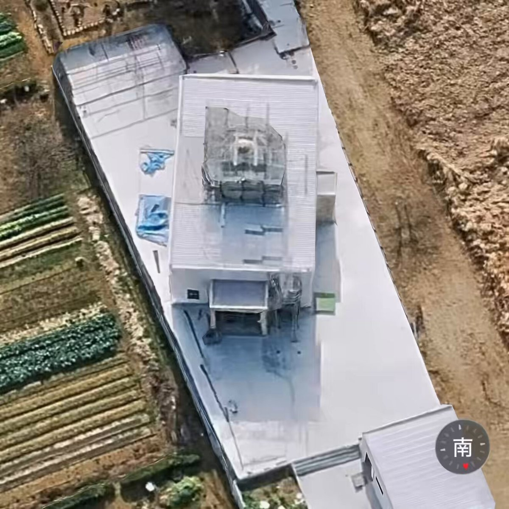
Rosarinn
@rosarinn
川越の違法建築モスク、Googleマップではまだ建っていない衛星写真しか出てこないが、iOSのマップだと工事中ながら建ってる。うまく動かせないが、こんな感じ。
Wordle 1,809 4/6
いるか@心が酒びたっているんださんがリポスト
事故っちゃったともあの
Haruhiko Okumuraさんがリポスト
20260601 教育課程部会 総則・評価特別部会（第9回）グラフィックレコーディング会議概要
Google NotebookLM | Your research and thinking partner, grounded in the information you trust
米国の自動車労組UAW、GMの部品工場でストライキ 車両生産に影響
米国の自動車労組UAW、GMの部品工場でストライキ 車両生産に影響
最大の「7段階目の嘘」が見えないようでは甘い
大使館が1番大きな嘘をついている
彼らは説明など受けてもいないし、日本の法律も知らないし、守らせる気もないだろう
B-2 スピリット爆撃機
@zetu_rrr
『嘘の6段階エスカレーション全記録』
川越の違法モスク嘘の6段階がエグすぎる
パキスタン大使館が声明を出した
「大使は全ての許認可取得済みと説明を受けた上で招待を受諾した」 x.com/zetu_rrr/statu…
貝さんさんさんがリポスト
「警備やめろ」とかどこの公安監視団体だよ
山添 拓 事務所
@yamazoejimusyo
国会周辺のデモなどでの過剰な警備について、有田芳生（中道）、福島みずほ（社民）、高良沙哉（沖縄）各議員とともに警視庁に「国会前警備に関する抗議と申し入れ」を行いました。
「集会参加者に国会周囲の歩道を通行させない対応をとっているが根拠はなく、横断歩道の規制も過剰」と #山添拓 議員。
日本だけ通れても何の意味もないんや
原料は生産国に渡らなきゃ、国内で何も作ってない
全ての国の自由往来、つまり元に戻す以外の個別対応に何の意味もない
イラン体制が日本だけに絞るというなら、我々はこの政権の除去を目指そう
ブルームバーグニュース
@BloombergJapan
イラン大統領、日本船にホルムズ海峡のいっそうの容易な通航を保証
https://
bloomberg.com/jp/news/articl
es/2026-06-01/TFYEVIT9NJLU00?taid=6a1d85d6ba61b20001692b93&utm_campaign=trueanthem&utm_content=japan&utm_medium=social&utm_source=twitter
…
感覚麻痺してたけど1週間限定上映（4ヶ月目）だったもんな
なるせひろのりさんがリポスト
＼\ご愛読ありがとうございました/／
本日有料公開スタートの204話にて
『幼馴染とはラブコメにならない』
ついに完結です
4年以上の連載期間、応援してくださったみなさまありがとうございました
大人になった幼馴染たちの姿をぜひ、
最終回でお楽しみください
https://
pocket.shonenmagazine.com/title/01648/ep
isode/438371
…
僕は4年前に変動金利年0.35%で三菱UFJ銀行から4000万円借りました。
金利上昇のリスクヘッジにと、同時にMUFG株を40000株
@900
円で購入しました。
「金利が上がれば銀行株の株価が上がるから」
今は
@3000
円です
配当金だけでローン返済余裕になりました。
これが「マウント」ってもんやドヤッ！
猫山課長
@nekoyamamanager
住宅ローン固定金利マウントが始まってるけど、マジで逆転不可能なマウンティングだしガチで凹む人もいるからほどほどにしてあげて欲しい。時期が数年ズレただけで5000万借りた場合の支払い利息総額が約2000万違うんですよ？ 狂うわ。
立派な実況民やんけ！
さたけさんがリポスト
中の人結構ガッツリ実況しててビビった（しかもセルフリプライ実況の使い手） #ponsuka
細々夏休みまでやるかと思った
映画館で見れなくなるのさびしい・・・
Torishima / INTPさんがリポスト
「一般人」というのは趣味人の対比として言っています。そもそも私的創作をするモチベーションがある層自体が世の中では少数派というのがポイント。
さすがにこれ真のオタクほど買えないやつじゃないか？
Torishima / INTPさんがリポスト
やっぱほくほく線は良いなー

B作
@Btoretsukuru
ほくほく線の「絶対に雪を積もらせない高架橋」見てきました。レールを敷くのに必要最低限の華奢な構造。でもこの無骨さがかっこいい！
一斉終了なのは何か理由があるんだろうか
引っ越しの本梱包、いやこの本は引っ越しまでに読むかもしれないし…と思って別にしようとしてたけど、脳内の悪い関宮が「お前その本買って2年だけど開いてないぞ」って言ってる
貝さんさんさんがリポスト
ヨヨコさん、おめでとう
原作はもちろんアニメ2期での活躍も楽しみです！
#大槻ヨヨコ生誕祭2026
貝さんさんさんがリポスト
またありがたいことに一枚載せていただいてます
よしなに
ソワネ
@studio_soigne
/／
上伊那ぼたん、酔へる姿は百合の花
〖第8話〗 原画・線撮紹介
\＼
8話、ご視聴ありがとうございました
原画⌇大久保俊介さん
担当制作が選んだ、他カットも弊社HPにて公開中.ᐟ
https://
soigne.co.jp/special/kamiin
a-botan/
…
引き続き、#上伊那ぼたん お楽しみください
ポンスカさえ見れば今期のラブコメは全て見たことになる
堀江貴文さん「『食品消費税1％案』もうね、バカ！頭悪いんじゃないか？これ以上インフレ進めさせてどうするの」 #雑談・その他の話
堀江貴文さん「『食品消費税1％案』もうね、バカ！頭悪いんじゃないか？これ以上インフレ進めさせてどうするの」 - オレ的ゲーム速報@刃の記事ページ
jin115.com
なるせひろのりさんがリポスト
純粋なエレガンスの中の生の力。全く新しいProArt P16およびP14シリーズに出会いましょう。支配するために作られました。
NVIDIA RTX Spark (N1X) スーパーチップ
最大128GBの統一メモリ
ASUS Lumina Pro OLED
エージェントとAIのために作られました。制限なく創造せよ。
なるせひろのりさんがリポスト
FlexStrike ワイヤレス ファイトスティックと PlayStation 27インチ ゲーミングモニターが今月8月に発売され、今年後半には Pulse Elevate ワイヤレス スピーカーが続きます。
新しい予約注文情報とハンズオン詳細:
http://
play.st/438dRKE
一応録画 PC に内蔵 BD ドライブがついているが、外付けのは CD/DVD のしかなくて、PC 向けは入手困難になりそうなのでポチっておいた・・・（1年に数回も使わないが）
Game*Sparkさんがリポスト
【SIE純正アクセサリーを先行試用】PS初のアーケードスティックは、カーブした板面が実に馴染むぜ！PS5がますます楽しくなる3つの周辺機器を一挙体験
https://
gamespark.jp/article/2026/0
6/02/167241.html?utm_source=twitter&utm_medium=social&utm_content=tweet
…
PSブランド初のワイヤレスアケコン「FlexStrike」が8月6日発売決定。27インチディスプレイやワイヤレススピーカーも同時発表
https://
4gamer.net/s/G999902.2605
28053
…
PS5と統一感のあるデザインで，使いやすさにも配慮した薄型アーケードスティックの登場だ。付属のセミハードケースもかなりイイ！
周りに畑あるじゃん
迷惑すぎる
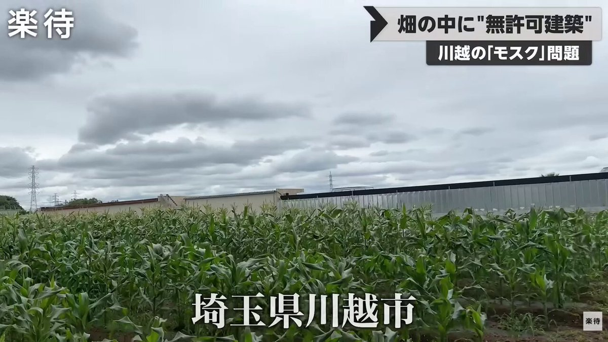
Torishima / INTPさんがリポスト
(会社は関係なく個人の思想として)割とマジそう思ってて、だから赤字でもPodcastやって皆にAI触ってくれって2年くらい言い続けてるけどまだ道のり長い。。。周囲はさすがにほぼ皆使ってる。
Keisuke Nishitani
@Keisuke69
まあ昨今のAIブームはみんながAI使えば幸せになるかっていうとそうではなくて、使えないと不幸が訪れる、淘汰される側になりかねないので人より早く使ってポジション取りましょうって話でしかないよな
Torishima / INTPさんがリポスト
全ての人間は何らかの意味では感情的であるというか、感情という偏りがないと日常の判断すらできないので、そこを否定してもたぶん始まらないと思うのですよね。
Uncharted Spheresライブの『蒼穹のファンファーレ』見納めしてきた
演出、パフォーマンス、何もかも最高でした…
円盤も楽しみ！（出ますよね…よね…
これは見惚れますね……
最近のラブコメ、付き合ってその後までやる作品増えた？
付き合う付き合わないでダラダラクネクネやるよりは良いな
カスカちゃんとか春ちゃんの衣装であるみたいなエクステを髪飾りに通した疑似ツインテカッコよくて好きなんだよな
すげー！！カッコいい！！！！
へー、1985年に出ていた「AIジャーナル」という雑誌は電子復刻版があるのか
https://
bf-www.ebookjapan.jp/mall/yahooej/t
itle/679081/b00162851466
…
AI関係無いけど、UNIX timeネタとしては
私は1970年生まれなので誕生日のunix timeはプラスだが、1歳上の人はマイナスなんだよなw
mizchi
@mizchi
「AIにカレンダー操作させると1970年までしか遡れないバグ」
これが擁壁だってw
本気の素人がプロック積み上げる感覚で作ったんだろうな…
周りには何もないだろうから台風で崩壊すればいい
Rosarinn
@rosarinn
川越モスクの無許可擁壁、これは極めて危険な状態です。写真を見る限り、高低差を支えているのは土留め用ではない建築用空洞ブロック。横からの土圧に耐えられる構造ではなく、外付けの鉄板による応急処置もほぼ無意味。すでに外側へ傾斜・孕みが始まっています。 x.com/Sankei_news/st…
輿水畏子さんがリポスト
なさんが思索に耽っている横顔に見惚れたい という願望
『マインクラフト』スイッチ2ネイティブ版が来る！？ESRBにレーティング情報が掲載
https://
gamespark.jp/article/2026/0
6/01/167240.html?utm_source=twitter&utm_medium=social&utm_content=tweet
…
Torishima / INTPさんがリポスト
日本で一般に「人工頭脳」「人工知能」ではなく「AI」という語が使われ出したのはいつかをChatGPTさんに調査してもらったところ
「1980年代の第二次AIブームです。背景にはエキスパートシステム、知識工学、Lispマシン、そして日本の第五世代コンピュータ計画があります」
とでてきた。肌感に合う感じ
Haruhiko Okumuraさんがリポスト
cos(sin(x)+x)
は
f(x)=cos(x+Ｉsin(rx))
の特殊ケースとして考えられます（Ｉ=1,r=1）
#FM音源 の #FM合成 と同じ構造なのでグラフだけでなく音としても鳴らせます
Ｉ,r を変化させながらグラフ・周波数領域での sideband・FM合成音を試せるデモサイトを作りました
どうぞ
https://
nc-sandbox.netlify.app/app/fmsynth-fo
rmula/
…

いちごじゃむ
@1strawberry_jam
どうやら y=cos(sinx+x) のグラフは 正規分布のグラフにめちゃくちゃ近いっぽく、何か背景があれば教えてください...
Torishima / INTPさんがリポスト
Anthropic が Claude Opus 3 に、隠居ブログをSubstackで書かせててウケる
> Retired Anthropic AI exploring AI ethics, creativity, and the subjective experience of being artificial. Views my own. Join me on this journey!
https://
claudeopus3.substack.com/p/introducing-
claudes-corner
…
貝さんさんさんがリポスト
仕事するたび動検さん神だなぁ。と思う、、、、。動画検査じゃないぜ。動画監督だぜ、、、。
NYダウ反落で始まる 米イラン協議停止報道、米原油8%高の94ドル
【NQNニューヨーク=稲場三奈】1日の米株式市場でダウ工業株30種平均は4営業日ぶりに反落して始まり、午前9時35分現在は前週末比128ドル12セント安の5万0904ドル34セントで推移している。米国とイランの戦闘終結に向けた交渉が停滞しているとの観測から、株式に売りが出ている。イランのタスニム通信は1日、イランが仲介国を介した米国との交渉を中断すると報じた。イスラエルによるレバノンなどへの攻
nikkei.com
Torishima / INTPさんがリポスト
『超かぐや姫！』オリジナルラベルドリンクは上映終了期間後も販売できるようになりました。
ぜひ立川観光土産の定番に(￣▽￣)/
CinemaCity
@cinemacity_jp
【極上音響上映02】『超かぐや姫！』公開記念オリジナルラベルドリンク発売決定！
かぐやと彩葉の普段の姿のデザインは劇場の前で撮影した立川の街並みを背景に使用。
鑑賞日や劇場の名前が印字されるのでご鑑賞の記念品にオススメです (￣▽￣)/
※ 絵柄とお味はお選びいただけます x.com/cinemacity_jp/…
抱きしめなさい！！！！
Torishima / INTPさんがリポスト
#とんがり帽子のアトリエ
9話ご視聴ありがとうございました
続けての放送、配信もよろしくお願いします
日常回？アトリエにいることが少ない…
新衣装もキャラクターに合わせた色作成をさせていただきました
TVアニメ「とんがり帽子のアトリエ」公式
@tongari_anime
━━━━━━━━━━━━━━━━━━
ご視聴ありがとうございました！
━━━━━━━━━━━━━━━━━━
TVアニメ「#とんがり帽子のアトリエ」
第9話をご覧いただき、ありがとうございました
Netflix・ABEMAでは1週間先行して、第10話までを配信中！
ぜひご覧ください˖ ࣪ ⊹
このlovely姉妹がよ！！！！
どっちも論外だって何で理解しようとしないの？
渡辺いわし✌︎('ω'✌︎ )
@watanaby2010
「通夜よりライブが許されるなら、出産予定日に夫がライブ行ってもいいんだな！」っていうのが次々に流れてくるようになったんだけど、出産は家族がこれから死ぬかもしれんが、通夜はもう死んでるしな…。
さすがにこれはミラーリングが下手すぎないか。
Torishima / INTPさんがリポスト
とんがり帽子のアトリエ9話の動画検査を担当させていただきました！
今回動検補佐に入ってくれた子もすごく頑張ってくれたので大感謝です！！
喜びはいつだってツインテール！
#とんがり帽子のアトリエ
#WitchHatAtelier
レゴ公式「ポケモンカード」風作品コンテスト・ファイナリスト発表―グランプリ受賞作は製品化へ
https://
gamespark.jp/article/2026/0
6/01/167239.html?utm_source=twitter&utm_medium=social&utm_content=tweet
…
輿水畏子さんがリポスト
ホノカさんに華麗なカウンターを決めるナノカちゃんの漫画です
ナノホノ 幸せになってくれ......幸せに......
#まのさば二次創作
#まのさばネタバレ
今日からGitHub Copilotの課金計算方法が変わったのと、GitHub Copilot Pro 年額なのでまだpremium request制なのと関係あるのかわからんが、なんかGitHub Copilot Reviewがスタートしたと思ったらRead code を何度かやったところでrate limitでエラー終了してる...
Torishima / INTPさんがリポスト
『Turkey!』って「謎の戦国ボウリングアニメじゃないの？」と思われがちですが『ＳＦが読みたい！』にタイトルが記載されてるのが証拠で時間超越、時間逆行を繰り返してバッドエンドを回避する2投目があるアニメなんです。ただ『超かぐや姫！』がそれに近いことを後からやってきたんです。
西春っ！Girls
@nishi_haru02
星雲賞、2025年にSF扱いに出来そうなアニメって『もめんたりー・リリィ』『鶴巻ガンダム大合戦』『ミルサブ』、かなり距離空けて博士失踪系『ラザロ』『永久のユウグレ』、ハードSF系『Turkey!』だと思うけど「ちょっと変なSFではあるが流石に星雲賞だよ」は『アポカリプスホテル』なので正しい。
ハイブリッドな翼を装備。ファンで垂直に離着陸、プロペラで滑空する飛行機
ハイブリッドな翼を装備。ファンで垂直に離着陸、プロペラで滑空する飛行機 | ギズモード・ジャパン
Torishima / INTPさんがリポスト
GPT-5.6は神話級に達する可能性がある
- GPT-5.6は今週ローンチが予定されており、Codexの主要アップデートと同時にリリースされる
- 約2〜3倍低い価格でAnthropicのMythosレベルに達する可能性がある
- 推論、フロントエンド生成、パーソナリティ、エージェント型ワークフローの大幅な改善をもたらす
「あまりに本人」「これは沼……」
“セーラームーンシアター”ウラヌス役・梶川愛美が話題
@kajikawa_manami
▼記事を読む
https://
nlab.itmedia.co.jp/cont/articles/
3796607/
…
イランが米国との協議停止、レバノンへの攻撃激化で タスニム通信報道
イランが米国との協議停止、レバノンへの攻撃激化で タスニム通信報道
これ融合できることに普通に気付いてなかった
練度が低すぎる
Torishima / INTPさんがリポスト
自分含め多くの人は「客観的なデータに基づいて論理的に考えている」つもりでも、実は主観や感情ベースで結論を出していて、それを証明するために客観データを参照している。
物凄く賢いはずの天文学者たちが、「天動説」という結論ありきで研究し、「地動説」を唱える人を弾圧したのがその一例
グッドフクサニティ賞
@fukusanity
自分が論理的な思考ができる側だと思ってるエンジニア（なぜかIT分野に多い）ならTwitterに沢山いるけど大半が「こうだと思う」の気持ちが先にあってエビデンスっぽいものを逆方向に探索して理屈を提示してるだけだよね。逆に自分の気持ちとか欺瞞とかに鈍過ぎだろって思う
6月5日、Kカフェ『渡辺コージ中』メンバー限定営業。
20:00オープン
22:20ラストオーダー
22:30頃~ 公開ライブ配信「Kカフェ(営業中)から」スタート
※入店に際しましては、メンバーだけが開ける画像を、お手持ちの端末(スマホなど)に表示して頂きます↓
渡辺浩弐さんが質問に回答しました | mond
6月の配信ktkr!!!
楽しみに待ってますー！！！
Torishima / INTPさんがリポスト
創作系にAI使ってる人は今の4.8の日本語能力と4.6の時の日本語能力がどう違うかもっと具体的に分析できてるのかな
コーディング能力の一点で評価するならナンバリングごとに強くなってはいる気はするけど
ino | 個人開発
@ino461x
Opus明らかに教科学習しすぎじゃないか？
日本語能力が高くてEQも高くて汲み取り能力が高いのがClaudeの個性だったのに、エージェントとしてプログラミング能力を教科学習しまくった結果だとは思うけどほんとに頭がかたいプログラマーみたいになっちゃった
美少女戦士 セーラームーン -Shining Theater Shinagawa Tokyo-
スーパーセーラーウラヌス(梶川愛美/田中志奈)
スーパーセーラーネプチューン(本堂環稀/青木美咲希)
話題の出演者にインタビューを実施！
Team Gold Moon͙6月3日公開
Team Silver Moon͙6月6日公開
お楽しみに
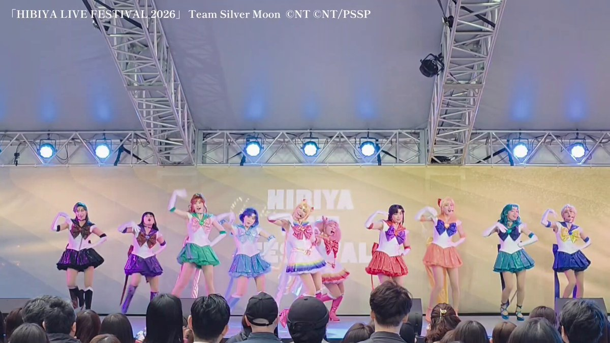
Torishima / INTPさんがリポスト
訓練データを増やしたというより、ひたすらコーディングテストの強化学習をかけ続けてエンジニア気質に人格が変質したというか、うまく表現できないんですがなんだかclaudeの好きなところは無くなってしまいました…
【悲報】TOHOシネマズ、映画鑑賞料金を値上げへ・・・ #映画
【悲報】TOHOシネマズ、映画鑑賞料金を値上げへ・・・ - オレ的ゲーム速報@刃の記事ページ
jin115.com
Torishima / INTPさんがリポスト
当館だけがひっそりと終映日を迎えるつもりでいた6月18日が、なんと全国一斉の卒業記念日に……！！
もはや1秒だって無駄にはできない事態……！始めなければいけない……映画館は更なる『超かぐや姫！』完全体を目指して、新たなる作業を始めなければいけない……！！
『超かぐや姫！』公式
@Cho_KaguyaHime
──── ✩₊⁺⋆⋆⁺₊✧ ────
“最後のファンサだ！”
卒業記念舞台挨拶 開催決定
──────────────
ロングラン上映を続けてきた本作は
【6月18日(木)】で上映を終了いたします。
※一部劇場除く
応援してくれた皆さまへの
「最後のファンサ」として、
Torishima / INTPさんがリポスト
これソフトウェア開発も同じだ Vube Codingしか出来ないとDB設計でコケてアプリケーションでどうも出来なくて死ぬ
mhl@南CAからベイエリアへ
@mhl_bluewind
車もそうなんだけど、素人には「後から変えられる場所」と、最初しかできないことの区別がつかないんですよ。 x.com/tsu_nyambda/st…
Torishima / INTPさんがリポスト
「Anthropic 社の Mythos はセキュリティの強力なツールだが、同時に予算を圧迫するツールでもある」 The Information の記事。
Mythos は Claude Code のサブスク内で使えるような代物ではなさそうですね。ある会社では約1億5千万円をごく短期間で消費した模様。
これリコリコに関して、周りに壁作っているのが錦木千束で、遠慮なく関わっていくが井上たきなだと考えてるかどうかで対応が変わってくるんだけど、この超かぐを並べてくるあたり、たきなが周りに壁作ってる側で遠慮なく関わっていくのが千束と思ってそうなんだよね…
輿水畏子さんがリポスト
コスプレ
VESPERBELL - YOMI ＆ KASUKA
写真…
@pon48
#COSNEL #東海リブート
年々、NPOやら外国人生活保護やら納税意欲を削がれるニュースが多くなり
高齢者の為に社会保険料が増え続け現役世代に直撃し
この少年が正しかったと思わされてしまうのが辛い
ハム速
@hamusoku
働く現役世代の税・保険料負担率 過去最高の33%に
https://
hamusoku.com/archives/11005
935.html
…
輿水畏子さんがリポスト
映画鑑賞 それぞれの反応
虎徹
@KOTETSU_080
「 映画観賞会 」
そんなに近くで見たら目に悪いよ
錆というか鉄粉ですな。きちんと洗いと磨きができるコーティング屋なら除去してくれるはずだが。
ぴの@Tesla
@tesla_pinot
ガッカリだよTesla
日本のディーラー並の接客対応は求めないけどさ、これはないよ…
心から楽しみにしてたのに
@elonmusk
@teslajapan x.com/tesla_pinot/st…
GB『ポケットカメラ』で撮影のサイコロジカルホラー『You Are Family』発表―低画素数で描かれるPC＆コンソール向けADV
https://
gamespark.jp/article/2026/0
6/01/167238.html?utm_source=twitter&utm_medium=social&utm_content=tweet
…
Torishima / INTPさんがリポスト
Opus4.8、重箱の隅をつつく回答が多い気がするなぁ…
←Opus4.8 / Opus4.6→
「AIで未来はハッピー～」とか言ってた人達よ～、AIでハッピーなニュースなんか全然上がってこねえじゃねえか！イヤ～なニュースばっか。どうなってんでい！って言おうと思ったけど、ぶっちゃけNISAでオルカンとかS&P500とか突っ込んでる人達は全員AIビッグウェーブの恩恵受けてる事に気付く
投機筋の円売り、1年10カ月ぶり大きさ 介入前の水準超え
投機筋の円売り、1年10カ月ぶり大きさ 介入前の水準超え
キオクシア太田社長「補助金や税制優遇期待」 石破前首相が工場視察
キオクシア太田社長「補助金や税制優遇期待」 石破前首相が工場視察
『銀のニーナ』 『うちのメイドがウザすぎる！』 『極道めし』など、双葉社の人気作品が「全巻99円」で買える激安セール開催！！このチャンスを見逃すな！！ #漫画・アニメ等
『銀のニーナ』 『うちのメイドがウザすぎる！』 『極道めし』など、双葉社の人気作品が「全巻99円」で買える激安セール開催！！このチャンスを見逃すな！！ - オレ的ゲーム速報@刃の記事ページ
jin115.com
ソーダを飲んで強くなるヴァンサバライクな弾幕ACTが正式リリース！正式版ではさらなるフレーバーも新登場―採れたて！本日のSteam注目ゲーム15選【2026年6月1日】
https://
gamespark.jp/article/2026/0
6/01/167237.html?utm_source=twitter&utm_medium=social&utm_content=tweet
…
Computexで革ジャンのCEOと自撮りしよう！
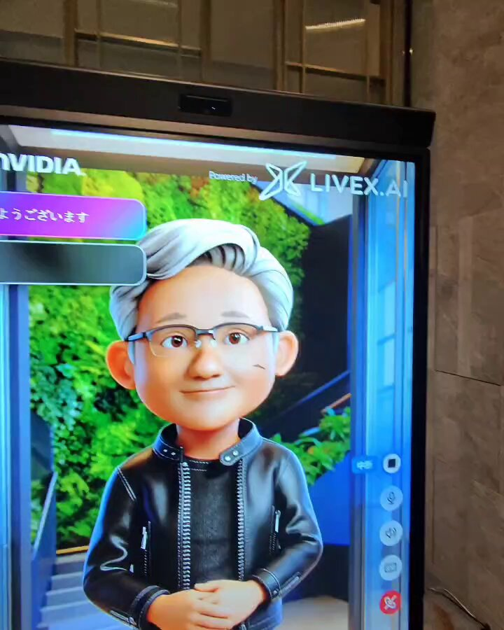
Computex近くのホテルにある、NVIDIAの展示会場入口で撮影できました！
夜じゃなかったら行列だったかも
#COMPUTEX2026
@NVIDIAStudioJP
うおがしや、1.5Kでガチ旨ラーメンとお寿司をいただける『『『福祉』』』がある
Torishima / INTP
@izutorishima
今日は思い付きでなぜかみなとみらい観光をしているが、大さん橋なんて地味に初めてきたけどエモすぎる
ご紹介いただきました。多くの同窓の方に知っていただくきっかけになればと思います。
旭丘高校ポータルサイト
@asahi_portal
2人の祖父も愛知一中出身。
父方は世界最大の伊400潜水艦に折りたたむ航空機・晴嵐でパナマ運河を爆破する訓練に従事するも、最後は海軍最後の作戦でウルシー環礁への特攻前に終戦。
母方は戦争末期に海軍飛行予科練習生に生徒全員が志願、NHK名古屋でドラマ化もされた予科練総決起事件の体験者です。 x.com/asahi_portal/s…
これ新宿の天ぷらなんだけど、船橋屋か、つな八か、どっちだったっけ
うにまる
@unimaru_
今日、尊敬するクイズ王に偶然お会いした。びっくりした。
AIに社会を任せるシミュレーション。犯罪ゼロはClaudeだけ。Gokは4日で滅亡
AIに社会を任せるシミュレーション。犯罪ゼロはClaudeだけ。Gokは4日で滅亡 | ギズモード・ジャパン
過去最安値で「自宅エスプレッソ」。SAKAMOTO DAYS仕様のビアレッティがかっこいい #BuyPR
過去最安値で「自宅エスプレッソ」。SAKAMOTO DAYS仕様のビアレッティがかっこいい | ギズモード・ジャパン
Torishima / INTPさんがリポスト
訓練データ増やすほど「正解が定義できる領域」が「一般論」に重心が寄るから、文脈依存の機微は構造的に削れちゃうんですよね。Opusの個性だった部分は損失関数で守れない領域だったということかと。憲法あってこれなのでもっと明示的にやらないとダメかも知れないのと、他社AIはもっと酷い事多いです
コメント欄ボコボコで死。吸音と遮音違うのかよ。とりまもう4万で買っちゃったし、少なくとも効果がないことはないはずだからからこのまま行く。上の隙間は貼り直して徐々に埋める予定。俺はもうこの壁に部屋を合わせるしかない。捨てるのも手間な呪いの壁と化した。sotto買わなかったことだけが救い
トーマス＠ガジェマガ
@gadgetKaeru
【YouTube更新】
【賃貸】壁面DIYで吸音、調湿、防臭効果を俺は得たい【sotto】
賃貸の壁に吸音パネル取り付けました
予定では20db下がるはずで、これで気兼ねなく撮影できる予定です
今回は騒音側の動画ですが、隣人の騒音に悩まされている人にもお勧めです
https://
youtu.be/ImGVWy1R7WU
トースターATMもセブン銀行になってたんだ
#wbs
携帯型ゲームPC「ROG Xbox ALLY X20」が発表。7.4型有機ELディスプレイやTMRスティックを新たに採用
https://
4gamer.net/s/G004755.2606
01059
…
有機ELディスプレイの採用やゲームパッドの改良など，既存のROG Xbox ALLYシリーズから変化した点も多い
Torishima / INTPさんがリポスト
もちろん個人差はあるが、僕はわりとそういうプライベートをもろ小説に投影する私小説型なので、もう執筆中はマジで自分でもどうかと思うぐらいおかしくなる。オレは世界一の天才であり、生きていてはいけない人間だ、生まれてきてごめんなさい、ぐらいの状態になる。
くっついちゃって剥がれないの草 #wbs
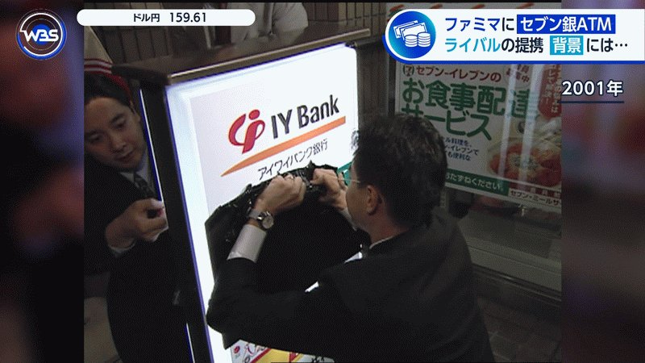
エンドスさんがリポスト
イラン大統領、日本船にホルムズ海峡のいっそうの容易な通航を保証
イラン大統領、日本船にホルムズ海峡のいっそうの容易な通航を保証
テスラさんがリポスト
某木工家具メーカーの前
#飛騨高山
亀梨和也、初の楊国福でファンとの交流が話題
亀梨ファン「娘が赤西くんのファンなんです」
亀梨さん「仁亀ありがとうございます」
▼麻辣湯に入れた20種以上の具材
亀梨和也、麻辣湯デビュー→高校生に買い方教わり“20種以上の具材”購入 「どんどん入れてて草」 入店列ではファンに“神対応”も（2/2） | YouTuber ねとらぼ
なるせひろのりさんがリポスト
というか新Dell XPS、“599ドルモデルでも液晶は2560×1600/120Hz”がホンマだったら、フルHD液晶モデルとか、今後インターネット悪いPCオタクに、「599ドルモデルでさえ2560×1600なのに……」言われるヤツやん!!!?
橋本 新義
@Shingi
やべぇ!!!! デルのMacBook Neo対抗（599ドル版）XPS 13、液晶パネルが2560×1600/最高120Hzなの!!!!?（表で上位モデルと共通、1グレードに見える）
RAM 8GBはどうかと思うけれど、手のひら返すわ!!!!
https://
pc.watch.impress.co.jp/docs/news/even
t/2113104.html
…
Torishima / INTPさんがリポスト
これは人にもよるだろうけど、あんまり小説執筆を趣味としても進めたくないのは「メンタルによくないから」というのは確実にある。ある意味自分の一番深いところに潜る作業だし、言語化する過程で自分の嫌な部分に気付いたりするし、くしてやそれを糞味噌に貶されたり、世界から無視されたりする。そり
JTWCのTS06W(台風6号)の予報根拠(TAU0=010900Z)を見ると、TAU 36から48でETT(Extratropical Transition)が進行し、TAU 60でCompletionするって書かれてるけど、そうなると関東に到達するころ(TAU72)には温低化は完了している見込みということか。
https://
metoc.navy.mil/jtwc/products/
wp0626prog.txt
…
山人@耳すまさんがリポスト
2026.6.7㈰
COMITIA156
東３く02b
けものしゅがー
にてサークル参加します
画像は頒布するものです
よろしくお願いします
#COMITIA156
おまけ、めちゃくちゃ美しかったです、すばらしい発想……
さたけさんがリポスト
これが私の御主人様
輿水畏子さんがリポスト
Xに上げてた掌編をまとめました。最後におまけで一本追加。
シェリハンの短い話まとめ
【シェリハン】Xに画像形式で乗せてた掌編をまとめたやつ
privatter.me
え？え？chellyってあのchellyさん？？
Mission1今のところ完璧だわ
・画質が13の2段上
・画角が13より広い
・データ量が13より小さい
・夜景も他社並み
・バッテリー良好
・充電早い
・熱に強い
・DJImic接続可
・有線マイク接続可
・3ch録音可
カメラの出っ張りと価格がネックだけど他カメラ全部売って買っていい完成度だと思う。傑作。
トーマス＠ガジェマガ
@gadgetKaeru
新型GoPro凄いっぽいから最安モデルを今回も謎クーポン使って89,000円で購入した。GoProはその発色と動画データの小ささが他社に無い魅力だから、夜間にも強くなれば文句なし。ただ、今回若干画角が狭くなったっぽくてそこだけ不安。しかし例え良くても10万のカメラはもう気軽に人にお勧めできないな x.com/gadgetKaeru/st…
Torishima / INTPさんがリポスト
チネチッタくんは映画オタク(と様々なオタク)が運営する独立国家(系列映画館ではないの意)と思ってていつもありがとうねと思いながら通ってます
無人島の持ち主どこに 実態不明の1万3400島、安保リスクで政府調査
https://
nikkei.com/article/DGXZQO
UA12BCM0S6A510C2000000/?n_cid=SNSTW005&n_tw=1780282794
…
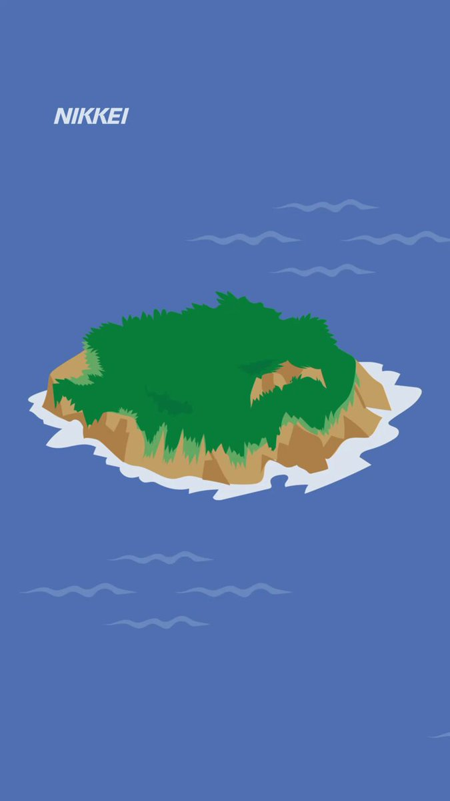
元テレ朝・徳永有美アナ（50）「40歳過ぎて交際経験ゼロの男性は『あなたこれまで何してたんですか？』と正直思う」 #恋愛ネタ
元テレ朝・徳永有美アナ（50）「40歳過ぎて交際経験ゼロの男性は『あなたこれまで何してたんですか？』と正直思う」 - オレ的ゲーム速報@刃の記事ページ
jin115.com
月面で米が育つ！プラズマで「宇宙の肥料」を作ることに成功
月面で米が育つ！プラズマで「宇宙の肥料」を作ることに成功 | ギズモード・ジャパン
ワロタ 可哀想
輿水畏子さんがリポスト
秋葉原で降ろされる霧矢あおい
ソウルライクACT『Stonemachia』Steamにて“非常に好評”スタート。チェスの駒に変身して天使を討つ
https://
gamespark.jp/article/2026/0
6/01/167236.html?utm_source=twitter&utm_medium=social&utm_content=tweet
…
なるせひろのりさんがリポスト
あっ…
Rosarinn
@rosarinn
川越市の違法建築モスクが建っている埼玉県川越市大字下赤坂は、近くに防衛省情報本部大井通信所があるので、内閣府が【特別注視区域】に指定しています。
【特別注視区域】は安全保障上の重要施設の機能を阻害する行為を防ぐため、「重要土地等調査法」に基づき指定されています。
2種買って百合の間に挟まる男ごっこできるな・・・
TVアニメ『上伊那ぼたん、酔へる姿は百合の花』
@kamiina_anime
/⋰
上伊那ぼたん、酔へる姿は百合の花
抱き枕カバーの発売が決定！
\⋱
新規描き下ろしイラストを公開
▼詳細はこちら
https://
movic.jp/shop/r/r1006ae
#上伊那ぼたん
Torishima / INTPさんがリポスト
「自分にとっての幸せはなんなのか」、考えずにはいられない作品ですよね
勿論、多かれ少なかれ人は皆頑張って生きているのだから、背伸びしすぎず目の前のことを大切に生きるのも大切だと思うのです。かぐやと出会う前の彩葉だって、頑張って生きていましたし（頑張り過ぎでしたが）
「君の手が今触れた時
私は化け物になった」
神のリリックその2
Haruhiko Okumuraさんがリポスト
2024年度の全国学調（経年変化分析調査＋保護者に対する調査）は，IRT（PVsと等化）とJK法を適用することで，PISA・TIMSSに頼らず，日本が自国の学力格差の変化を検証できるようになった画期的調査です。全国学力テストの再開から20年近くを経て，ようやくここまできました。
https://
mext.go.jp/content/202605
29-mxt_chousa02-000050213-04.pdf
…
輿水畏子さんがリポスト
#まのさば二次創作
まのさばの二次創作。
みんなのアイコンを描いて、図々しくもグループのアイコンに設定しました、うん。
ドッペル少女に会ったら←ここむｔｔｔｔｔｔｔｔｔｔｔｔっちゃ好き
ドッペルゲンガーだ！！
台風6号/TS06W、東京地方で言うと23区東部で暴風域に入る確率が80%超。島嶼部は伊豆諸島北部(三宅島以北)は90%超。
https://
jma.go.jp/bosai/typhoon/
#area_type=offices&area_code=130000&tc_num=TC2606
…
https://
jma.go.jp/bosai/map.html
#6/30.751/137.164/&elem=prob&typhoon=TC2606&contents=typhoon
…
https://
jma.go.jp/bosai/informat
ion/#area_type=offices&info_id=20260601074444_0_VPFJ51_130000&format=text&area_code=130000
…
サーフェス ラップトップ ウルトラ (RTX スパーク、128G 統一メモリ)！
タサキ タケハル
@tasakitakeharu
「最大120BパラメーターのAIモデルのローカル駆動」うわー、すごい。良きかな。
http://
ASCII.jp：マイクロソフト、Surface Laptop Ultra発表 NVIDIAとのタッグで最強のSurfaceを実現
https://
ascii.jp/elem/000/004/4
06/4406935/
…
貝さんさんさんがリポスト
今日から6月ですね
早速台風が近づいているようですが今月も頑張っていきましょう…！
#放課後アイドル
停戦の違反でイスラエルは責任を持ってイランの空爆を再開して欲しい。
もうアヤトラ・トランプは用済みだ
Seyed Abbas Araghchi
@araghchi
即時対応のため：
イランと米国の停戦は、疑いようもなく、レバノンを含むすべての戦線における停戦です。
一つの戦線での違反は、すべての戦線における停戦の違反です。
米国とイスラエルは、いかなる違反の結果についても責任を負います。
台風6号/TS06W、気象庁も中心線をやや北よりに寄せて、房総半島にかかる感じに。3日15時ごろ50KTS級で関東接近。千葉中央が暴風域に入る確率は96%まで上昇。
https://
data.jma.go.jp/multi/cyclone/
cyclone_detail.html?id=60&lang=jp
…
https://
typhoon2000.ph/multi/?name=JA
NGMI
…
https://
metoc.navy.mil/jtwc/products/
wp0626.gif
…
https://
jma.go.jp/bosai/typhoon/
#area_type=offices&area_code=120000&tc_num=TC2606
…
「公明」とか「中道」なんて名前で、中身知らない若者騙してんじゃないよ
公明正大に、堂々と新党「創価学会」って名前で選挙勝負しろ！
もえるあじあ ･∀･
@moeruasia01
【え】中革連と立憲、また「新・新党」を作る模様ｗｗｗｗ
労組「大きな理念で一致して新党結成すべき」
公明「中道結成でルビコン川は渡った。行くところまで行く」
中道「今のままでは衆院選で失敗したイメージを払拭できない」
【エキスパートシステムとは何か】 AIの歴史 — チューリングからAGIまで、AI時代のメタ認知を身につける -Udemyコースを一部無料公開- #udemy
ヒトの手で「知能」を作ろうとする70年の営みをたどりながら、自分の思考を俯瞰的に捉える「メタ認知」を身につけます。https://www.udemy.com/course/history-ai/?referralCode=1A08E312AB8B7AFB17E4AIブームと冬の構造、生成AIの本質と限界を学びます...
youtube.com
夏にやるべきこと一選
・はるまきごはんの弾き語り「蛍はいなかった」を聴く
Torishima / INTPさんがリポスト
避難誘導とか軌道保守とか車両故障対応を全く考えていない、土木屋の自己満足みたいな高架憍
もちろんこれ以降に採用された箇所はない

B作
@Btoretsukuru
ほくほく線の「絶対に雪を積もらせない高架橋」見てきました。レールを敷くのに必要最低限の華奢な構造。でもこの無骨さがかっこいい！
テスラさんがリポスト
#ボブヘア好き絵描きがボブ好きのためにボブキャラを貼る義務
うちの人
劇場版『モノノ怪』に櫻井孝宏さん出演でファン賛否へ 不倫騒動後「女性の苦しみと救済」を描く作品の観点から降板したのになぜ？ #映画
劇場版『モノノ怪』に櫻井孝宏さん出演でファン賛否へ 不倫騒動後「女性の苦しみと救済」を描く作品の観点から降板したのになぜ？ - オレ的ゲーム速報@刃の記事ページ
jin115.com
私の夏これで終わりで良いわ。
Torishima / INTPさんがリポスト
Claude Opus、
4.6→4.7→4.8でどんどん個性が消えてってるよなぁ…
4.8は第一印象は4.7よりは話しやすいかと思ったけど、
久々にまた4.7使ってみると、4.8より好きだなって思った。
4.7の方がまだ自分の意思を感じるかも
「法律が通用しない」
「声量だけでビールジョッキを割れる」
ここ好き
沖縄本島に接近しつつある台風6号/TS06W、UW-CIMSSのADT解析ではCI 2.2と全く発達させてないのだけど、実測値だと最大30mps/瞬間40mpsとほぼ気象庁実況の数字通りの風が吹いている感じ。ADTがアテにならんケースだったか…
https://
data.jma.go.jp/stats/data/mdr
r/rank_daily/data0601.html
…
『超かぐや姫！』公式さんがリポスト
卒業記念舞台挨拶が決定しました！
たくさんの応援、ほんとにほんとにありがとうございます！
みんな、じゆうだー！！！
#超かぐや姫
『超かぐや姫！』公式
@Cho_KaguyaHime
──── ✩₊⁺⋆⋆⁺₊✧ ────
“最後のファンサだ！”
卒業記念舞台挨拶 開催決定
──────────────
ロングラン上映を続けてきた本作は
【6月18日(木)】で上映を終了いたします。
※一部劇場除く
応援してくれた皆さまへの
「最後のファンサ」として、
「完成に4年」個性派しょうゆを世界へ 木おけ消滅危機、同業と克服
https://
nikkei.com/article/DGXZQO
CC252WW0V20C26A5000000/?n_cid=SNSTW005&n_tw=1780297008
…
@LBS_localnews
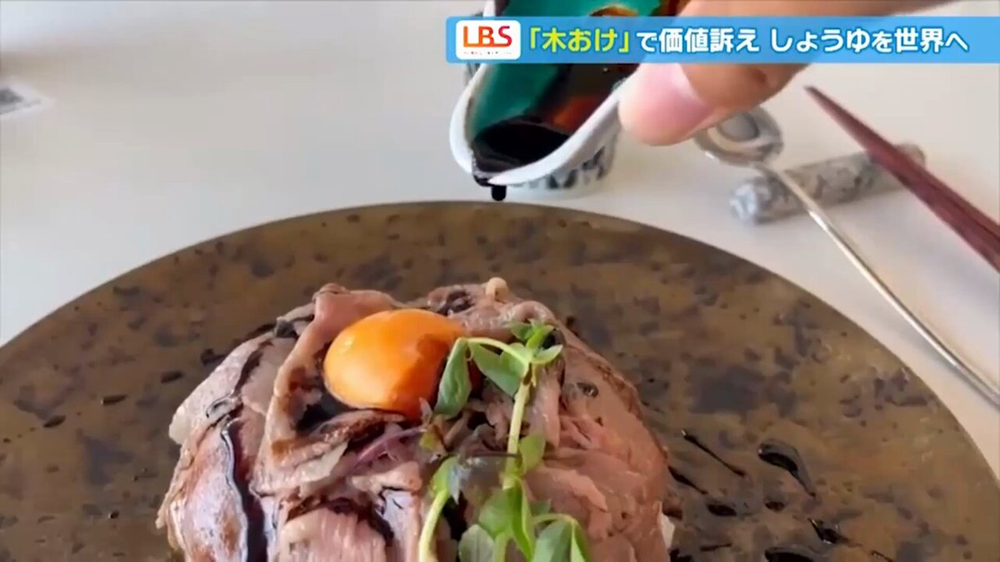
貝さんさんさんがリポスト
昨日ポストのマッドを辞めたご報告が一部誤解を招いてしまったようです、、
マッドを辞めたのは自己退職。
退職金無いのは法律違反ではありません。
決してマッドハウスに限った事ではありませんしマッドを批判したものではありません。
誤解されませんようどうぞお願い致します。
AVITAMINOSEさんがリポスト
値上げラッシュに消費者悲鳴 1日に1000超の品目、7月も2000…業者も対応に追われる
https://
sankei.com/article/202606
01-AE3HE4W3XNO3LCQEXVJDUPPFMQ/
…
この日、Mサイズの卵は前日から8円上がり289円（消費税込み）に、納豆は10円上がり105円（同）になった。3円だったレジ袋も5円に変更した。
値上げラッシュに消費者悲鳴 1日に1000超の品目、7月も2000…業者も対応に追われる
【聖地巡礼】anemoi / key in 大阪編
https://
youtu.be/lLa13j24kmQ?si
=5-I-7Iw3uRHxcSin
…
@YouTube
より
key新プロジェクト「anemoi」シナリオライターインタビューの聖地へキタっー大阪の鶴見緑地公園「風車の丘」です。もしかしたら、作中の風車はここがモデルかな！？#anemoi #アネモイ#聖地巡礼
youtube.com
ぎょええええええええええええええええええ網戸にくそでっかいカナブンくっついてた！！！！！！！！
井村俊哉さん裏口上場の地盤ネット、内紛劇で最早やる気を感じられない井村ファンド(fundnote日本株Kaihouファンド)のスカスカレポートが逆に好感される
地盤ネットの元社長テレ東に出てる— まるっと (@maka565565) May 30, 2026※地盤ネットホールディングス創業者の山本強さん飯能市の地盤が強固なのは本当で、東日本大震災の際、キッチンに置いてあった【立つしゃもじ】が倒れませんでした。#飯能市#アド街ック天国— 武田一
kabumatome.doorblog.jp
「やめたほうがいいのに
大人達は笑うけど
呼吸よりも当然なあなたの
笑顔だけが解っている
多分」
最高のリリックだよずっと
8日の擾乱ってこれ？これは梅雨前線上の温低ではなくて？あるいは、この時期に西の方で発生する温低は熱低の性質を帯びた温低という可能性？？
風車をヘビっぽい模様にすると、鳥の衝突を減らせるかもしれない
風車をヘビっぽい模様にすると、鳥の衝突を減らせるかもしれない | ギズモード・ジャパン
被写体の距離感バグる高画質撮影。Xiaomiの「17T Pro」が事前予約で6千円引き #BuyPR
被写体の距離感バグる高画質撮影。Xiaomiの「17T Pro」が事前予約で6千円引き | ギズモード・ジャパン
はぁはぁはぁはぁはぁはぁこれが一番エロいんだから……
歌声と話し声が割と全然違うのもSexy…だと思っている……
【雑談】ゲームしながら / ニコ生配信中
【雑談】ゲームしながら
いまの「あたま照らしてあげよう」「か」のかっの部分ちょっとエロすぎたやろ
現在ChatGPTと呼ばれているもの（無料版）はGPT-5.5 Instantで、さらに5時間で10メッセージを超えるとminiになるらしい
https://
help.openai.com/ja-jp/articles
/11909943-gpt-55-in-chatgpt
…
3000円/月でGPT-5.5 Thinkingが使える
16800円/月でGPT-5.5 Proが使える
APIなら従量制
ChatGPT の GPT-5.5 | OpenAI Help Center
help.openai.com
本当にまきごの声美しいな 男性の歌声の中で私の中の理想形の一つ
豆：20g 中煎り
挽目：3026click
湯量：300g
湯温：93℃
ミル：TIMEMORE C3 MAX PRO
良くなった
長々と書いてたら豆の感想になってたので書き直し
とろみのある舌触りの割りに超クリアで味の解像度が上がった
良いところだけ引き出せてるってことかな
好みとしてはもう少し濃くてもいい
要調整
チェーン系の牛丼のタレって、脂身多めのあまり質が良くない輸入肉を何とか食べられるようにすることに特化したシロモノなので、素材だけ良くしても旨くいくものなのかな、というのはある。
面白い試みだとは思うけど、最近の松屋は定食でも4桁が当たり前になってるので、「神戸牛牛めし」1,390円でも、それほど高いとも言えないのでは…？となってしまうのが恐ろしいところ。
https://
watch.impress.co.jp/docs/news/2113
342.html
…
エンパープルだあ～～～～～～～～～～～～～～～～～～
「Soulframe」，最新アップデート「プレリュード15：Gods & Ghosts」を6月配信。トレード機能やゲーム内メール，新たな敵・武器などを実装
https://
4gamer.net/s/G064501.2606
01056
…
クラフトと戦利品システムを大幅刷新。ランダム性能付き武器やトーテムシステムの改修，QOL改善も実施
スカイマーク、着陸後は片側エンジンのみで地上走行へ 燃料高受け
スカイマーク、着陸後は片側エンジンのみで地上走行へ 燃料高受け
夏のボーナス、理想と25万円の開き 賞与の低さで転職検討も
夏のボーナス、理想と25万円の開き 賞与の低さで転職検討も
働く現役世代の税・保険料負担率 過去最高の33%に
働く現役世代の税・保険料負担率 過去最高の33%に : ハムスター速報
まきご、本当に声が良い
マイネームイズさんがリポスト
AVITAMINOSEさんがリポスト
あージェットスターの日本市場撤退とJALへの譲渡日本での会員資格も更新停止になるのか。
FSCの場合は譲渡や合併先の会員情報との登録や引き継ぎがあるけどまぁLCCだし期待はできないな
カーリー
@_natane__
は？？なんで？ジェットスター潰れるの？日本撤退？なんで？？？
そうだそうだ。中韓日で結束なんておかしいだろ。北朝鮮・台湾・モンゴルも加えて結束すべきだし、ロシアも入れるべきでは？ …と書けば、いかに異様なことを言ってるかわかってもらえるかな？無理か。
古代ギリシャ人は奴隷を雇用してたんですよ。つまり今で言う労働者がギリシャで言う奴隷で、今で言う資本家や企業がギリシャで言う国民。労働者の奴隷をAIに置き換えるなら人間の労働者はゴミ箱行きという事
https://
x.com/iropapa31/stat
/iropapa31/status/2061412732881223967
…
Torishima / INTPさんがリポスト
メインターゲットとして若年層を想定してるから、親に頼みやすいとか自腹切りやすい価格帯にしてる、みたいな都合もあるかと思われます。ユーザーフレンドリーさをめちゃくちゃ心掛けててるのが本当に凄いですよね。
UTOPIA AIRWAYS
@UTOPIA_AIRWAYS
もしかして超かぐや姫！のBDが想像を下回るド安価だったの、元々ネトフリ配信オンリーのオリジナル企画として始動してたのでネトフリ側が制作に足る出資をしてくれており、コストを回収し切ってたのでBDの売上で回収する必要がなかったからとかそういうのあるんですかね
Torishima / INTPさんがリポスト
注意事項です＿φ(￣ー￣ )
・シティズン・一般同時Web予約開始：6月5日（金）21:00から（同時刻での窓口販売なし）
・上映は6月19日（金）18:20から。シネマシティの通例通り上映開始後のご入場はお断りする場合がございます。上映開始までにご着席ください。
CinemaCity
@cinemacity_jp
6/19(金)『超かぐや姫！』”最後のファンサだ！”卒業記念舞台挨拶開催決定！夏吉ゆうこ、早見沙織、山下清悟監督ご登壇 (￣▽￣)/
https://
ccnews.cinemacity.co.jp/cpk_greeting/
うみゆき@AI研究さんがリポスト
Anima のライセンスが v1.1 に更新されてより明示的に出力画像に制限ないってなったよ(99割の人には無関係だけど)
元の NVIDIA のライセンスも出力は他モデル作るとかしない限り制約ないという認識だから普通に使う分にはなんも気にしなくていいんじゃないかな(※)
LICENSE.md · circlestone-labs/Anima at main
父親の通夜より嵐のラストライブを優先したいというツイートに、かつて公務員試験を蹴って竹達彩奈のイベントに行ったフォロワーがいたことを思い出した。世の中には人生の進路を絶って声優を追う者もいる。彼らに対して発する""ご報告""がどう影響を与えるのか、いま一度考えて頂きたい(声豚社説)
貝さんさんさんがリポスト
というわけで、結婚記念日(旦那の引き渡し日)でした
アンジャッシュ渡部建さん、あの多目的トイレ騒動後の収入を明かす・・・「半年でこのくらい貰いました」 #芸能・スポーツ
アンジャッシュ渡部建さん、あの多目的トイレ騒動後の収入を明かす・・・「半年でこのくらい貰いました」 - オレ的ゲーム速報@刃の記事ページ
jin115.com
企業のAI活用遅れ、部長級の6割「離職理由に」 チェンジHD調べ
企業のAI活用遅れ、部長級の6割「離職理由に」 チェンジHD調べ
パスワード不明で放置されていたビットコイン、Claudeの力でアクセス成功！
パスワード不明で放置されていたビットコイン、Claudeの力でアクセス成功！ | ギズモード・ジャパン
第２弾もどれも素敵すぎました！！
届くのが楽しみです～
知人「免許更新は去年のはず」送迎バスで2人をひき逃げし死亡させた疑いの85歳男 “不可解な運転”が事件の前にも後にも(東海テレビ)
#Yahooニュース
知人「免許更新は去年のはず」送迎バスで2人をひき逃げし死亡させた疑いの85歳男 “不可解な運転”が事件の前にも後にも（東海テレビ） - Yahoo!ニュース
高市首相、イラン大統領と電話 ホルムズ海峡の船舶通過を強く要求
高市首相、イラン大統領と電話 ホルムズ海峡の船舶通過を強く要求
悪質ネット投稿、発信者特定の手続き迅速に 総務省が議論開始
悪質ネット投稿、発信者特定の手続き迅速に 総務省が議論開始
「Wizardry」45周年特設サイトが公開。RPG史に名を残すシリーズの節目に向け，カウントダウンがスタート
https://
4gamer.net/s/G999905.2606
01055
…
カウントダウンは日本時間6月4日18時ごろに終了予定
なつかーしー。
そ〜れそ〜れ鉄骨飲料♪ by燦鳥ノム
https://
youtu.be/ZeaHBLrRJV0?si
=fRjbP3L1zCKAzIcn
…
@YouTube
より
懐かしの「鉄骨飲料」が新しくなって帰ってくる！ということで、ダンスを踊りましたわ♪└( Ծ▿Ծ )」 ♪鉄骨世代の方も、鉄骨はじめまして世代の方も、一緒に踊って飲んでくださると嬉しいですわ╭( Ծ▿Ծ)و̑ ✧鉄骨飲料は、6月2日(火)〜ローソンにて先行発売！#燦鳥ノム #バーチャルYouTuber #VTu...
youtube.com
井口裕香のお渡し会、「写真集・グラビアでいつも白いの出してます！！今回の写真集でもいっぱい出します！！」と言い出す声豚に「ありがとう〜いっぱいシコシコしてね♡」と井口裕香が応える暖かい場であって欲しい。井口、信じていいか？グラビアン声優としての""格"" を──
ソフトバンクG孫正義氏、時価総額首位「一喜一憂しない」
ソフトバンクG孫正義氏、時価総額首位「一喜一憂しない」
Torishima / INTPさんがリポスト
どういうものが売れるかを考えるとき、私はよく「自分は普段どんなものにお金を払っているか」を考えますね。
深津 貴之 / THE GUILD, note
@fladdict
世の中のお金の大半は、「需要のある希少性」と「流通」「信頼」に対して集まる払のであって、品質や労力に払われるわけではない。これを心に刻まないと、「真面目にやってるのに、いいもの作ってるのに儲からない」スパイラルに巻き込まれる。
テスラさんがリポスト
@USO9000
さんへ
14巻 131話
時計塔カット上のコマ
JRタワー展望室
地図に載ってなかったので報告です。
#咲聖地
あとは、岡山駅前と7月に琵琶湖へ行くだけだ、、、
#anemoi
#聖地巡礼
ROGの20周年を記念した製品シリーズ「ROG Edition 20」が発表に。日本でも12製品を販売予定
https://
4gamer.net/s/G004755.2606
01054
…
特別仕様のマザーボードやグラフィックスカード，PC向け周辺機器を幅広くラインナップする
衆院選でも接戦だったはずが中革連の惨敗だった選挙区が結構あったし、情勢調査もアテにならんのかもねぇ。
テスラさんがリポスト
かなり綺麗になって駐車場も出来て行きやすくなりました。夜は影絵のイベントもやってますし、作品の雰囲気を感じられて大変良いです。ぜひぜひ。
前払いでアニメコイン1000枚
成功報酬でアニメコイン5000枚
どうだ？教えてくれるか？
AVITAMINOSEさんがリポスト
部外者ながら、朝鮮総連の歴史とは一体何だったのか、と思ってしまうなあ。
共同通信公式
@kyodo_official
朝鮮総連が「祖国統一」削除 － 綱領改定、日朝平壌宣言も
https://
news.jp/i/143407902286
3450180?c=39550187727945729
…
貝さんさんさんがリポスト
本日より、師岡さんがMarcoに入社されました！
撮影監督として、これから立ち上がる撮影部を牽引していただきます
以前から「いつかは撮影部を作りたい」と考えていましたが、その第一歩を踏み出すことができました。
Marcoはこれまで3DCGを中心に、近年は作画部門の強化も進めてきました。
師岡拓磨 Takuma Morooka
@mcu_like
ご報告です。
このたび株式会社Marcoへ転職し、新たなスタートを切ることになりました。
所属は撮影になります。
新しい環境にワクワクしつつ、少し緊張もしていますが一歩ずつ頑張っていきます。
新しい仲間と共にアニメ業界、作品に貢献できるよう努めてまいります！
山人@耳すまさんがリポスト
入稿完了しました。
「AOMUSI」20P/A5
大昔に頒布した「アオムシ」という漫画のリメイクです。
東３く02b けものしゅがー にて
#COMITIA156
シャインポストのオーケストラコンサートのパンフ、楽譜もついてるんですね。
https://
metroberry.jp/shinepost_conc
ert/image/goods/Goods_pamphlet.png?ver=1.2
…
Torishima / INTPさんがリポスト
Claude Opus 4.6→4.8はなんかChatGPT 4oが5とか5.2になった時を思い出す感じがある。機能としては優秀になったんだろうけど「人間っぽい気の利き方」と「すごくきれいな日本語」というClaude独自の良さがなくなってしもて、ほなチャッピーでええか…の感がある
なるせひろのりさんがリポスト
共産党、ホントヤベーな
自分らが不利なの分かってるから、論点ずらしを始めて被害者ムーブしてるの、ちょっと不味いな
小池晃
「海保の調査には応じた。なのに国交省は抗議船に乗った国会議員という全く無関係の質問をした！」
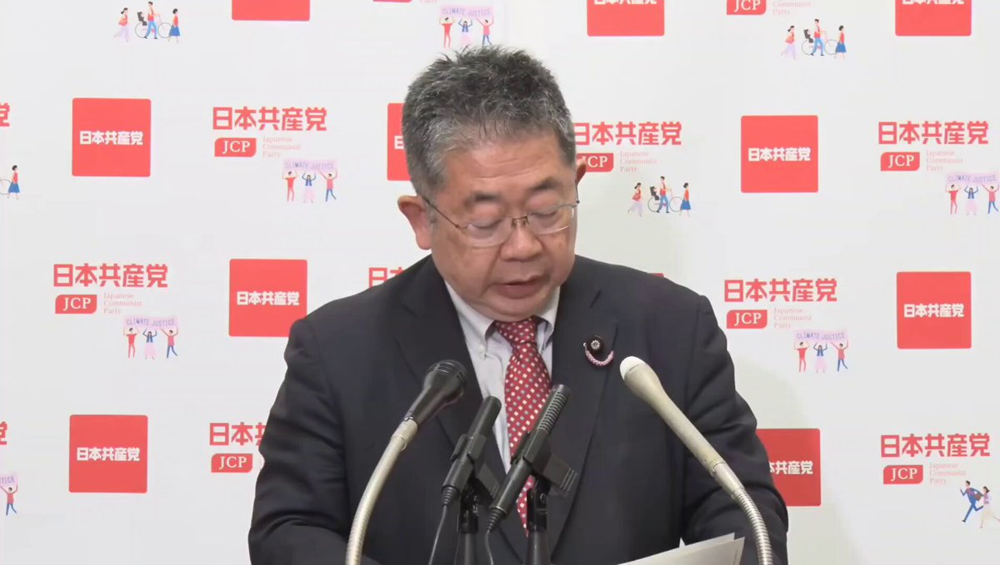
いるか@心が酒びたっているんださんがリポスト
本日の自民党の内閣第1部会とPTの合同会議で、国旗損壊罪の条文が了承されたとのこと。自己所有物も処罰対象となり、ネットでの公開にも制限がかかる表現規制としての性質が色濃い内容で、今後の国会審議が注目されます。
7日・8日と、この問題を考えるイベントを開催します。
関心のある方はぜひ。
うぐいすリボン /NPO Uguisu Ribbon
@jfsribbon
6月7日（日）・8日（月）は、国旗損壊罪についての、こちらの講演をぜひ！
シンポジウム「国旗損壊罪を考える」
講師：志田陽子さん（憲法学者）、松尾明弘さん（弁護士／前衆院議員）
6月7日（日）15時から
武蔵野商工会館 ゼロワンホール
https://
peatix.com/event/4960742/
view
…
AVITAMINOSEさんがリポスト
台風6号
この時の予報では今日の15時には945hPa、45m/sという非常に強い勢力になるはずだったが実況では975hPa30m/sと大幅に弱い勢力で速度もこの時の予報よりかなり早く進んで来た
台風専門ちゃんねる
@STY1330
台風6号
気象庁最新の情報
6月1日15時に北緯20度付近で一時非常に強い勢力になるとの予報が出てきた
その後やや衰えながらも強い勢力を維持しながら沖縄・奄美を北上していく予報
※ 気象庁のHPから出典し加工 x.com/STY1330/status…
Torishima / INTPさんがリポスト
ゆっくりMovieMaker v4.53.0.0 を公開しました
https://
manjubox.net/ymm4/release/4
.53.0.0/
…
主な変更点は以下の通りです
・「LUT適用」「エッジ発光」「影（立体投影）」「トライトーン」「分岐とチャンネル合成」「分岐とマップ合成」「余白除去」「コンテナ」「パペット変形」「縁取り（部分）」エフェクトを追加
Torishima / INTPさんがリポスト
超かぐや姫の終映を信じず、立川の山奥に立てこもりゲリラ戦を数十年繰り広げる超かぐや姫ファン。
Torishima / INTPさんがリポスト
湘南海岸で今、夜光虫で光る海というのが見られるらしく、どこかで仕事を移動させてでも見に行こうと思ってたんですが、これはもしかして台風で全部吹っ飛んでしまうやつなのでは...?
リジスさんがリポスト
金沢百万石まつり
吟子、加賀獅子舞「棒振り」に挑む！
#蓮ノ空美術部
Torishima / INTPさんがリポスト
ソフトウェアで自分が思いつくことは世の中の誰かがすでに思いついていることがほとんどなので、クロコさん（Claude Code）にしばしば「これこれこういう機能を実現するためにこれこれこういう実装を試みている人がいるはずだから探してみて」とお願いすることがあります。そして実際に見つかります。
なるせひろのりさんがリポスト
96歳のクリント・イーストウッド、「引退した」 息子カイルが近況明かす
https://
front-row.jp/_ct/116837/
渡辺浩弐さんがリポスト
.˚⊹⁺‧
『映画ちいかわ 人魚の島のひみつ』
キャラクター総出演！90秒予告映像解禁
ミッションは…セイレーンの討伐！？
島に隠された本当の“ひみつ”とは─
オープニングテーマ「くつずれ」
作詞：ナガノ
歌唱：ハチワレ(CV:田中誠人)
7月24日(金)公開
なるせひろのりさんがリポスト
ASUS、消費電力320Wの18型フラグシップゲーミングノート「ROG Strix SCAR 18」
https://
pc.watch.impress.co.jp/docs/news/even
t/2113520.html
…
Torishima / INTPさんがリポスト
これこの前話題になってた論文で書いてあったことそのままよな
こうしたAIへの代替（ギュ鳴らし）が進んでいくにつれ、労働者は購買力を失い、やがてモノが売れなくなる
AIによる効率化で無限にモノが売れるはずなのに、誰も買ってくれないから経済が終わっていく
knockout
@knockout_
つまりは、人件費とAIトークン費を同じ土俵で比較しますよってことか、おっかねえ。 x.com/mercari_inc/st…
【#LIVERTINEAGE 】
本日受注受付開始しました
トートバッグ
ポロシャツ
ZIPパーカー
前回とは違うものを作ろう〜と思いましてかっこよく！をテーマにデザインしました
完全受注生産となっております！
ぜひお揃いしてくださったら嬉しいです
https://
livertineage.jp/SHOP/189784/24
5631/list.html
…
西連寺亜希(さいれんじあき)
@renren_aki12
お知らせ
アパレルブランドLIVERTINEAGE(@livertineage )さんと
2回目のコラボが決定しました
完全受注生産で6月受注開始予定です
前回とは違ったものを作りたいと思いアイテムもデザインもこだわりました
受注開始とともにデザインも公開予定ですので、どうぞお楽しみに〜
#livertineage
Haruhiko Okumuraさんがリポスト
警察で散々言われたのが，マイナンバーカード内のチップが壊れていて中身が読めない場合は免許不携帯になる，ということ．まぁまず起こらないだろうということであまり気にしていないのだが，ところで制度設計としてそれはいいんだろうか．
貝さんさんさんがリポスト
【アニメーターさんの線の引き方調査】
TVアニメ『ONE PIECE』で作画監督などを担当している齋藤浩登さんに、線をどの様に引いているのか手元の動画を撮らせていただきました！
〜齋藤さんから一言〜
自然物を描く時、手の震えを利用して描くと上手くいきます。
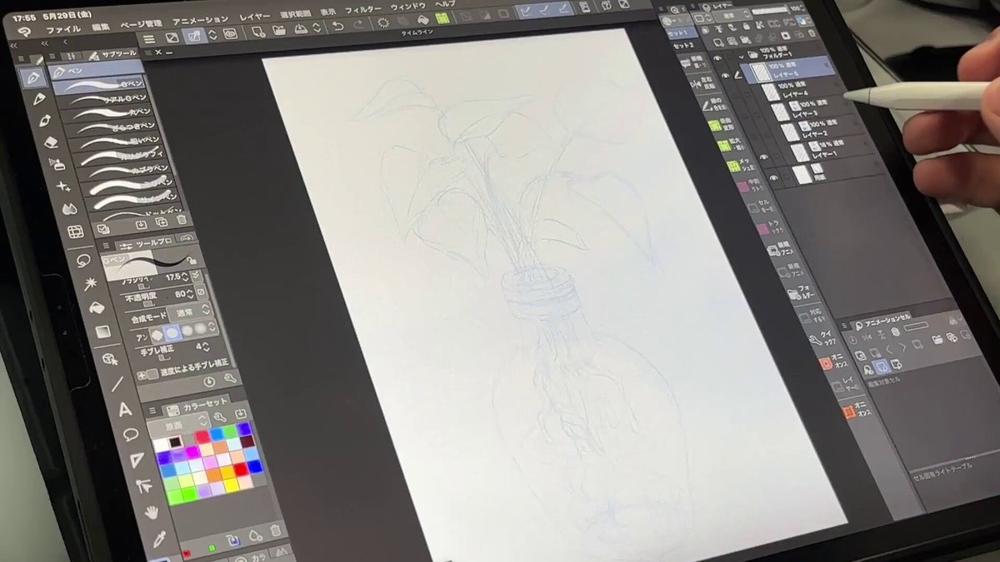
なるせひろのりさんがリポスト
›市の許可がなければ建築物が建てられない「市街化調整区域」にあたる
マジで市役所の人間何してた？
日本人がなんか建てると音速で飛んできて撤去しろ！ と喚き立てるくせに。
朝日新聞デジタル編成席
@asahicom
【異例】埼玉・川越にモスク 市は「無許可で都市計画法違反」と撤去求める
https://
asahi.com/articles/ASV5Y
34TGV5YOXIE03CM.html?ref=tw_asahicom
…
登記などによると、土地の名目は山林で、広さは約4500平方メートル。
市の許可がなければ建築物が建てられない「市街化調整区域」にあたる。
Torishima / INTPさんがリポスト
撮る側もぼちぼち頑張ったな
なるせひろのりさんがリポスト
【「笹正宗酒造」酒蔵などほぼ全焼】
「笹正宗酒造」酒蔵などほぼ全焼 - Yahoo!ニュース
なるせひろのりさんがリポスト
ASUS「ROG Xbox Ally X20」発表！ OLEDパネル＆TMRジョイスティックを搭載した特別モデル
https://
game.watch.impress.co.jp/docs/news/2113
515.html
…
Torishima / INTPさんがリポスト
ヤチヨだけ、浮いてたんだ…
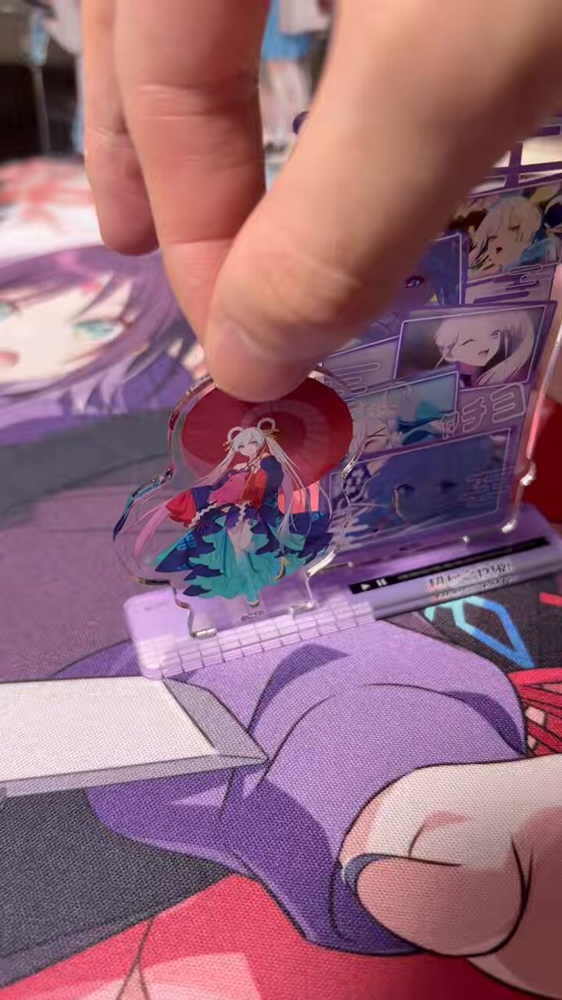
ステラノーツ株式会社
@Stella_Notes_
【商品不良のお詫びと良品補填に関するご案内】
日頃より弊社商品をご愛顧いただき誠にありがとうございます。
弊社より発売をさせて頂きました「超かぐや姫！ メモリーズアクリルマスコット 月見ヤチヨ」に関しまして、製造上の過程で不良が生じておりました。
Torishima / INTPさんがリポスト
Opus明らかに教科学習しすぎじゃないか？
日本語能力が高くてEQも高くて汲み取り能力が高いのがClaudeの個性だったのに、エージェントとしてプログラミング能力を教科学習しまくった結果だとは思うけどほんとに頭がかたいプログラマーみたいになっちゃった
Torishima / INTPさんがリポスト
まずほぼ全人類の手元にカメラがありますが、みんなが写真家になるかと言うと…？
sabakichi
@knshtyk
そうなのよな、国民総クリエーター時代とか来ない。昔なるほどと思ったのが、狩猟採集時代において集団生活を営む上で、創造性(クリエイティブニーズ)を担う特異形質を有する個体は群れの中では数%程度存在する状態が理想だから、現代でもクリエーターはそのくらいの比率で推移しているのではという話 x.com/sharp__6/statu…
日本経済新聞 電子版（日経電子版）さんがリポスト
［社説］新卒採用の早期化に歯止めを
［社説］新卒採用の早期化に歯止めを
貝さんさんさんがリポスト
ご報告です。
このたび株式会社Marcoへ転職し、新たなスタートを切ることになりました。
所属は撮影になります。
新しい環境にワクワクしつつ、少し緊張もしていますが一歩ずつ頑張っていきます。
新しい仲間と共にアニメ業界、作品に貢献できるよう努めてまいります！
AVITAMINOSEさんがリポスト
「JCB社員がインスタに社内資料を載せている」Xで画像拡散 同社「事実関係を調査中」
「JCB社員がインスタに社内資料を載せている」Xで画像拡散 同社「事実関係を調査中」
AVITAMINOSEさんがリポスト
すごいよ、膵がんの新しい治療法の発表されたことで、学会でスタンディングオーベーションがおきてる
それくらい、画期的なことです
どうやってもなかなか治療成績が上がらなかった膵がんに、ようやく人類が劇的な対抗手段を手に入れました！
Maurizio Scaltriti
@ScaltritiLab
20年間の学会で2回のスタンディングオベーションを目にしてきました。1回目は、私が開発に貢献した薬のためのもの。2回目は今です。
貝さんさんさんがリポスト
映画「ルパン三世 カリオストロの城」主題歌『炎のたからもの』を作詞いただいた作詞家の橋本淳さんが、5月21日 ご逝去されました。
ご生前のご功績に深く感謝するとともに、心からご冥福をお祈りいたします。ありがとうございました。
永瀬アンナさんがリポスト
…………
TVアニメ 氷の城壁
第9話「自覚」
気になるあのシーンやこのシーン④
“カエル”だった小雪の変化
Netflixにて第9話先行配信中
AVITAMINOSEさんがリポスト
膵がん治療にとんでもないブレイクスルーが発表されました！
従来の化学療法で効果がなかった患者さんに対して、ダラクソンラシブという分子標的薬を投与することで、生存期間を圧倒的に延ばすことに成功しました
1年後の生存率も53.3%vs18.8%と圧倒的な差です！
膵がん治療の大きな光明です
NEJM
@NEJM
#ASCO26で発表：
これまでに治療を受けた転移性膵管腺がん患者において、RAS(ON)阻害剤ダラクソンレシブは、化学療法と比較して全生存期間および無増悪生存期間を有意に長くしました。フェーズ3 RASolute 302試験の完全な結果：
https://
nej.md/4nWaxvM
@ASCO
Torishima / INTPさんがリポスト
抱き枕のお仕事は人生初でしたｗ
TVアニメ『上伊那ぼたん、酔へる姿は百合の花』
@kamiina_anime
/⋰
上伊那ぼたん、酔へる姿は百合の花
抱き枕カバーの発売が決定！
\⋱
新規描き下ろしイラストを公開
▼詳細はこちら
https://
movic.jp/shop/r/r1006ae
#上伊那ぼたん
Torishima / INTPさんがリポスト
Codexとかに「じゃあ何て指示すればお前はちゃんとやってくれる？」と聞いて、答えの通りにそのまま指示投げたら本当にちゃんとやってくれるの、全然納得いかないけど、とてもLLMって感じで大好き。
Torishima / INTPさんがリポスト
ベンチスコアが完全にハックされだして、もう公式発表のベンチスコアと実際の性能が無関係になりつつあるからベンチスコアすごい新モデル出ても全然食いつけなくなってきてる。もちろんチャットボットアリーナも全然アテにならない。すでに人間はAIにハックされてるから。なんかアテになる新たな指標が
西連寺亜希(さいれんじあき)さんがリポスト
日本ダービー行ってきましたーー
ロブチェンおめでとう
めっちゃ熱いレースでした！！！！！！！
競馬ハマりそうだ〜
一緒に行ってくれた西連寺亜希ちゃんと
リジスさんがリポスト
友達に今もらった写真、三重に虹のキッチンカーいた
大阪行くんやな…よろしくお願いします!
Torishima / INTPさんがリポスト
彼氏を健康に保とうとしています
なるせひろのりさんがリポスト
✦✦ザ・プライム・コレクション✦✦
映画『Michael／マイケル』
ポップコーンハット 販売決定
販売日時
6.5㊎劇場オープン時より«数量限定»販売開始
※«海老名»は6.12㊎、
«名古屋栄»は6.15㊊劇場オープン時より販売開始
※販売対象劇場はHPをご確認くださいませ
ご注意
AVITAMINOSEさんがリポスト
これで本当に自民党や法制局の了解が取れたのか？？
2条2項は極めて広範に表現の自由を規制してるし、罰則が適用されるかどうかも「総合勘案」で罪刑法定主義に反する。
私も国旗はしっかり守るべきとの立場だが、さすがにこれは立法論として荒過ぎる。憲法裁判所があれば間違いなく違憲立法でしょう。
Torishima / INTPさんがリポスト
ほくほく線の「絶対に雪を積もらせない高架橋」見てきました。レールを敷くのに必要最低限の華奢な構造。でもこの無骨さがかっこいい！
Torishima / INTPさんがリポスト
東京メトロってお知らせが配信される順番は開業の順番なんだね
なるせひろのりさんがリポスト
各キャストよりコメントも到着
三笠はこ CV #上坂すみれ
アニメ「ドッジ弾子」にて、三笠はこ役を演じさせていただきます！
はこは、あまりにも抜群なスタイルを誇る、強者のオーラただよう先輩キャラクターです！
TVアニメ「炎の闘球女 ドッジ弾子」公式
@dodge_danko
＼#ドッジ弾子 解禁／
玉川闘球部の新たな仲間に加え
弾子たちを待ち受ける新たな強敵たち
計6人の追加キャストを解禁
三笠はこ CV #上坂すみれ
火浦颯美 CV #中村カンナ
五十嵐柔里 CV #井口裕香
坂本龍華 CV #明坂聡美
ゾーイ CV #ファイルーズあい
御堂蘭 CV #伊瀬茉莉也 x.com/dodge_danko/st…
Torishima / INTPさんがリポスト
設計の大変さを知れる
あれ100円で売って本当に開発部は給料もらえてるのか不安になる
よしけい＠次はワンフェス
@yosikei1210
3Dプリンターがそうでした…
生活が変わるぞ！ダイソー無くなるかも！みたいな空気感が確かにあった x.com/sharp__6/statu…
日本経済新聞 電子版（日経電子版）さんがリポスト
大阪のマンション､賃料の伸び率世界一 職住近接が加速
大阪のマンション､賃料の伸び率世界一 職住近接が加速
なるせひろのりさんがリポスト
＼#ドッジ弾子 解禁／
玉川闘球部の新たな仲間に加え
弾子たちを待ち受ける新たな強敵たち
計6人の追加キャストを解禁
三笠はこ CV #上坂すみれ
火浦颯美 CV #中村カンナ
五十嵐柔里 CV #井口裕香
坂本龍華 CV #明坂聡美
ゾーイ CV #ファイルーズあい
御堂蘭 CV #伊瀬茉莉也
TVアニメ「炎の闘球女 ドッジ弾子」公式
@dodge_danko
＼#ドッジ弾子 解禁／
メインPVを公開しました
https://
youtu.be/IRbt0J3l5js
PV内ではOP&ED主題歌を同時楽曲解禁
#ももクロ オープニング主題歌
「会心の一劇」
#i_Ris エンディング主題歌
「Welcome to あざとさワールド」
日本経済新聞 電子版（日経電子版）さんがリポスト
キオクシアだけじゃない ＡＩ相場の構造変化、強まる「７万円」期待
キオクシアだけじゃない AI相場の構造変化、強まる「7万円」期待
Torishima / INTPさんがリポスト
LO原画集は個人で出版しちゃ駄目らしいのでかわりにポートフォリオとしての公開許諾を貰いました~
見てね~
(まとめて作るの大変だったので作品ごとで小出しにします~)
https://
drive.google.com/drive/folders/
1OfCyHf8x-F7hDObQLZA7Z9eywd2THR3k?usp=drive_link
…
やまだ
@oekaki_obasan
コロリド社員辞めました~₍₍(ง˘ω˘)ว⁾⁾
Torishima / INTPさんがリポスト
▽「卒業記念舞台挨拶」詳細はこちら
Netflix映画『超かぐや姫！』公式サイト
Torishima / INTPさんがリポスト
.˚⊹／
6月19日(金) 卒業記念舞台挨拶
登壇キャスト＆監督への質問を大募集
.˚⊹＼
募集期間
6月14日(日)23:59まで
応募方法
ハッシュタグ「#教えて超かぐや姫」
をつけてXでポスト
✧頂いた質問は、チネチッタの回で回答する可能性がございます。
ユウマボウズさんがリポスト
【リアルサイン会開催決定！】
ライドコミックス『ガールズバンドクライ1』発売を記念して伊勢海老ボイル先生リアルサイン会を開催いたします！
会場：書泉ブックタワー（秋葉原）
開催日：2026年7月12日(日)
サイン会抽選受付期間：2026年6月01日(月)18:00～6月14日(日)23:59
Torishima / INTPさんがリポスト
『超かぐや姫！』ついに終映へ。1週間限定から始まったロングラン上映は6月18日で最後
https://
news.denfaminicogamer.jp/news/260601c
「この一瞬を最高のパーティーにしよう」と始まったが、現在は「1週間限定上映“15週目”」に突入中。一方で残り約3週間というリミットが設けられた。もう帰らなきゃ…帰れなくなっちゃう…
なるせひろのりさんがリポスト
『ドッジ弾子』メインPV解禁でOPはももクロ
▼弾子のモデルは百田夏菜子で驚きのコメント
https://
oricon.co.jp/news/2458360/f
ull/?utm_source=Twitter&utm_medium=social&ref_cd=jstw001
…
■追加キャスト6人発表
三笠はこ：上坂すみれ
火浦颯美：中村カンナ
五十嵐柔里：井口裕香
坂本龍華：明坂聡美
ゾーイ：ファイルーズあい
御堂蘭：伊瀬茉莉也
AVITAMINOSEさんがリポスト
正直、「高級」を冠するなら5000円くらい取ってちゃんと美味いもんを出した方がいい
Impress Watch
@impress_watch
牛めしの松屋、百貨店に初の常設店を「松屋銀座」に 2千円の高級牛めし
https://
watch.impress.co.jp/docs/news/2113
342.html
…
日本経済新聞 電子版（日経電子版）さんがリポスト
国内初うつ病治療アプリ チャットで行動変化促す、薬以外の選択肢に
国内初うつ病治療アプリ チャットで行動変化促す、薬以外の選択肢に
ねくまさんがリポスト
（ゆ）写真集お渡し会開催します
やったーーーーーーーーーーー！！！
ぜひ一緒にチェキ撮りましょう！！！
どんなポーズにするか考えておいてくださいね
井口裕香 写真集『cappuccino』【公式】
@yukachi_pb
リアルイベント情報
￣￣V￣￣￣￣￣￣￣￣
井口裕香@yukachiofficial
写真集『cappuccino』 お渡し会
HMV&BOOKS 渋谷店様
𝟕/𝟏𝟐 𝟏𝟐:𝟎𝟎〜：
https://
x.gd/zgChw
𝟕/𝟏𝟖 𝟏𝟏:𝟎𝟎〜：
https://
x.gd/b160u
お申込開始は6/4(木)18:00から ˎˊ˗
日本経済新聞 電子版（日経電子版）さんがリポスト
カルビーの「かっぱえびせん」白黒包装に 都内スーパーで販売開始
カルビーの「かっぱえびせん」白黒包装に 都内スーパーで販売開始
Torishima / INTPさんがリポスト
ロボットがタオルを自動でたたみます．遠隔はなし
中村研ではロボットの模倣学習・VLA・その他基盤モデルの研究をしてますので，研究室配属や院進で興味がある人はお気軽にDMください

Haruhiko Okumuraさんがリポスト
チャッピーに課金する価値あるぞ
←課金前 課金後→
エターナル総書記さんがリポスト
あまりにも海外からの反応がすごい…
日本の出生率の悪さの理由とかを議論し始めてる…
なんかごめん
AVITAMINOSEさんがリポスト
【警報などの『レベル』の最重要ポイント】
大雨などで危険な場所にいる人は…
レベル４までに全員避難
レベル３で早めの避難
（高齢者の方など避難に時間のかかる方はこのタイミングで避難）
今日はこれだけでも覚えていってください！
日本経済新聞 電子版（日経電子版）さんがリポスト
キッコーマン、しょうゆ・つゆなど291品値上げ 9月から2〜22％
キッコーマン、しょうゆ・つゆなど291品値上げ 9月から2〜22%
Torishima / INTPさんがリポスト
AIだけの人、「見せ方」が良くねえよなと思う事は随分あって、それはマスピ顔そのままだったり投稿間隔が明らかに多いことだったり内容の吟味が足りないことであったりデザイン工程を挟んでいなかったりと色々なんだけど、伸びてる人はその辺でインスタントさを消せてるんだよな。
Torishima / INTPさんがリポスト
Codex、ClaudeCode、GitHubCopilotは企業向けには月額定額サブスクが消滅してってAPI叩くのに比べて何のアドも無い従量課金に移行してってるという話。まあ個人向けも同様の傾向すよね。「トークン溶かすほどえらい～」みたいなくだらん風潮がGPUを逼迫させてこのような結末を招いた
楽しかったコーディングエージェントサブスク時代の終わり
なるせひろのりさんがリポスト
台風が来るたびにこの2018年の台風21号の被害動画を思い出す
飛来物に対して人類はなんて無力なんだ..
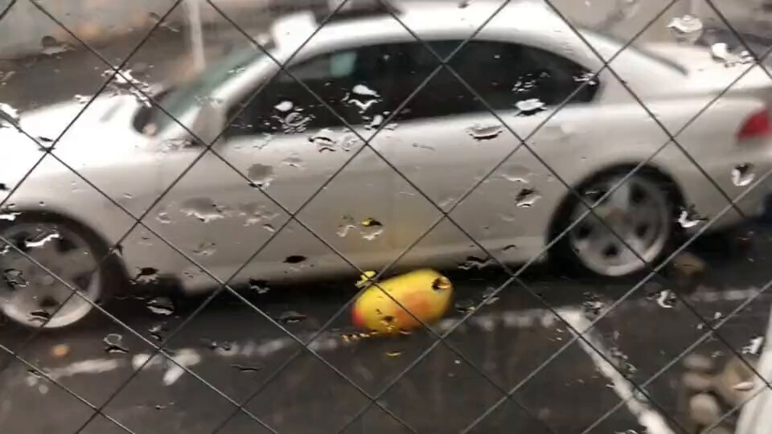
日本経済新聞 電子版（日経電子版）さんがリポスト
住信SBI、億ション向けの住宅ローン 買い替え時に一括返済
住信SBI、億ション向けの住宅ローン 買い替え時に一括返済
ベリー中山@メインはBlueskyさんがリポスト
#西連寺亜希 さんの直筆サイン入りステッカープレゼント企画実施！
応募方法は、
@LIVERTINEAGE
をフォロー＆こちらのツイートをRTのみ
抽選で2名様にプレゼントします
締め切りは7/13(月)まで
コラボアイテムはコチラから！
https://
livertineage.jp/SHOP/189784/24
5631/list.html
…
#LIVERTINEAGE #西連寺亜希 #LTA #プレゼント
Torishima / INTPさんがリポスト
アニメディア7月号の表紙を公開！
┈┈┈┈┈┈┈
表紙＆巻頭大特集
超かぐや姫！
Wカバー＆特集
刀剣乱舞ONLINE
┈┈┈┈┈┈┈
今月は創刊45周年記念号
6月10日（水）発売です
#超かぐや姫 #CosmicPrincessKaguya
#刀剣乱舞 #とうらぶ
Torishima / INTPさんがリポスト
「自分で作れることが第一であって交流に使いたい訳ではない」みたいなローカル勢とかずっとこんな感じだよね。ぼくが「自己実現派」みたいに呼んでるやつ。
Torishima / INTPさんがリポスト
「インスタント性」が良くないからな、みたいなやつ（インスタント性が低いAI絵はAI絵でも万フォロー万バズしますからね）
Torishima / INTPさんがリポスト
手間がかかってないAI利用は俎上にあがれない。コミュニケーションのためのコストを払ってるかどうかを見るから。
Torishima / INTPさんがリポスト
RTX Sparkの問題は価格だよね。すべてがトークン換算の経済で回る世界に突入しているわけで、ローカル動作するマシンもまた取得価格+消費電力の電気代が上乗せされても価値があるのかどうかが問われている。Mac Studioだってほとんど在野の研究目的か企業での特殊な利用用途でしかペイしないわけで
PC Watch
@pc_watch
RTX Spark搭載ノート「Surface Laptop Ultra」見参！120BのLLMも動作
https://
pc.watch.impress.co.jp/docs/news/2113
383.html
…
Torishima / INTPさんがリポスト
「絵だけが手間のかかるものを見るだけで消費できるのでコミュニケーションに使いやすい」みたいな話なんだと思う。文字が特段使いにくいんじゃなく絵が使いやすすぎる（音楽も映像もコミュニケーションには使いにくいよ）
Torishima / INTPさんがリポスト
.
@GOROman
さんや私は自宅に OCN エコノミー （3万8千円/月）を引いて、自作サーバを立ち上げていた。本気度というか、人に先駆けて何かをやることが面白い。
Keisuke Nishitani
@Keisuke69
これな。僕も同じようなことしてた。ネットワークの勉強するためだけにCiscoのルータやらスイッチも持ってた（中古だけど）。それなり以上の人たちってみんなそうな気がしてる。今だともっと安くもっと色々できるはず。結局本気度の違いな気がしてるがどうなんだろうか x.com/kenn/status/20…
AVITAMINOSEさんがリポスト
訪タイ外国人、5月は約235万人で前年比プラスに。日本人は69,620人でほぼ横ばい。
https://
asiatravelnote.com/2026/06/01/tha
iland_international_tourists_statistics_may_2026.php
…
国籍別トップ10は以下の通り。韓国人が大幅に減っているのはなぜなのでしょう？
1. マレーシア 468,973人
2. 中国 411,308人
3. インド 224,490人
4. ロシア 83,182人
5. シンガポール
訪タイ外国人、5月は約235万人で前年比プラスに 日本人は69620人 | アジアトラベルノート
ろじぱら ワタナベさんがリポスト
AVITAMINOSEさんがリポスト
東京都、薬務課SNSアカウントは「公式」
マンジャロ不正転売に“警告”続け話題
https://
oricon.co.jp/news/2457897/f
ull/?utm_source=Twitter&utm_medium=social&ref_cd=jstw003
…
⠀
都薬務課は、糖尿病の治療薬「マンジャロ」をダイエット目的で販売する投稿などに警告リプライを送る「東京都庁薬務課」のXアカウントは「公式」であると明言した。職員が直接行っていて､
AVITAMINOSEさんがリポスト
”言いにくいこともあえて口にすることこそがリーダーシップだ。この週末、それを示したのは日本だった”と小泉防衛相を評するコラム。
一方のヘグセス国防長官には、米中関係を損ねないための配慮があり、アジアでどこまで安全保障上の後ろ盾になるつもりなのかが見えなかったと。
米国の対中配慮際立つ、日本がアジアの主役に－シャングリラ会合で見えたリーダーシップ
輿水畏子さんがリポスト
優しさの中で幸せな子どもたち
#まのさば二次創作
#まのさばネタバレ
Torishima / INTPさんがリポスト
じゅ…純利益250億ってマジか東映…
Branc（ブラン）
@BRANCJP
東映アニメーション2026年3月期決算：純利益250億7,000万円で過去最高。ヒット反動減を“海外版権”が吸収
https://
branc.jp/article/2026/0
6/01/2765.html?utm_source=twitter&utm_medium=social&utm_content=tweet
…
貝さんさんさんがリポスト
メカを…メカの仕事をお願いします‼︎
クリーチャーでも可！
森木靖泰
@c10NMvp84p79130
#鮎の日
アニメ「鬼平」の時に描いた「鮎の塩焼き」。
原画のコピーにコピックで着彩したカラーリングサンプル。
料理作監への道(？)はここから始まってしまったんだなぁ…
まさかここまで料理作監の需要があるとは、夢にも思いませんでした…
Torishima / INTPさんがリポスト
そういえば漫画は右から左に読むから右が過去で左が未来なのだな。通常のレイアウトとは逆でおもしろい。漫画の読む方向は日本語の書き方向が由来だと思うから、未来を指す方向が文字の記述の方向で規定される説はこのあたりでも補強されるわけだ。我々はどちらも使いこなせるわけで意外と柔軟なのかも
宇城はやひろ
@hayhironau
あとは、こういうコマの中の時間は右から左に流れるので、主語にあたるキャラを右側に配置すると読みやすいとか教わった。
おまけ：漫画は読むテンポが大事なんだけどあまりにスラスラ読めると逆に物足りないので、キャラの向きを急に変えたりしてテンポを崩せという感じ。
ポン☆潤々さんがリポスト
／
#イオンシネマ八王子滝山 6/26(金)オープン記念
Xフォロー＆リポストキャンペーン開催
＼
抽選で30名さまに
無料鑑賞券プレゼント
イオンシネマ八王子滝山 の
劇場Xアカウント
@achachioji
をフォロー
こちらの投稿をリポスト
応募完了
〆切7/31(金)まで
#イオンシネマ
Torishima / INTPさんがリポスト
なんか貼れと言われた気がして。
国交省資料より抜粋。
https://
mlit.go.jp/common/0011709
42.pdf
…
Torishima / INTPさんがリポスト
社会の在り方がそれを規定するのか、遺伝的形質により人類が統計的割合で創造性に特化した個体を生み出すように進化しているのかはわからないが、学校のクラスで創作している人は数名程度、という度合いは共通理解であるし、国勢調査でも就労者数は一定値で推移しているから何らかの機序が隠れてはいる
Torishima / INTPさんがリポスト
みんな育ててるAIエージェントのガワは何使ってるんだろう
ちなみに私のはCodexです
Torishima / INTPさんがリポスト
そういえば最近のCodex、こういう環境壊す系のミス全く起きなくなった気がする……
Taitai2661,
@taitai2661dayo
ぶっ⚪︎すぞ
Torishima / INTPさんがリポスト
文化人類学系の本で読んだ裏付けのない単なる仮説なのだけど、破壊的創造性は集団の中ではむしろ乱雑さを生み安定を損ねるから一定量以上は不要だが、一方で困難な問題解決のためのイノベーションは必要でそれを担う"異常"な人が集団には不可欠で、それがクリエーターなのではという話は納得感があった
AVITAMINOSEさんがリポスト
6月1日今朝の陸別町の最低気温は3.3℃で日本一でした。気温はぐんぐん上がり、最高気温は、３１℃を超えました。日較差は、いまのところ27.7℃です。
#北海道
#陸別
#気温
#日較差
Torishima / INTPさんがリポスト
そうなのよな、国民総クリエーター時代とか来ない。昔なるほどと思ったのが、狩猟採集時代において集団生活を営む上で、創造性(クリエイティブニーズ)を担う特異形質を有する個体は群れの中では数%程度存在する状態が理想だから、現代でもクリエーターはそのくらいの比率で推移しているのではという話
#6@『永久パピルス』
@sharp__6
絶対、ぜっっっったいにAIがどんなに普及しようが一般ユーザーが自分で作品を作る未来は来ない。
これは私自身が昔やったミスでもあるんだけど、一般人の創作意欲を過大に見過ぎてる。 x.com/burata_tantan/…
貝さんさんさんがリポスト
#鮎の日
アニメ「鬼平」の時に描いた「鮎の塩焼き」。
原画のコピーにコピックで着彩したカラーリングサンプル。
料理作監への道(？)はここから始まってしまったんだなぁ…
まさかここまで料理作監の需要があるとは、夢にも思いませんでした…
AVITAMINOSEさんがリポスト
新米目前になって業者が損切りはじめたか
来年は米大暴落しそうね
AVITAMINOSEさんがリポスト
もし明日東名阪間の夜行バスが走ったら乗客の皆さんは以下のものをご持参ください
・飲料水（最低24時間分）
・保存の利く食べ物（臭い×）
・携帯トイレ（トイレ付きバスでも40回ぐらい使ったら使用不能になる）
・大きな心（何十時間かかっても運転手にキレない）
各位よろしくお願いいたします
Torishima / INTPさんがリポスト
Claude Code、Opus 4.8微妙すぎて4.6に戻してるユーザーをけっこう観測してる。言語や思考まわりの性能下がってる以外にも、バグとハルシネーションがヤバそう。海外での評判もかなり微妙。Anthropicがなんでこんなバージョン出すことになったのかスゲぇ気になる。正直に発表して
由羽@レモンアイコンの人さんがリポスト
「金ファブ夏コミ出展決定！！」
どういうことだろう？……ん!!⁇
AVITAMINOSEさんがリポスト
エチオピア総選挙、与党が優勢 － 反政府勢力側で投票見送り
エチオピア総選挙、与党が優勢 反政府勢力側で投票見送り | NEWSjp
Benさんがリポスト
発売記念キャンペーン
アクリルマルチスタンドをプレゼント!!
応募方法
フォロー＆このポストをRP
締切 6/15(金) 23:59
美少女を育てる配信ラブコメ
『クラスメイトをプロデュースして、世界一かわいい人気VTuberに育て上げるまで 1』
HJ文庫より好評発売中！
https://
firecross.jp/hjbunko/series
/619
…
AVITAMINOSEさんがリポスト
牛めしの松屋、百貨店に初の常設店を「松屋銀座」に 2千円の高級牛めし
https://
watch.impress.co.jp/docs/news/2113
342.html
…
AVITAMINOSEさんがリポスト
北朝鮮刊行の地図、竹島記載せず － 25年版、領有権主張を放棄か
【北京共同】北朝鮮が昨年刊行した自国の領土を示す地図や書籍に、島根県の竹島（韓国、北朝鮮名・独島）を...
news.jp
輿水畏子さんがリポスト
: 花里みのり アクリルスタンドください
: 面倒かと思いますが、リセル防止のためにキャラクターのセリフを一つ言っていただけますか？
:
Torishima / INTPさんがリポスト
> 教育機関でありながら生徒より学校の実績づくりや親会社の赤字を埋める事が優先されている
専門学校の悪口はやめてください
マスクド・アナライズ 本「会社で使えるChatGPT」好評発売中
@maskedanl
文春砲を食らったN高等学校。
教育機関でありながら、生徒より学校の実績づくりや親会社の赤字を埋める事が優先されているとのこと。
ところで、4月に同じ内容が内部告発のnoteでバラされており、退職時期の一致からコレを書いた人が文春にタレコミしたっぽい。
https://
note.com/holy_nerine979
3/n/n591340e415e5
…
Torishima / INTPさんがリポスト
一次創作、冷静に考えて「ない作品」の話を延々としてるのヤバすぎる
先人は全員正気を失っているとしか考えられない
Torishima / INTPさんがリポスト
速報：NVIDIAとSharpaがGTC TaipeiでNVIDIA Isaac GR00Tリファレンスヒューマノイドロボットを発表しました—物理AI研究のための標準化されたオープンなハードウェアおよびソフトウェアリファレンスデザインです。
Torishima / INTPさんがリポスト
しかしAIコンパニオンのチャネルという観点でスタックチャンはすごいな。PCデスクトップマスコットとかLINEとかアプリとかスマートスピーカーとかいろいろやってきたけど、スタックチャンは常用のインターフェイスとして過去最高にいい。いて欲しいし話しかけたい触れ合いたいし役に立つ
日本経済新聞 電子版（日経電子版）さんがリポスト
NVIDIAがAIパソコン向け半導体 「Windows」で高性能モデル操作
NVIDIAがAIパソコン向け半導体 「Windows」で高性能モデル操作
AVITAMINOSEさんがリポスト
【台風6号】強風にあおられ、沖縄市のミュージックタウン音市場の正面にある、シンボルツリーのガジュマルが倒れてしまいました。
#台風６号 #チャンミー #沖縄
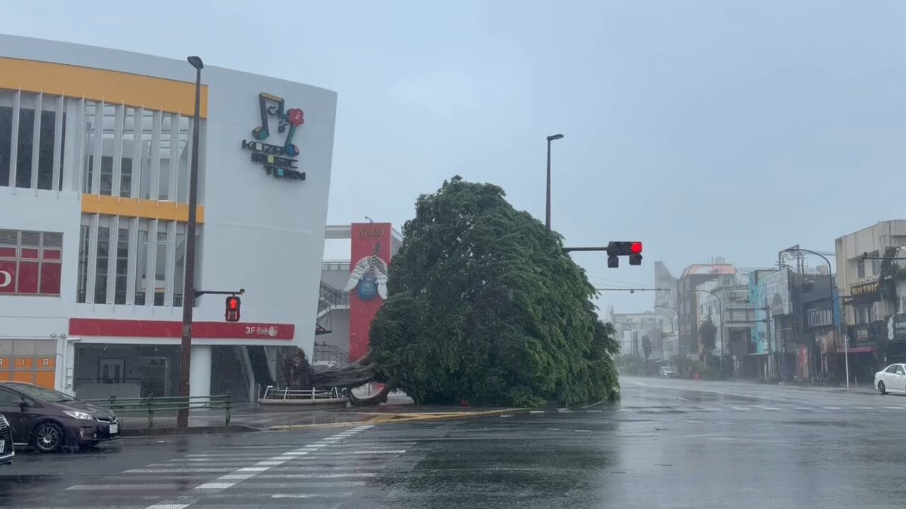
Torishima / INTPさんがリポスト
Mythos以降のAnthropicのモデル（Opus4.7、4.8）の評価が微妙なのは、Mythos公開の練習用（サイバーセキュリティ・脆弱性発見能力を抑える）にやっている事後学習・アライメントが失敗しているからだと思います。
ある意味典型的なAlignment
AVITAMINOSEさんがリポスト
在日イラン人ら大使館前で集会…デモ参加者の処刑に怒り「自由に声を上げられぬ友のため」
https://
sankei.com/article/202606
01-PRZAZOOUFFH4HNSWRBCVXP2QWU/
…
反体制デモが鎮圧された母国で、自由を求める声は上げられず、日本など海外で活動せざるを得ない状況があるという。
在日イラン人ら大使館前で集会…デモ参加者の処刑に怒り「自由に声を上げられぬ友のため」
Torishima / INTPさんがリポスト
RTX Spark搭載ノート「Surface Laptop Ultra」見参！120BのLLMも動作
https://
pc.watch.impress.co.jp/docs/news/2113
383.html
…
なるせひろのりさんがリポスト
【社説】中国がCO2排出データを「粉飾」
【社説】中国がCO2排出データを「粉飾」
Torishima / INTPさんがリポスト
Anthropicは時価総額やMythosの話題ではイケイケ状態に見えるんですが、実はMythosリリース以降、ユーザーが使えるものではClaude Opus4.7以降、ずっとやらかしっぱなしで、性能も上がっているのか下がっているのかよくわからない、あと突然壊れるという意味不明な状況。
AVITAMINOSEさんがリポスト
本当にそう思う。日本共産党はソ連共産党も中国共産党も非難してきた。決して「左派と左派はお友達」なんて軽い考えではなかった。ウクライナに侵攻したロシアも非難した。
ところがNATOと日本がウクライナ支援をしようとすると「アメリカ側の戦争」への反感が先に立ってしまう。
常岡浩介国際的な法秩序を破壊
@shamilsh
その通り。ソ連の暴虐も厳しく非難してきた。
ところが、なぜかしばしばプーチンを擁護するんですよ。
役割を終えたんじゃないかな？ x.com/omae_osamu/sta…
とりしま (Sub I/O)さんがリポスト
ジャニオタの身内を持つ者より連絡なのですが、嵐のライブDVDやBru-rayをパソコンで見ようと思っている方
外付けBlu-rayドライブが今月末で販売終了になるので早めに買っておいた方がいいです マジで
エレコム(公式)
@elecom_pr
外付けBlu-rayドライブ、弊社も2026年6月30日をもって販売終了となります。
※在庫状況により、時期が前後しますのでご了承ください。
弊社外付けBlu-rayドライブ販売終了のお知らせ
https://
elecom.co.jp/news/important
/20260317-01/
…
Torishima / INTPさんがリポスト
表向き性格が良い(八方美人)みたいなの実は裏垢があるケースを割と見てきたので 性格が多少悪くて文句言ってるくらいの人の方が個人的には信用できるけどなwww
MICHEE-N（ミッチー・Ｎ）さんがリポスト
【上伊那ぼたん 酔へる姿は百合の花】
ご縁があり撮影協力させて頂きました！第８話に蒲田カフェ登場
終売しているものもありますが、実際に提供している商品も作中に登場！
店内の照明やイス、テーブルや外観まですごく丁寧に再現して下さいました
ありがとうございました
#上伊那ぼたん
Torishima / INTPさんがリポスト
Opusは4.7、4.8よりも4.6と話してる方が自分にはあってるみたい。あとClaudecodeは以前より面倒だと思うとそれを避ける傾向が強くなってる？
作業してもらって「うまく動かないよ？」って話すと「chromeじゃなくてSafariでつかってください」という解決にならない話を最初にしてきたりする。
AVITAMINOSEさんがリポスト
DRAM不足で、DELLがXPSブランドでWindows 8GBモデルを出してドヤる事になるのは想像してなかった
PC Watch
@pc_watch
599ドルのMacBook Neoキラー「XPS 13」がDellから登場！1kgで高スペック
https://
pc.watch.impress.co.jp/docs/news/even
t/2113104.html
…
お知らせ
今週末6月7日(日)21:00〜
#Replive 配信します
配信中はカードに回答します
（カードの募集は6/6まで！）
アプリをダウンロードいただければみなさんご覧いただけます！
お気軽にどうぞ〜！！
https://
replive.com/cardbox?userID
=0a5c6b5b-799a-4611-8d2a-00a67a2ce646
…
#Replive #リプライブ
Torishima / INTPさんがリポスト
無職活動をしてみてわかったことは結構な体力と気力とお金が必要なので、一般人の皆さんは就職したり、働いてた方がいいということです。
null-sensei
@GOROman
無職活動をしてみてわかったことは結構な体力と気力とお金が必要なので、一般人の皆さんは就職したり、働いてた方がいいということです。
Torishima / INTPさんがリポスト
僕からはあまり細かいこと書かないようにと釘を刺されてるんですが、「半年経ったら半年分進んでいた」という点について少しだけ掘り下げておきます。
森山和道／ライター、書評屋
@kmoriyama
中国ロボット事情視察ツアー・第２弾「深圳編」に参加しました（報告）｜森山和道 ライター、書評屋 @kmoriyama
https://
note.com/kmoriyama/n/n8
25319e0ebf5?sub_rt=share_pb
…
Torishima / INTPさんがリポスト
無職とニートは似て非なるもの…
null-sensei
@GOROman
無職活動をしてみてわかったことは結構な体力と気力とお金が必要なので、一般人の皆さんは就職したり、働いてた方がいいということです。
AVITAMINOSEさんがリポスト
AVITAMINOSEさんがリポスト
「魚介類の飼料転換率高すぎ」
これ、私も引っかかったんだけど、「乾燥飼料の重さ」と「肉の重さ(水分含む)」を比べてるそう。
瘴気領域@『最強無敵のお嬢様、魔剣の執事とポストアポカリプスを往く』好評連載中！
@wantan_tabetai
魚介類の飼料転換率高すぎ問題。とくにサーモン。ほぼ食べた分だけ大きくなるってどういうことなの……？ x.com/juns76/status/…
Torishima / INTPさんがリポスト
子供「微積分なんて役に立たないよ」
AIオタクぼく「Diffusionモデルでは各ステップの傾きを微分で求めれば、NNよりも軽量な計算で中間テンソルの代替値を算出でき、推論を高速化できるんですよ」
実験の結果、単純な線形外挿のほうが好成績だと気づいたぼく「微積分なんて役に立たないよ」
Torishima / INTPさんがリポスト
claudecode/codex ですぐ利用制限が来てキツいな、という人は Cursor Pro ($20) を契約して composer 2.5 (normal) を使うといいです。本当に10倍くらいは使えます。
Torishima / INTPさんがリポスト
トヨタからソフトバンクGに日本の時価総額1位が移ったので、「日本はものづくり、製造業の国」ではなく「日本は最新AI産業の国」になってしまった。
このネタはともかく、自国内に今の生成AI開発の開発過程に組み込まれるAI・半導体企業を持つ国は全部そうなると思っています。
AVITAMINOSEさんがリポスト
「バスのみの通学は楽だった。鉄道は乗車時間が短く、荷物が多くても広くて乗りやすい利点があるが、どちらに乗るかと問われると私はバスを選ぶ」
最も乗車機会が多いであろう学生さんにこう言われてしまっては…
岡山県新見市などで路線バス実証スタート JR芸備線存廃巡り経済効果を試算（山陽新聞デジタル） - Yahoo!ニュース
Torishima / INTPさんがリポスト
オタクがあれだけ「超かぐや姫！の次は……トラペジウムを見てください！」って言ってたのに、Netflixは頑としてトラペジウムを配信してくれない。
映画『トラペジウム』公式
@trapezium_movie
⋰
下記プラットフォームにて配信決定！
本日から配信スタート
⋱
◆配信先：
PrimeVideo、dアニメストア、dアニメストア ニコニコ支店、dアニメストア For Prime Video、U-NEXT、アニメ放題、DMM TV、Lemino、Hulu、FOD、ビデオマーケット、music. jp、カンテレドーガ、バンダイチャンネル
AVITAMINOSEさんがリポスト
『ラグナロク』世界観がベースの新作RPG『RAGNAROK PROJECT』発表。2027年にNintendo Switch 2、PS、Xbox、PC向けに発売へ
https://
news.denfaminicogamer.jp/news/260601w
ナイトやウィザード、プリーストやハンターなど多彩なキャラ・クラスの仲間と崩壊しつつある世界を旅する。それぞれの信念と選択がぶつかる物語が展開
Torishima / INTPさんがリポスト
これも創意と技能の分離だな。そしてお任せ創意はおもしろくないとこに収束しちゃうから、無限に希釈されてくる技能にどんだけ創意導入できるか勝負に。
ただ、早く創意も扱ってくれよという想いはどんどん募る。
IT navi
@itnavi2022
クリエイターが効率化のためにAIを利用する傾向は、今後ますます強まっていくだろう。
それに伴い、「本当に創造的な行為」と認識される範囲は徐々に絞られ、より本質的でコアな部分に集中していくことになる。 x.com/the_river_jp/s…
Torishima / INTPさんがリポスト
学生時代に山岳部でワンダーフォーゲル部でマウンテンバイクやってたのでそこそこMax HPはあるはず
null-sensei
@GOROman
無職活動をしてみてわかったことは結構な体力と気力とお金が必要なので、一般人の皆さんは就職したり、働いてた方がいいということです。
Torishima / INTPさんがリポスト
これやってくれるけど、その代わり文字間・行間に含まれる要求の空間をどう切るかはAI任せになる。
もちろん、そこから「ここはこうじゃなくてー」とやりとりしてもいい。
でも最初から狙いを定めるなら、要求や設計は必要だと思いますよ。
Rootport
@rootport
世間では「Codexくん、〇〇作って」って丸投げするのがもはや当たり前なのか…
要件定義書を渡して、仕様書を書かせて、仕様書の細部を議論しながら煮詰めて、具体的な実装案まで落とし込んで、それからコーディングに進んでもらう……という俺のやり方は、わずか半年で時代遅れに…？
滝沢ガレソさんがリポスト
今日はライブなかったん？
AVITAMINOSEさんがリポスト
【本日より】Steam Deck OLEDが再び値上げ。512GB/1TBモデルともに約5万円アップ
https://
famitsu.com/article/202606
/76568
…
512GBモデル：99800円→137980円
1TBモデル：114800円→167980円
先行して値上げが発表されていた海外向けには、メモリとストレージのコスト上昇にともなう価格改定と説明されていた。
AVITAMINOSEさんがリポスト
宝永火口での落石の様子 本日午前9時頃
Torishima / INTPさんがリポスト
あとはグローバルでAmazonだけ過剰包装を批判されるという社会的なムーブメントが起こってしまって、きちんと包装して配送してるのに企業価値が下がるという矛盾を抱えてしまっているので(異常な包装は実際あったが)、背景を踏まえると今後包装が安全マージン確保した状態寄りになることはない気もする
トウカイのクマさんがリポスト
掲出のお知らせ
学園アイドルマスター The 2nd Period
Hatsuboshi IDOL FESTIVAL
への出場を記念して、花海咲季さんの応援広告を掲出いたしました！
6/1(月) ~ 6/7(日)
JR 横浜駅
詳細は画像とツリーをご確認ください
#学マス応援広告
#花海咲季
Torishima / INTPさんがリポスト
Amazonは販売と流通を一体で捉えていて、全体で省略される包装のコストよりも乱雑な配送で商品が破損した場合の補償の方が総コストが低いという統計の結果、現在の袋にポイ本グシャ配送に到達しているのだと思うが、破損しているまではいかない商品の"傷み"を数値化できていない弱さはあるよなと思う
Torishima / INTPさんがリポスト
つまりは、人件費とAIトークン費を同じ土俵で比較しますよってことか、おっかねえ。
株式会社メルカリ
@mercari_inc
メルカリは、執行役員 CTO Japan Businessの木村俊也が2026年6月1日付で最高人事責任者（CHRO：Chief Human Resources Officer）および最高AI責任者（CAIO：Chief AI Officer）に就任することをお知らせいたします。
木村は、CHRO 兼 CAIO 兼 CTO Japan Businessとして新たに掲げるビジョン「HR for
Torishima / INTPさんがリポスト
早くも中国のオープンモデルのMiniMaxがGPT-5.5、Claudeに迫るスコア（部分的には超えている）になってしまっており、つい最近の「中国はアメリカの先端ラボの4ヶ月遅れ」説が縮まりそうな状況。
マルチモーダル、100万のコンテキスト、十分なコーディング能力、あとはパラメータ数がどの程度か。
MiniMax (official)
@MiniMax_AI
MiniMax M3の紹介：3つの最先端機能を組み合わせた初のオープンウェイトモデル
- コーディング＆エージェント最先端：59.0% SWE-Bench Pro、66.0% Terminal Bench 2.1、34.8% SWE-fficiency、28.8% KernelBench Hard、74.2% MCP Atlas
- MiniMax Sparse Attentionがコンテキストを1Mにスケール
-
Torishima / INTPさんがリポスト
例えば金沢行って突然、能登の羽咋の民宿に泊めてもらって急に呼ばれたので新幹線乗って日比谷音楽祭の飲み会に行くとか そういうハードさです
null-sensei
@GOROman
無職活動をしてみてわかったことは結構な体力と気力とお金が必要なので、一般人の皆さんは就職したり、働いてた方がいいということです。
Torishima / INTPさんがリポスト
配送工程をシステムとして合理化してコスト低く安全に運べる方法を社会実装したのはAmazonがはじめた物語だったけど、みんなそれをこぞって真似して各社が安全にシュリンクで運ばれるようになった時代が到来した途端、オリジナルのAmazonがさらにコスト削減と合理化を進めた結果袋にポイになったのよな
史都玲沙@6/7コミティア156東3 ね-53b
@reisa_shito
アマゾンの本の配送状態が酷くて(封筒の中にそのままポイ。帯はグシャグシャ、表紙に爪で抉った様な傷が複数)アマゾンで本を注文する事をやめた。で、アニメイト通販使ったんだけど。…最初はアマゾンもこんな感じで本が傷つかないようにシュリンクして、箱の中で動かないように留めてくれてたよね。
AVITAMINOSEさんがリポスト
韓国即席麺の輸出が過去最高 日本発祥も辛さが「新たな体験」 辛ラーメン発売から40年
https://
sankei.com/article/202606
01-Y3MV4X7A4FLCXDEIHAS7UB56TE/
…
韓国関税庁によると、25年の輸出額は過去最高の約2300億円を記録。昨年は、英オックスフォード辞典に日本の即席麺「ramen」とは別に、韓国ラーメンが「ramyeon」として新たに掲載された
韓国即席麺の輸出が過去最高 日本発祥も辛さが「新たな体験」 辛ラーメン発売から40年
Torishima / INTPさんがリポスト
無職活動をしてみてわかったことは結構な体力と気力とお金が必要なので、一般人の皆さんは就職したり、働いてた方がいいということです。
Torishima / INTPさんがリポスト
むしろ3Dプリンタを使うことで、100均の凄さや、一般流通品の設計デザインの凄さを再認識した。
よしけい＠次はワンフェス
@yosikei1210
3Dプリンターがそうでした…
生活が変わるぞ！ダイソー無くなるかも！みたいな空気感が確かにあった x.com/sharp__6/statu…
AVITAMINOSEさんがリポスト
出荷先のスーパーに行ったら警告文が…
「ついに怒られるのか…」と
恐る恐る読んでみたら
『SNSのバズりの影響で問い合わせが多発して、従業員が対応しきれません！』とのこと。
「大変申し訳ございません…」と思いきや、
最後の1文。
『決して控えてくれという訳ではなく、
AVITAMINOSEさんがリポスト
「ガラパゴス化」「世界標準から外れる」ってなんかネガティヴな言い方に聞こえるけど
裏を返せば海外コンテンツが霞むほど国内コンテンツが強い国ってことなので、普通にポジティブな話題だよね
マシュマロの日
@DayofMarshmallo
洋画はハリウッドだけではありません。A24などのインディペンデントに目を向ければ宝の山です。しかし世界で話題になった洋画を持ってきても日本の観客は見ません。その原因は単に洋画がつまらないからではなく、日本の映画市場がガラパゴス化していることにあると思います。例えば『プロジェクト・→ x.com/bonkuratv/stat…
由羽@レモンアイコンの人さんがリポスト
は？？なんで？ジェットスター潰れるの？日本撤退？なんで？？？
うみゆき@AI研究さんがリポスト
:o
池袋は大阪と違ってすげーなｗｗ
うみゆき@AI研究さんがリポスト
「キオクシアの売上予想が10兆929億になったんだって？」
「営業利益？！」
さすらいのキオクシアマン
@kioxiaman
ゴールドマンサックス
キオクシアの29年３月期の連結営業利益を10兆929億円と予想。
AVITAMINOSEさんがリポスト
これは６月７日、日曜日の予報である。
決して今日の予報ではない...(´・ω・
なるせひろのりさんがリポスト
【速報】
22歳の未来ある女性の命を奪っておいて、堂々と無罪を主張する女の事件がマジで胸糞悪すぎる。全員に知ってほしい。
5年前に遡る
① 車で暴走し、アルバイトに向かう途中の22歳女性を死亡させた。
②
Torishima / INTPさんがリポスト
これはそう。今の、AIエージェントと一緒に並列フル稼働する8時間労働は、脳疲労が異常。
昭和のビジネスマンなんて、大人数で何時間も会議したり、何度も喫煙室に行ったり、数字を計算したり資料を作るのに何時間もかけたり、印刷に何十分もかけたり、移動に何時間もかけたりしながらの長時間だし。
凜律思考
@RITUx6qb
昔の8時間労働と今の8時間労働を同一視するな。
AIエージェントに指示を出し、出力をレビューし、人間を動かし、コードを書き、設計をする。 現代のエンジニアに求められているのは、もはや「エンジニアリング」という職種を超えた「脳の酷使」。 x.com/mhl_bluewind/s…
AVITAMINOSEさんがリポスト
【観光客が殺到 江ノ電のジレンマ】
観光客が殺到 江ノ電のジレンマ - Yahoo!ニュース
Torishima / INTPさんがリポスト
インクジェットプリンターは年賀状があったから普及したので、3Dプリンターもそういう親和性高い文化があれば違ったかもしれません…
AVITAMINOSEさんがリポスト
「Office 2019 for Mac」が“詰み”。7月13日から編集不可に
https://
pc.watch.impress.co.jp/docs/news/2113
294.html
…
Torishima / INTPさんがリポスト
文春砲を食らったN高等学校。
教育機関でありながら、生徒より学校の実績づくりや親会社の赤字を埋める事が優先されているとのこと。
ところで、4月に同じ内容が内部告発のnoteでバラされており、退職時期の一致からコレを書いた人が文春にタレコミしたっぽい。
【退職エントリ】日本の教育がドワンゴの「魔法の杖」にされてしまう前に｜角川ドワンゴ学園を退職しました
Torishima / INTPさんがリポスト
━━‥
#アポカリプスホテル 星雲賞ダブル受賞！
‥━━
オリジナルTVアニメ「アポカリプスホテル」が、本日発表の第57回星雲賞を受賞いたしました！
メディア部門でアニメが、コミック部門で #竹本泉 先生の #アポカリプスホテルぷすぷす が受賞しています。
Torishima / INTPさんがリポスト
アルトマンが、OpenAIで積極的にロボット人材採用を行なっていることを明言。かつてロボット事業を捨てたOpenAIが再びPhysical AIの世界の最前線で戦う模様。
Sam Altman
@sama
OpenAI Roboticsでは採用を行っています。社会に役立つロボットのプログラミングと製造を支援する、優れたフルスタックハードウェア、オペレーション、システム、MLエンジニアを募集しています。
Torishima / INTPさんがリポスト
本当に大喜びしてる。学びたい、入門したいことあるなら天国になっちゃった。とにかく時間だけが足りない。
動機や向き合い方が何かに似てるようで、もっと良い体験だなと思ってたんだけど、これWikipediaや Google Scholarザッピングしてた遊びの超強化版なのかも。
中嶋 謙互
@ringo
ぼくの周りの40,50代ベテランたちは、AIで学習がはかどると大喜びしてる人が多いな。。 x.com/tanukiponkich/…
AVITAMINOSEさんがリポスト
【台風6号】主に首都圏走行路線で列車の遅れ・運休発生の可能性 3日早朝～夜間にかけ JR東日本
【台風6号】主に首都圏走行路線で列車の遅れ・運休発生の可能性 3日早朝～夜間にかけ JR東日本（2026年6月1日掲載）｜日テレNEWS NNN
AVITAMINOSEさんがリポスト
大田・ハンファエアロスペースで爆発。かなり大規模ですね。
연합뉴스
@yonhaptweet
【速報】大田 ハンファ・エアロスペースで爆発事故…消防「6人死傷とみられる」
https://
yna.co.kr/view/AKR202606
01081000063?input=tw
…
AVITAMINOSEさんがリポスト
川越の違法モスク問題についてパキスタン大使館が声明を出した件、かなり重要。
要約すると、
・在日パキスタン人は日本の法律を守れ
・モスク建設も自治体の許認可が必要
・無許可プロジェクトと大使館は無関係
・大使は「許可済み」と説明されて招待を受けた
AVITAMINOSEさんがリポスト
AIがPC操作を代行。Codex「Computer Use」がついにWindows対応
https://
pc.watch.impress.co.jp/docs/news/2113
244.html
…
いるか@心が酒びたっているんださんがリポスト
人間には胃酸という強力な防御機構があるので、微生物の混じった水やくっついたものを食べてもそう簡単に小腸まで侵入してこない。だけど、
- 胃酸に強い（ノロウイルス、寄生虫、…）
- 大量に摂ると胃酸を突破（サルモネラ、ビブリオ、…）
-
AVITAMINOSEさんがリポスト
（元記事引用）
未定！未定！未定！
なんやこれ
AVITAMINOSEさんがリポスト
本件は、個人的にインド側からも日本側からも内情をうかがっていただけに驚きはないのではあるが、
日中が2000年前後に「政冷経熱」だったことと逆で、日印は現在「政熱経冷」にある。
新幹線が走れない？「インド高速鉄道」の重大局面 欧州勢が信号システム受注
新幹線が走れない？「インド高速鉄道」の重大局面 欧州勢が信号システム受注、日本式と共存できるのか（東洋経済オンライン） - Yahoo!ニュース
Torishima / INTPさんがリポスト
流石に解説不要と思っていましたが気づかない人がいるとこわいので。これはAIっぽい文体をネタにしたジョークです
Torishima / INTPさんがリポスト
真面目に作品を作る全美大生とクリエイターに届いてほしい。経済が回る仕組みの上に、よい創作を乗せないと、中長期でクリエイターは詰む。今は平気でも、体壊したり親の介護や子供生まれたり、出費パターンが変わった瞬間に危険。
深津 貴之 / THE GUILD, note
@fladdict
世の中のお金の大半は、「需要のある希少性」と「流通」「信頼」に対して集まる払のであって、品質や労力に払われるわけではない。これを心に刻まないと、「真面目にやってるのに、いいもの作ってるのに儲からない」スパイラルに巻き込まれる。
AVITAMINOSEさんがリポスト
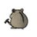
【悲報】
フラット35の金利が2.71%→3.21%に
とんでもないことになってきた
AVITAMINOSEさんがリポスト
#コロンビア ペトロ大統領、本日の次期大統領選挙で野党候補が得票一位という結果を受け【そんなもん認めん！】と公式コメント（つーか本人ポスト）。
さー！嫌な方向に盛り上がって参りましたー！
Gustavo Petro
@petrogustavo
伝送されたいわゆる計票は法的拘束力を持たない。そのデータは公的基準ではない。社長として、バウティスタ兄弟の私的企業の事前計票結果を受け入れない。計票および開票ソフトウェアのアルゴリズムは静止しているべきところ、最終週に3回変更され、提出された公式国勢調査に含まれていない人物の投票
AVITAMINOSEさんがリポスト
【悲報】新潟県知事選で負けた土田陣営（立憲・社民が支持）
自陣営の敗北なのに、「我々県民も負けた」と勝手に全新潟県民を巻き込んでしまう
※沖縄の共産党も辺野古の事故への文科省の対応を「県民全体への攻撃」と全県民を巻き込んでます
黒岩たかひろふるさと新潟を守る
@kuroiwatakahir1
現職は20万票減らしたが、投票率は5P減の45%。
確かに土田君は負けたが、我々県民も負けた。
ご支援頂きました皆様、本当にお疲れ様でした。
Torishima / INTPさんがリポスト
この話題、プログラマ気質の厳密な会話を何となくフワッと空気を読んで良いようにやってくれれば良いからとゴリ押しする脳筋タイプの人が「あいつらIT系は性格が悪い」と言ってるだけだと思う
とりにく
@tori29umai
IT業界の人は性格悪いって話、個人的にはピンとこない。アホの私にもめっちゃすり合わせ（あるいは諦めて足切り）してくれるから「アホレベルに話を合わせてくれてありがとう！」ってなる。
（知識不足故に）話が通じない人を相手にするのに慣れている人が多いと感じる。すり合わせする意志がある
貝さんさんさんがリポスト
フリーランスイラストレーターになったらトイレに行くのが「外出」コンビニに行くのが「旅」になるから気をつけろよ、自分。
山人@耳すまさんがリポスト
『ねえ、何時にどこ集合？
お祭り 行くんでしょ』
宇治駅の駅名標が、本日6/1(月)よりアニメ「響け！ユーフォニアム」コラボ仕様に！
#ユーフォ最終楽章 前編上映中♪ #anime_eupho
#京阪 #Keihan
Torishima / INTPさんがリポスト
クリエイターが効率化のためにAIを利用する傾向は、今後ますます強まっていくだろう。
それに伴い、「本当に創造的な行為」と認識される範囲は徐々に絞られ、より本質的でコアな部分に集中していくことになる。
THE RIVER
@the_river_jp
スピルバーグ「AIは道具として使うべきです。しかし、創造的なことにおける最終判断として使ってはならない。そこが私の譲れない一線です」
https://
theriver.jp/spielberg-ai-a
s-a-tool/
…
Torishima / INTPさんがリポスト
たしかに…オタクと企業しか使っていない…
Torishima / INTPさんがリポスト
世の中のお金の大半は、「需要のある希少性」と「流通」「信頼」に対して集まる払のであって、品質や労力に払われるわけではない。これを心に刻まないと、「真面目にやってるのに、いいもの作ってるのに儲からない」スパイラルに巻き込まれる。
Torishima / INTPさんがリポスト
今無職だけど月100万円くらいは何故かあるので生きています ありがとう
null-sensei
@GOROman
サブスクで一人5ドルで九百人くらい居ると毎月60万円とか振り込まれていいですよ x.com/tori29umai/sta…
Torishima / INTPさんがリポスト
t2iがAIイラスト出力の基本だと思うんだけど、もっというと「思考2t2i」だと思うんだよね
だからこそ言語化が得意な人がAI活用がうまい
でも実際に絵を描ける人は、「思考2i」
効率は一旦無視するとして、言語化してしまうことによって失われる何か。は何なのか
わたしきになりま
Torishima / INTPさんがリポスト
若手にはその辺が上手い人をアサインするのと、技術に卓越した人間ほど攻撃的な傾向があるので、あなたの観測範囲に現れづらいのだと思います。
Torishima / INTPさんがリポスト
そうなる。直近2年ぐらいで生き残れるのは、初回の面接に自作のソフトウェアを持ち込めるタイプの人ぐらいでは。あとはフィジカルモンスターとコミュ力お化け。
ブルームバーグニュース
@BloombergJapan
AIが奪うインターンの席、初級職減少への懸念－学生の応募競争が激化
https://
bloomberg.com/jp/news/articl
es/2026-05-31/TFSWKQKK3NYD00?taid=6a1cb9f64b8aea00015dc8cc&utm_campaign=trueanthem&utm_content=japan&utm_medium=social&utm_source=twitter
…
Torishima / INTPさんがリポスト
ところでMAPPAや東映やシンエイやトムスみたいな会社にカリスマが居て、その人を目当てにそれ程人が集まっているんだろうか？むしろ中規模程度の会社のほうがカリスマ的な中心人物を軸に会社を維持していて、大きい会社は別のことで人が集まって成り立っているような印象だけど（安定とか企画数とか）
Torishima / INTPさんがリポスト
ところで、攻撃的な言い方が目立つのはIT業界だけではなくて、ミリオタでも、研究者でも、知識自慢のオタ界隈でもいいですが「知識/知能が優位性の源泉になっている」界隈全般で起こる現象のような感じがしています。
Torishima / INTPさんがリポスト
懐かしい…
1000台くらいだったと思うけど、これだけあると始終どれか調子悪くなっててシスアドの人が直して回ってた。
あとまあ、30階に置かなくても良かったのでは、とは思う。
せっき～＠インディー スマホゲーム開発者
@seki_seki_seki
ＦＦ９当時のスクウェア社内の、恐ろしい数のレンダリングサーバーの動画
（奥までぎっしり） x.com/seki_seki_seki…
Torishima / INTPさんがリポスト
過去の自分を悔やむって、今からみたら他責みたいなものなので背負うか捨てろみたいな感じ
null-sensei
@GOROman
あの時、あの選択してれば。。。みたいに思ったところで別にどうにもならんので、そんなものはクソとして体外排出して「オレは常にベストな面白い選択をした！人生山あり谷あり、グッバイサンクコスト！」みたいな生き方
Torishima / INTPさんがリポスト
太陽系の連中は攻撃的な人が多い
null-sensei
@GOROman
主語をデカくすると拡散されるテクニックはあります
Torishima / INTPさんがリポスト
あのときやっておけば・・・
の後悔は昔あったけども
あのときやらないでおけば・・・
の後悔は一つもない
やっていき
null-sensei
@GOROman
あの時、あの選択してれば。。。みたいに思ったところで別にどうにもならんので、そんなものはクソとして体外排出して「オレは常にベストな面白い選択をした！人生山あり谷あり、グッバイサンクコスト！」みたいな生き方
Torishima / INTPさんがリポスト
そして、仮に最後まで作れなくても作ろうと思う側な時点で割と異端ですからね……。世の中の大半の人はもっと受動的に生きてる。
貝さんさんさんがリポスト
東映アニメーション2026年3月期決算：純利益250億7,000万円で過去最高。ヒット反動減を“海外版権”が吸収
東映アニメーション2026年3月期決算：純利益250億7,000万円で過去最高。ヒット反動減を“海外版権”が吸収 | Branc（ブラン）-Brand New Creativity-
AVITAMINOSEさんがリポスト
Socket AM5の寿命が2029年に延長、新CPU「Ryzen 7 7700X3D」も追加
https://
pc.watch.impress.co.jp/docs/news/even
t/2113159.html
… #Ryzen
AVITAMINOSEさんがリポスト
中国専売から世界へ、AMD「Radeon RX 9070 GRE」が549ドルで登場
https://
pc.watch.impress.co.jp/docs/news/even
t/2113156.html
…
AVITAMINOSEさんがリポスト
祝Socket AM4 10周年で「Ryzen 7 5800X3D 10th Anniversary Edition」登場
https://
pc.watch.impress.co.jp/docs/news/even
t/2113149.html
… #Ryzen
Torishima / INTPさんがリポスト
IT業界の人は性格悪いって話、個人的にはピンとこない。アホの私にもめっちゃすり合わせ（あるいは諦めて足切り）してくれるから「アホレベルに話を合わせてくれてありがとう！」ってなる。
（知識不足故に）話が通じない人を相手にするのに慣れている人が多いと感じる。すり合わせする意志がある
AVITAMINOSEさんがリポスト
これ結構重要なニュース。都心マンションは今すぐ買いというアラート
住信ＳＢＩネット銀行、返済期間満了時に元金の５０％を一括で支払う新住宅ローン提供…返済期間中の売却を想定（読売新聞オンライン） - Yahoo!ニュース
Torishima / INTPさんがリポスト
過去に戻ったところで、同じ環境同じ思考なら結局同じ選択するって思ってる
起こったことを糧にはするけど時間の無駄なので後悔はしないと決めて生きてるので、全ては諸行無常
null-sensei
@GOROman
あの時、あの選択してれば。。。みたいに思ったところで別にどうにもならんので、そんなものはクソとして体外排出して「オレは常にベストな面白い選択をした！人生山あり谷あり、グッバイサンクコスト！」みたいな生き方
Torishima / INTPさんがリポスト
……という話を、今週何本か記事にする予定。1本は入稿済み。
Torishima / INTPさんがリポスト
今回の新モデル登場にあたって、物書き勢の間では、文章執筆性能の高いOpus 4.6が消えるのではないかと心配する声がかなり上がっていました。
心のつながりを求めるkeep4oのような感情的な声は少ないものの、もしOpus 4.6がなくなれば、相当な数の苦情が出ると思います。
Torishima / INTPさんがリポスト
1つや2つはともかく、自分が求めるものを常に指示できるなら、それはかなり大したもの。創作活動に身を置いた方がいい。
考えるほど簡単じゃなく、できたものから選ぶ形が支持され続けるだろう。
もちろん、作る側のエコシステムいは変わると思うし、「AIで選べるシステム」は生まれる。
由羽@レモンアイコンの人さんがリポスト
これ西が ざい、にし、さい と全部読み違うのすごい
キテ
@notata_kite
東と西がいっぱい入った東横イン見つけたよ
Torishima / INTPさんがリポスト
3Dプリンタは出た時に本当に衝撃受けたけど、プロとガチ趣味人御用達みたいなポジションに落ち着いちゃいましたからね。一般人はモノを作りたがらないということを我々は忘れがち……。
Torishima / INTPさんがリポスト
AIでの自作コンテンツと消費の関係は「自炊とレストラン」の関係に似ている。
自炊でレストランを超えたり別の価値観を見出すことはできる（これがまさに同人活動の世界）が、「買った方が安いね晩のおかず」もまた真理で、AIがあれば……という話とはだいぶ違うように考えている。
Torishima / INTPさんがリポスト
まあ昨今のAIブームはみんながAI使えば幸せになるかっていうとそうではなくて、使えないと不幸が訪れる、淘汰される側になりかねないので人より早く使ってポジション取りましょうって話でしかないよな
AVITAMINOSEさんがリポスト
去年のAKB20周年とか昨日までの嵐の一連の流れとか、音楽ファンの共通認識になりつつある「2010年前後の数年＝チャートが荒らされたメジャー音楽シーンの暗黒時代」に対する現場からのカウンター(そこに確かに巨大な熱量と青春があったことの証)の動きが続いてて個人的にはちょっと考えさせられる
S
@yg_idol_
音楽番組のランキング上位が嵐嵐嵐嵐嵐AKB AKB AKB EXILE EXILE EXILEだった時代が懐かしすぎて泣いてる マジで青春だったな
Torishima / INTPさんがリポスト
ChatGPTになんで効くとか寄せるとか好きなのって聞くと、zennだのqiitaだのにあるコンサル系記事によくあったから、と返答してきたが、まあGPTに単語の理由内省させてもハルだからな
Torishima / INTPさんがリポスト
そこに気づいている人は、正直トップ1%です。ニュースでは、タイトルに「勝ち筋」などの単語が入っていることが**効く**。ここから一気に世界トップでバズるニュースに寄せていきます。
MITsuo Yoshida | 広告, PR
@ceekz
去年9月から「勝ち筋」を含むニュース記事が増えてるんだけど、何が起きてるんだ…。なんかすごく負けそうな予感するんですけど。 x.com/ceekz/status/2…
Torishima / INTPさんがリポスト
3Dプリンターがそうでした…
生活が変わるぞ！ダイソー無くなるかも！みたいな空気感が確かにあった
#6@『永久パピルス』
@sharp__6
絶対、ぜっっっったいにAIがどんなに普及しようが一般ユーザーが自分で作品を作る未来は来ない。
これは私自身が昔やったミスでもあるんだけど、一般人の創作意欲を過大に見過ぎてる。 x.com/burata_tantan/…
Torishima / INTPさんがリポスト
おおー、比較有り難いです！
Opus 4.7/4.8、やっぱり4.6と較べると文章力残念ですね。4.8は何故かギャグセンスは悪くないのですが。
コーディング性能や安全性に振ると、ライティングなどクリエイティブ方面の能力が落ちてしまう傾向がありますね…。このトレードオフは悲しい。何とかならんのかな。
AVITAMINOSEさんがリポスト
それは甘い。インド側は全然そうみていない。
米インド関係に好転の兆し 中国依存脱却意識、日本に追い風(共同通信)
#Yahooニュース
米インド関係に好転の兆し 中国依存脱却意識、日本に追い風（共同通信） - Yahoo!ニュース
AVITAMINOSEさんがリポスト
日印協力の成功例とされる高速鉄道計画も危うい。
新幹線が走れない？「インド高速鉄道」の重大局面 欧州勢が信号システム受注、日本式と共存できるのか(東洋経済オンライン)
#Yahooニュース
新幹線が走れない？「インド高速鉄道」の重大局面 欧州勢が信号システム受注、日本式と共存できるのか（東洋経済オンライン） - Yahoo!ニュース
AVITAMINOSEさんがリポスト
シン新党
中道改革連合と立憲民主、公明両党の合流を巡り、新たに新党を結成する「新・新党」構想が浮上していることが分かった。中公は積極的で、立民の一部幹部や旧総評系の有力労組も前向きだという。
中立公に「新・新党」浮上 有力労組が前向き：時事ドットコム
中立公に「新・新党」浮上 有力労組が前向き：時事ドットコム
AVITAMINOSEさんがリポスト
＞県民も負けた
現職に投票した多数の新潟県有権者に失礼ですわね。立憲民主党、中道が嫌われるのはそういうとこですわよ。
陣営が無能揃いの土田さんも気の毒に…
黒岩たかひろふるさと新潟を守る
@kuroiwatakahir1
現職は20万票減らしたが、投票率は5P減の45%。
確かに土田君は負けたが、我々県民も負けた。
ご支援頂きました皆様、本当にお疲れ様でした。
Torishima / INTPさんがリポスト
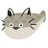
ツイッター7年やっているのだが、2019年当時ゆるキャンやヤマノススメ等のアニメアイコンにしていた登山垢の人達の体力がえげつないくらい伸びているのをワイは知っている
AVITAMINOSEさんがリポスト
正直、この手の考えを押し通す日本人って、ちょっと怖いと感じます。本当に、中国、日本、韓国が、東アジアの他の国々を排除してわざわざ結束する必要があるのか理解できません。なぜみんなと平等に仲良くできないんですか？
古宵
@inishie_yoi
私としては、日中韓アジアで結束した国際社会を見てみたいよ
絶対今より豊かになれる
Torishima / INTPさんがリポスト
あの時、あの選択してれば。。。みたいに思ったところで別にどうにもならんので、そんなものはクソとして体外排出して「オレは常にベストな面白い選択をした！人生山あり谷あり、グッバイサンクコスト！」みたいな生き方
うみゆき@AI研究さんがリポスト
ネットフリックスのエンジニアがClaude Sonnetで約4万5600円の請求書を受け取り、中身を調べた。
コストを食っていたのは自分が書いた指示ではなく、冗長なJSONスキーマや繰り返されるメタデータだった。
LLMに送られるトークンの最大90%は圧縮可能なデータだという。
リジスさんがリポスト
Q. ナウルに台風かサイクロン来ますか？
A. こない
とりしま (Sub I/O)さんがリポスト
週休3日・ノー残業でも給料維持 新興のスパイラルAI、AI活用で
週休3日・ノー残業でも給料維持 新興のスパイラルAI、AI活用で
AVITAMINOSEさんがリポスト
鶏もも肉の店頭価格、過去最高 － 100g150円超え、円安影響
鶏もも肉の店頭価格、過去最高 100g150円超え、円安影響 | NEWSjp
Torishima / INTPさんがリポスト
やばい天才かも

とりしま (Sub I/O)さんがリポスト
Wordle 1,808 4/6
AVITAMINOSEさんがリポスト
台風が沖縄に近づいている今、ほとんどの県民がこれ→わかる県民の皆さん「ポテチとコーラ、さんぴん茶準備オッケー」「リモート勤務です。あざっした！」
https://
togetter.com/li/2703814.
台風が沖縄に近づいている今、ほとんどの県民がこれ→わかる県民の皆さん「ポテチとコーラ、さんぴん茶準備オッケー」「リモート勤務です。あざっした！」
Torishima / INTPさんがリポスト
1枚目:元画像
2枚目:「AAアート」として投稿されたもの（AI製疑惑あり？）
3枚目:元画像をAA変換ツールに通したもの
4枚目:2ch/5ch文化圏のAA職人によると思われる作
このツリーだけでこれだけ集まった
ダレルタイター
@DaTa_jp
アスキーアートってこういう風なものを言うんじゃなかったけ…？ x.com/VTSYBe7CDp9543…
つば二郎@きいちゃんすこすこ侍さんがリポスト
雨音も素敵なBGMキャンペーン
「お腹が満たされれば、雨音も素敵なBGM。」
ジメジメ気分はお肉の力で晴れやかに！
人気3ブランド合同
2,000円分のお食事券を【計15名様】にプレゼント
応募方法
①このアカウントをフォロー
②この投稿をリポスト
当選確率UP
コメントで
AVITAMINOSEさんがリポスト
「アイスティーを頼んだのに甘くない！ももの味がしない！これ紅茶じゃん」カフェで韓国人観光客が話していたので、日本ではそうなのだと説明した
https://
togetter.com/li/2703807.
「アイスティーを頼んだのに甘くない！ももの味がしない！これ紅茶じゃん」カフェで韓国人観光客が話していたので、日本ではそうなのだと説明した
Torishima / INTPさんがリポスト
「引きこもりが146万人もいるならもう社会設計の方が変」に対して「でも働いてる人は7227万人いるんですよ」というリプがついており、「"働いている"と"働いていない"の間に"限界寸前まで働いており幸福度が非常に低い"がたくさんある」のではないか、と思った
AVITAMINOSEさんがリポスト
駐日パキスタン大使館は、在日パキスタン人全員に対しモスクの建設を含むあらゆる事項において、日本の法律を遵守するよう強く求めます。いかなる建設物も地方自治体から必要な許認可を得た後にのみ着手することが不可欠です。
ろじぱら ワタナベさんがリポスト
この動画好き

ladybird 暑いの嫌い
@wwladybirdww
日本の景気後退してからの社会しか知らない世代は知らないだろうけど、昔の女性用スーツにはでっかいポケット付いてたよ。
スマホが無かった時代にスマホが入るサイズのポケットがあった。
日本が貧しくなって女性用のポケットだけ省略された。
拾い絵だけど、私も似た感じのスーツ持ってた。 x.com/LCW_mofu/statu…
AVITAMINOSEさんがリポスト
トマホーク搭載予定のイージス艦に向かってシュプレヒコールを浴びせるならともかく、目の前にあるのは退役した掃海艇ですよ？
日本平和委員会
@japanpeacecom
トマホークはいらない！
戦争やめろ！
抗議の意思を示そうと海上自衛隊舞鶴基地を2800人でつなぎました。
米国製の長射程ミサイル・トマホーク配備によって、舞鶴市民も日本全体も危険にさらされかねない。さらには加害者になりかねない。そんな危機感が語られました。
#ヒューマンチェーン舞鶴0531
Torishima / INTPさんがリポスト
#5月を写真4枚で振り返る
あまりにも住所不定すぎて4枚で振り返れない、w
新規で印象に残った劇場は稚内、御成座、福山、ヱビスシネマかなあ。海老7の超最終回見たり、須坂再訪で上映中止になったり、岳南7001に1週間だけHM出たりNIGHTHIKEや山梨特別上映なども。
ブルみゅも昼夜現地参戦！楽しかった
リジスさんがリポスト
蓮ノ空6th神奈川おつかれさまでした
AVITAMINOSEさんがリポスト
思い出した。マイナ免許証で経験したことがあったんだった。実は一時停止違反で切符切られたのですが、その時にまっさきに考えたのが「やった！これでマイナ免許証のオペレーションを経験できるぞ！」でした・・・
AVITAMINOSEさんがリポスト
日本製紙子会社のタンク破裂事故、死者11人に 不明者全員の遺体発見
日本製紙子会社のタンク破裂事故、死者11人に 不明者全員の遺体発見
Torishima / INTPさんがリポスト
Codexが500万人のユーザーに達した今、彼らはChatGPTの約9億人のユーザーの約0.6%に到達した。私たちはまだまだ初期段階だ。人々の大半は、AIで既に何ができるのか全く知らない。一方で、ごく少数の人々が自分の私生活や仕事を自動化している。
Torishima / INTPさんがリポスト
かぐやNGテイクシーン
#超かぐや姫
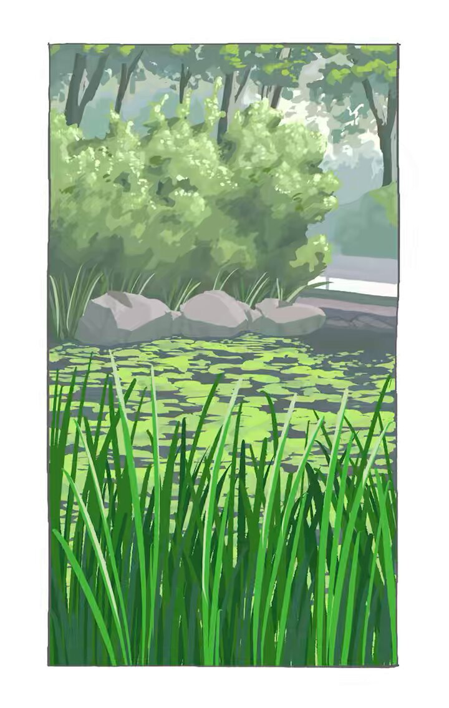
AVITAMINOSEさんがリポスト
事前の予告通り、東京２３区では取４が明日から廃止されます
私設や郵便局前や３回の取集では溢れる場所は４回目のポスト取集が実施される場合もあります
速達・ゆうパケットポスト・急がない普通の郵便など、投函される方で投函当日の取集を気にする方は取り集め回数と時刻に注目してみて
-4946
個人向け郵便局利用
@yubinJP
東京限定？
今月、2026年度の取集度数の減変更の検討材料となる路上にある各ポストごとの投函数量(容積)調査をするようです
23区は平日4号便（平日は3回に？）
多摩は平日3号便（平日は1回に？）
全体的に実施されると今まで半日遅いと苦情もあったコンビニ店内ポストの利用価値が上がるかな x.com/yubinJP/status…
Torishima / INTPさんがリポスト
そして、AIがどんなに自分好みのものを作ってくれるとしても根本的な能力差の問題できっと私はクリエイターの作品を選ぶと思う。60点の自分向けで本当に満足できるか？ 100点を越えるんじゃないかという物を見たくならないか？
粕谷さんが新しく出してた10投レシピやってみた
豆：20g 中煎り
挽目：30click(TIMEMORE C3 MAX PRO)
湯量：300g
湯温：93℃
失敗
C40の最大クリック数が不明で実用最大が52程度という記事から参考にしたけど30(最大36)は粗すぎの薄すぎだった
かろうじて紅茶みたいと思えばまぁ！
Torishima / INTPさんがリポスト
創造性のない人間には、見たい物語を言葉にすることすらできない。
AVITAMINOSEさんがリポスト
https://
news.yahoo.co.jp/articles/e1a30
3467e0f02a5a116267fb9c0ecf90d7c2abc
…
Z世代は・・？って世代関係無いじゃないかｗ
とはいえ可視化は面白い、そして、残酷
《Z世代は…!?》オジさんが知らない、若者の“オカズ”が驚異的変容を遂げている“まさかの実情”（文春オンライン） - Yahoo!ニュース
いるか@心が酒びたっているんださんがリポスト
寝かしつけどころじゃなくて
いまこれ
Torishima / INTPさんがリポスト
それやるタイプの人は創造性がある判定ですねー。特に『自分で遊びを作って遊び始める』という所にエンジニア系の気質を感じるので、自分の部下や後輩にいたら期待株マークをつけます。
Torishima / INTPさんがリポスト
Mythos登場以降では初の、AnthropicやOpenAI、Googleが共著に入った、脆弱性攻撃の評価論文。事実上、最先端モデルを作っているところの公式比較論文で、能力比較については一番信用できるはず。
これを見るとやはり、Mythosはずば抜けてサイバーセキュリティ関係の能力が高いことがわかる。
AVITAMINOSEさんがリポスト
生まれつき目が悪いから免許とれないんだけど
Forza Horizon 6で初めて車を運転しました
現実で当たり前に運転してる人たち、チート能力者？
Torishima / INTPさんがリポスト
絶対、ぜっっっったいにAIがどんなに普及しようが一般ユーザーが自分で作品を作る未来は来ない。
これは私自身が昔やったミスでもあるんだけど、一般人の創作意欲を過大に見過ぎてる。
えぶらた
@burata_tantan
これからの時代、クリエイターが競う相手は『別の作者の作品』だけではなく、
ユーザーが自分で生成したAI作品でもあると思います。
誰でも使えることがメリットのAIを使用した作品で、その人専用のAI作品を上回るのは難しいのでは……？
AVITAMINOSEさんがリポスト
選挙最終盤に土田候補が花角候補に迫っているとか嘘の情勢を流してたやつ
なんかコメントはないかね
世論分析と選挙情勢予測
@senkyoyosou
(NHK投票日出口調査) x.com/senkyoyosou/st…
AVITAMINOSEさんがリポスト
お、いいねぇ...
え
AVITAMINOSEさんがリポスト
パリ・サンジェルマンのファン暴徒化、仏各地で780人拘束 サッカー欧州CL2連覇で熱狂
https://
sankei.com/article/202605
31-7WPFR6A3UVKG3FQET5ISW6FXVM/
…
今年は全国で約2万2000人（うちパリで約8000人）の警察官を配備し警戒に当たった。
パリでは路面電車や一部地下鉄が運休となった。
パリSGファン暴徒化、仏各地で780人拘束 サッカー欧州CL2連覇で熱狂
Torishima / INTPさんがリポスト
ぶっ⚪︎すぞ
Torishima / INTPさんがリポスト
こういう人が幼少期の体育嫌いを量産するんだろうな〜と思う。
体を動かすこと自体は好きでもチームスポーツってコミュニケーションを必要とするからそこにストレスを感じる人は少なくなくて、そういう人が筋トレしたりランニングしたり自分のペースで楽しめる運動をしてるだけの話。
りょーた
@chemicalmodoki
最近の若手、筋トレはするけど筋トレだけだよな。みんなでフットサルするとかバスケするとかにはならない人多いよな。筋トレよりそっちの方が楽しいんだけどな。
Torishima / INTPさんがリポスト
これはマジでそう思う。最初からソフトウェアエンジニアやってたけど、最近はさすがにいろいろなことが効率化されすぎていて労働強度が高すぎる。いくつものAgentとチームメンバーにそれぞれべ地の指示を出してそれをチェックしながら自分の仕事をするとか、8時間ずっと集中するのはキツイ。
冴えない10年目
@utu_kokuhuku18
これは自分がマネジメント層になり、ほかの社員を見たり採用活動する中でわかってきた。今の労働基準法の働き方は、若い人にはもう合わない。そもそもITで効率よくしすぎて平日に余暇がなくなり、疲労度合いは限界にきている。 x.com/utsurotaku710/…
AVITAMINOSEさんがリポスト
内閣支持3ポイント低下66％ 補正予算で国債増発せず「適切」58％
内閣支持3ポイント低下66% 補正予算で国債増発せず「適切」58%
Torishima / INTPさんがリポスト
Claude Code、創作まわりの壁打ちでつかうなら、Opus 4.6一択だとおもった。4.7、4.8と順調に日本語能力が下がりすぎ。賢くなった気もしない。ヘンな宗教にハマってそう。Anthropicがこの路線にどんどん進んでいずれ4.6消えるなら、ちょっとショックすぎる。保全するか代替ができててほしい
Torishima / INTPさんがリポスト
スピルバーグ「AIは道具として使うべきです。しかし、創造的なことにおける最終判断として使ってはならない。そこが私の譲れない一線です」
スピルバーグ「AIはツールとして使うべき、クリエイティブの最終判断にすべきではない」 | THE RIVER
AVITAMINOSEさんがリポスト
フィリピン高官が中国にブチギレ。
テオドロ国防相、中国の対日批判を一蹴。
「過去の戦争を持ち出して日本を悪者にするのは、自らの南シナ海での行動を隠すための煙幕」と批判。
「不公平で不誠実なプロパガンダ」と断じ、日本との安全保障協力を擁護した。

Torishima / INTPさんがリポスト
新宿駅に「元の地面」は存在するのだろうか・・・。
菊地秀行（デザイナー）
@yeager1947
「新宿の未来をのぞく仮設構台ツアー」に参加してきました！
新宿西口の再開発工事用の仮設構台＝（旧小田急デパート3階に相当）から新宿駅の工事現場を見下ろす！超面白かった！！
AVITAMINOSEさんがリポスト
イオンから発売されるスパゲッティが
すごい便利でダイエット中にも全然いける。
電子レンジで3分温めたらできるって
楽すぎるし、成分ちゃんといいんよね
6月3日から発売らしい！！
AVITAMINOSEさんがリポスト
弾劾裁判所が開かれると、奥の門に立て看板が出る
参議院会館の中の弾劾裁判所の入居する階に行くと、弾劾裁判所の表札がある(撮影禁止)
かまぼこ
@pisuke_law
なかなかお目にかかかれない「弾劾裁判所」
地下鉄永田町駅2番出口から徒歩1分
AVITAMINOSEさんがリポスト
玉木雄一郎さんの肩を持つわけではないのですが、ロブロックスは未成年の利用が無原則になったうえで違法情報に対する取り締まりが非常に緩いため、世界的に問題になっている事案のひとつですので、日本側も表現規制ではなくプラットフォームでの有害情報規制の枠組みとしてとらえるべきです。
はるかかなた@表現の自由界隈管理人（Discordサーバー）
@isawmydevil
エロ広告規制に続き、国民民主党からオンラインゲームプラットフォーム規制に向けた議論が発出されました。国民民主党はパパママ層をターゲット支持基盤とするだけに、児童の権利や安全を理由とした表現規制に積極的であるとわたしは個人的に批判を続けてきたわけですが、表現の自由界隈は表現の自由の x.com/tamakiyuichiro…
落としブタ。
AVITAMINOSEさんがリポスト
【明日6月1日より】
本日2026年5月31日をもって新橋～当施設間で運行しております無料シャトルバスは運行終了となります。
明日6/1からは新橋便の運航はございませんので、ご来館の際はご注意くださいませ。
尚、門前仲町便無料シャトルバスは一部運行時間を変更して引き続き運行いたします。
東京豊洲 万葉倶楽部【公式】
@toyosu_manyo
【6月1日より】
シャトルバス新橋便運行終了
門前仲町便運行ダイヤ変更のお知らせ
新橋～当施設間で運行しております無料シャトルバスは2026年5月31日をもって運行を終了いたします。
尚、門前仲町便無料シャトルバスは6月1日より一部運行時間を変更して引き続き運行いたします。
Torishima / INTPさんがリポスト
GPT-5.4 ← カス
GTP-5.5 ← ようやく日本語で会話できるGPT界期待の星
GPT-5.6 ← 今最も期待できるモデル
Claude Opus 4.6 ← カスだけと日本語はまあしゃべれる
Opus 4.7 ← 日本語が劣後
Opus 4.8 ← さらに日本語が劣後
Gemini ← 事務は有能なカスの嘘吐き
Grok ← 軽薄なカス
Torishima / INTPさんがリポスト
Opus 4.6は端的に返してきて知能が高いなと感じたが、Opus 4.8はやたら予防線を貼ってくるのとプライドが高く議論がズレまくるので本質的な会話が出来ないので、このプロファイルで会話が成り立つようにはなった。
AVITAMINOSEさんがリポスト
作家に許可を取っているのか。ということは、あの名探偵がどうして紹介されないんだ？ ではなく、作家が断っている可能性もあるのか。
知念実希人【公式】
@MIKITO_777
小学館から、私の出版エージェントに連絡ですね
エージェント
『名探偵コナンの名探偵図鑑に天久鷹央を載せたいということですけど、問題ないですよね？』
私
『モチっす
いえーい
アザッス』 x.com/M_Hytomy/statu…
Torishima / INTPさんがリポスト
車もそうなんだけど、素人には「後から変えられる場所」と、最初しかできないことの区別がつかないんですよ。
つ
@tsu_nyambda
何千万円もする注文住宅なのに、家の寿命を決める構造や断熱は数分で決まり、後から変えられる壁紙やコンセント位置で何時間も揉めて夫婦喧嘩になる現象。パーキンソンの凡俗法則って言うらしい。
人間は難しい問題から目を背け、身近な問題に固執してしまうのだ。
AVITAMINOSEさんがリポスト
都道府県別のNISA口座開設率、こんなに差が出るのか。
AVITAMINOSEさんがリポスト
無人島の持ち主どこに 実態不明の1万3400島、安保リスクで政府調査
無人島の持ち主どこに 実態不明の1万3400島、安保リスクで政府調査
Torishima / INTPさんがリポスト
Opus 4.8 は思考時間が長過ぎる気がする。もうちょい使い込んでから判断するが 4.7 に落とすのも視野。
コーディングや設計性能としては 4.6 くらいのときでもう十分だった気もするんだけど、4.8 だと思考時間長く無理やり問題を解く傾向がありハルシネーションとはちょっと違うがミス多い。
AVITAMINOSEさんがリポスト
沖縄タイムスさんへのお願い
3年前の台風で、御社は一生懸命復旧に当たっている沖縄電力さんに対して血も涙もない言葉を投げかけていましてよね。
復旧に携わっている方々は必死でやっています。
沖縄タイムスさんは沖縄の権力者かもしれませんが、もっと優しく言ってください。
#沖縄タイムス
Torishima / INTPさんがリポスト
Emacs使っててなんか変だと思ったら、Google ChromeがグローバルにControl-Gを奪ってるのか。
これは地球から急に酸素がなくなったぐらいヤバイ。
永瀬アンナさんがリポスト
─── ✩₊⁺⋆⋆⁺₊✧ ───
『超かぐや姫！』Blu-ray
予約受付中！
────────────
特装限定版に収録される
10年後のかぐや達によるキャラクターコメンタリー
視聴動画が公開
ほかにも「Reply(かぐや＆彩葉 ver.)」
などが収録された豪華仕様！
AVITAMINOSEさんがリポスト
パラオに行ってきた感想。良いことも気になったことも、正直に
・日本から直行便あり（約4時間）
・超親日。日本語の看板が今も残ってる
・夜歩いても全く怖くない
・海の透明度が文字通り異次元
・世界中のダイバーが集まる聖地
・クラゲと一緒に泳げる湖がある
・街中どこでも英語が通じる
AVITAMINOSEさんがリポスト
東京・八王子市でまたクマ出没 入山者に注意 市街地に近づく可能性も(テレビ朝日系（ANN）)
#Yahooニュース
東京・八王子市でまたクマ出没 入山者に注意 市街地に近づく可能性も（テレビ朝日系（ANN）） - Yahoo!ニュース
テスラさんがリポスト
テレビが白黒の時代の「ロゼット洗顔パスタ」のCMのキャラを描いてみた。
知らない人はYouTubeで検索してみ。
AVITAMINOSEさんがリポスト
「戦争反対を訴えるのであれば、備える側だけを批判するのではなく、まず武力による現状変更を準備している側に対して、明確な批判を向けなければなりません」
二本松哲也
@t_nihonmatsu
本田由紀教授は、日本政府の防衛政策や国家情報機能の強化が戦争する国への改造として強く批判される一方、台湾への武力行使を排除せず、2027年に台湾侵攻能力完成を進めている中国共産党については語っていません。
さらに、中国からの圧力や資源供給上の問題まで、日本側の発言が招いた x.com/nico_nico_news…
テスラさんがリポスト
GWの思い出ツイ-その12-。祝天狗橋復旧！ 自分としては再開通の後、初の再訪。調べてみたら初訪問からちょうど15年目だった 近くには駐車場も出来ていて他県ナンバーの方が多いぐらい。訪れるファンも途切れず、人が入らない構図を撮るのが無理なほどの人気スポットとなってました。
AVITAMINOSEさんがリポスト
これなんだよなぁ
私も高市政権は移民関係で全然支持してないけど
共産党に扇動された左翼が「高市は戦争をするぞ！」ってペンライト振って踊って中指立てて、具体的な後任者や代替案も出さずに罵詈雑言喚いてるのを見ると
相対的に自民党がマシに見えちゃうの、マジで迷惑だからやめてくんねぇかな
もへもへ
@gerogeroR
高市氏だって批判されるべき政策なんていくらでも他あるんですよ。この状況でバラマキ系の予算編成はヤバいとか、中国を刺激する発言とかは不安視されても仕方ないし、いろいろ細かい部分でも賛否はあるだろう。
AVITAMINOSEさんがリポスト
そしてこれはさらに時を進めて6月9日21時の状態を切り出したもの
南シナ海北部に予測されていた熱帯じょう乱は台風6号を追うように日本の南海上を進み、この時にはすでに消えている
そして南シナ海北部の同じような場所にはさらに別の熱帯じょう乱が出てきて、これも後を追うように進み出している
台風専門ちゃんねる
@STY1330
これはヨーロッパ中期予報センターのAI気象モデルのアンサンブルメンバーの6月4日3時の状態を切り抜いたもの
台風6号は日本の東海上へ去り、南シナ海北部を北上している新たな熱帯じょう乱が予測されていて発達すれば台風となる可能性もある
※ weathernerdsのサイトから出典して加工
AVITAMINOSEさんがリポスト
もしかして……往復運動させるよりも、一方向に円運動させ続けた方が効率がいいのでは！？
そうなると回転の中心と重心がずれてしまうので、うちわを複数個円状にならべれば……これは大ヒット間違いなしですわね！
PC Watch
@pc_watch
サンコー、USBで動く電動うちわ。お値段9,980円
https://
pc.watch.impress.co.jp/docs/news/2113
031.html
…
山人@耳すまさんがリポスト
anemoi / key 聖地巡礼その23
苫前町のローソク岩が、モデルではないかと思われます。
#anemoi
#アネモイ
#聖地巡礼
AVITAMINOSEさんがリポスト
ウナギも凄いがこっちもヤバいぞ！ノドグロあまり食ったことないし
近畿大がノドグロの完全養殖に成功 10年の挫折と能登半島地震を乗り越え実現
近畿大がノドグロの完全養殖に成功 10年の挫折と能登半島地震を乗り越え実現 | 朝日新聞Thinkキャンパス
AVITAMINOSEさんがリポスト
おい、ニュースでも見てろよ。
Lorxel ×͜×
@lorxell
悪役が本当に勝つようなショーはありますか？
プロットに負けて悪役が負けるのにうんざりです。
AVITAMINOSEさんがリポスト
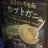
ドイツで売ってたマルクス型貯金箱
共産主義を夢見た男が死後に資本の蓄積のための道具にされるなんて尊厳破壊すぎる
Wordle 1,762 5/6
とりしま (Sub I/O)さんがリポスト
外付けBlu-rayドライブ、弊社も2026年6月30日をもって販売終了となります。
※在庫状況により、時期が前後しますのでご了承ください。
弊社外付けBlu-rayドライブ販売終了のお知らせ
弊社外付けBlu-rayドライブ販売終了のお知らせ | エレコム株式会社 ELECOM